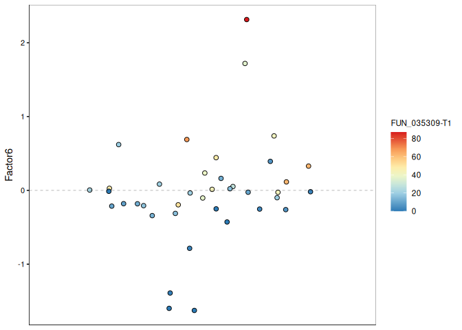
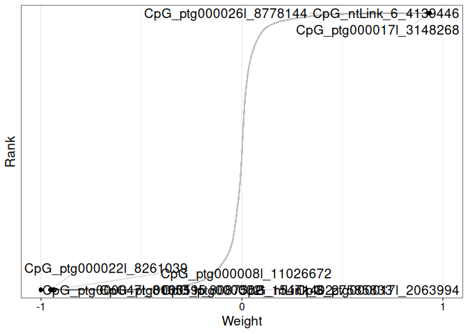

INTRO
This notebook is an introductory exploration of the E5 coral urol-e5/timeseries_molecular (GitHub repo) data using a multi-omics approach, using MOFA2.
You may want to skip ahead to the various plots, of which there are many. But, if you want to explore the nitty gritty, just scroll on through!
I started using MOFA2 after attempting to use a different multi-omics software, called barnacle. Barnacle employs the use of tensor decomposition, which was appealing. However, I ran into difficulties trying to analyze data with different numbers of features (e.g. number of genes and number of methylated CpGs). Barnacle was unhappy.
Switching to MOFA2 allowed me to get around that limitation. Additionally, MOFA2 is really, really well-documented, including a number of tutorials to walk the user through analysis. It’s very nice.
Since I was just starting out and kicking the tires, I kept things simple and only analyzed the following:
- gene expression counts
- transcript expression counts
- CpG methylation counts
I have not yet incorporated the actual timeseries aspect of this project into the analysis! Additionally, I have not incorporated the miRNA data. Both of these components were not in a ready-to-use format, so I’ll address them at a later date.
The contents below are from markdown knitted from 22.20-Apul-multiomics-MOFA2.md (commit 2d757a6).
1 SUMMARY
This script performs multiomics data integration and analysis for A. pulchra using the MOFA2 framework (MOFA2 documentation).
Software: - MOFA2: Multi-Omics Factor Analysis v2, a statistical framework for comprehensive integration of multi-modal data (Argelaguet et al. 2020).
Input files: - Genes: apul-gene_count_matrix.csv - Transcripts: apul-transcript_count_matrix.csv - lncRNA: lncRNA_counts.clean.filtered.txt - Methylated CpGs: merged-WGBS-CpG-counts_filtered.csv
Output files: - MOFA2 model HDF5 files: MOFA2_model_factors-<N>.hdf5 (where <N> is the number of factors, e.g. 10-15) - MOFA2 model RDS files: MOFA2_model_factors-<N>.rds (where <N> is the number of factors, e.g. 10-15) - Output files are written to: ../output/22.20-Apul-multiomics-MOFA2/
Script workflow: - Loads and harmonizes multiomics input data (gene, transcript, lncRNA, methylation counts) - Preprocesses data (removes zero-variance features, harmonizes sample columns) - Trains MOFA2 models for a range of factor numbers (10-15) or loads pre-trained models from disk - Performs downstream analysis and visualization of MOFA2 results (variance explained, factor characterization, feature weights)
MOFA2 reference: See (Argelaguet et al. 2020) for details. —
2 BACKGROUND
This script performs multi-omics data integration and analysis for A. pulchra using the MOFA2 framework (MOFA2 documentation) .
Software: - MOFA2: Multi-Omics Factor Analysis v2, a statistical framework for comprehensive integration of multi-modal data.
Input files:
Data files downloaded from A.pulchra Expression Count GitHub wiki.
- Genes: apul-gene_count_matrix.csv
- Transcripts: apul-transcript_count_matrix.csv
- lncRNA: lncRNA_counts.clean.filtered.txt
- Methylated CpGs: merged-WGBS-CpG-counts_filtered.csv
Output files: - MOFA2 model HDF5 files: MOFA2_model_factors-<N>.hdf5 (where <N> is the number of factors, e.g. 10-15) - MOFA2 model RDS files: MOFA2_model_factors-<N>.rds (where <N> is the number of factors, e.g. 10-15) - Output files are written to: ../output/22.20-Apul-multiomics-MOFA2/
Script workflow: - Loads and harmonizes multi-omics input data (gene, transcript, lncRNA, methylation counts) - Preprocesses data (removes zero-variance features, harmonizes sample columns) - Trains MOFA2 models for a range of factor numbers (10-15) or loads pre-trained models from disk - Performs downstream analysis and visualization of MOFA2 results (variance explained, factor characterization, feature weights)
3 Setup
3.1 Libraries
3.2 Variables
# Output directory
output_dir <- "../output/22.20-Apul-multiomics-MOFA2"
# Set factors used in model options
number_of_factors <- 11
# Model seed
model_seed <- 42
# INPUT FILES
data_files <- list(
gene_counts = "../data/apul-gene_count_matrix.csv",
transcript_counts = "../data/apul-transcript_count_matrix.csv",
lncRNA_counts = "../data/lncRNA_counts.clean.filtered.txt",
methylation_counts = "../data/merged-WGBS-CpG-counts_filtered_n20.csv"
)4 Data Structure Overview
# Show structure and preview of each data file in the data folder using tidyverse/dplyr
for (name in names(data_files)) {
cat("\n\n===== ", name, " =====\n")
file <- data_files[[name]]
dat <- fread(file)
print(glimpse(dat))
print(dat %>% slice_head(n = 3))
}===== gene_counts =====
Rows: 44,371
Columns: 41
$ gene_id <chr> "FUN_002326", "FUN_002315", "FUN_002316", "FUN_002303", …
$ `ACR-139-TP1` <int> 3, 0, 0, 10, 2, 12, 3, 1, 3, 12, 4, 10, 4, 1, 8, 1, 5, 1…
$ `ACR-139-TP2` <int> 2, 1, 0, 5, 1, 7, 1, 2, 1, 7, 1, 7, 1, 2, 4, 2, 3, 1, 6,…
$ `ACR-139-TP3` <int> 3, 0, 0, 10, 1, 10, 2, 1, 1, 11, 1, 11, 1, 2, 9, 2, 3, 1…
$ `ACR-139-TP4` <int> 4, 0, 0, 10, 2, 10, 2, 1, 3, 11, 3, 8, 3, 1, 8, 1, 3, 0,…
$ `ACR-145-TP1` <int> 12, 0, 0, 23, 2, 26, 1, 3, 2, 24, 2, 20, 2, 2, 20, 2, 12…
$ `ACR-145-TP2` <int> 7, 1, 1, 18, 3, 25, 2, 4, 2, 19, 3, 19, 3, 4, 19, 4, 6, …
$ `ACR-145-TP3` <int> 7, 0, 0, 20, 1, 22, 1, 2, 1, 25, 1, 24, 1, 2, 17, 2, 5, …
$ `ACR-145-TP4` <int> 16, 1, 0, 38, 1, 49, 1, 3, 1, 36, 1, 34, 1, 4, 31, 5, 15…
$ `ACR-150-TP1` <int> 21, 0, 0, 38, 9, 38, 9, 0, 9, 33, 9, 34, 10, 0, 41, 0, 1…
$ `ACR-150-TP2` <int> 3, 0, 0, 6, 1, 10, 1, 3, 1, 7, 1, 6, 1, 2, 5, 2, 3, 1, 5…
$ `ACR-150-TP3` <int> 10, 1, 2, 40, 11, 54, 11, 10, 12, 44, 12, 47, 10, 9, 34,…
$ `ACR-150-TP4` <int> 11, 0, 0, 30, 2, 38, 2, 6, 2, 32, 2, 31, 1, 6, 28, 6, 14…
$ `ACR-173-TP1` <int> 19, 1, 0, 73, 28, 70, 30, 2, 33, 53, 35, 49, 39, 2, 50, …
$ `ACR-173-TP2` <int> 6, 1, 2, 18, 5, 27, 7, 7, 6, 22, 6, 20, 6, 7, 16, 5, 6, …
$ `ACR-173-TP3` <int> 24, 1, 0, 73, 5, 89, 5, 15, 4, 72, 5, 78, 4, 14, 65, 13,…
$ `ACR-173-TP4` <int> 17, 0, 0, 31, 6, 40, 7, 3, 6, 28, 6, 27, 7, 2, 35, 2, 12…
$ `ACR-186-TP1` <int> 1, 0, 0, 3, 1, 3, 1, 0, 1, 3, 1, 2, 1, 0, 2, 0, 0, 0, 1,…
$ `ACR-186-TP2` <int> 2, 0, 0, 5, 1, 5, 1, 1, 1, 4, 0, 3, 0, 1, 2, 0, 2, 0, 3,…
$ `ACR-186-TP3` <int> 2, 0, 0, 4, 1, 5, 0, 0, 1, 3, 0, 3, 0, 1, 3, 0, 3, 0, 3,…
$ `ACR-186-TP4` <int> 3, 0, 0, 9, 1, 9, 1, 2, 1, 6, 1, 7, 1, 1, 7, 2, 3, 0, 7,…
$ `ACR-225-TP1` <int> 20, 0, 0, 34, 2, 38, 2, 3, 2, 29, 2, 29, 2, 3, 33, 3, 10…
$ `ACR-225-TP2` <int> 15, 2, 0, 54, 6, 74, 6, 9, 6, 58, 7, 55, 8, 8, 43, 9, 14…
$ `ACR-225-TP3` <int> 13, 0, 0, 38, 3, 47, 4, 10, 4, 41, 3, 40, 4, 9, 30, 11, …
$ `ACR-225-TP4` <int> 11, 0, 0, 21, 1, 23, 2, 1, 2, 20, 2, 18, 2, 1, 17, 2, 10…
$ `ACR-229-TP1` <int> 2, 0, 0, 2, 1, 4, 0, 1, 2, 2, 1, 2, 1, 0, 3, 0, 1, 1, 2,…
$ `ACR-229-TP2` <int> 1, 0, 0, 2, 1, 2, 2, 0, 1, 3, 1, 3, 1, 0, 1, 0, 1, 1, 3,…
$ `ACR-229-TP3` <int> 1, 0, 0, 3, 1, 2, 1, 0, 1, 2, 1, 2, 1, 0, 1, 0, 1, 0, 1,…
$ `ACR-229-TP4` <int> 0, 0, 0, 1, 0, 1, 0, 0, 0, 1, 0, 1, 0, 0, 1, 0, 1, 0, 1,…
$ `ACR-237-TP1` <int> 16, 0, 0, 45, 2, 43, 2, 2, 2, 35, 2, 35, 2, 3, 36, 2, 11…
$ `ACR-237-TP2` <int> 16, 0, 0, 37, 4, 52, 4, 7, 3, 42, 4, 44, 4, 6, 35, 7, 14…
$ `ACR-237-TP3` <int> 14, 1, 1, 36, 7, 52, 6, 15, 6, 41, 6, 41, 7, 11, 31, 13,…
$ `ACR-237-TP4` <int> 24, 0, 0, 51, 2, 54, 2, 4, 2, 44, 2, 41, 2, 3, 45, 5, 16…
$ `ACR-244-TP1` <int> 2, 0, 0, 3, 0, 3, 0, 0, 0, 2, 0, 2, 0, 1, 2, 0, 0, 0, 2,…
$ `ACR-244-TP2` <int> 1, 0, 0, 4, 1, 5, 1, 1, 1, 4, 1, 4, 1, 2, 3, 2, 1, 0, 3,…
$ `ACR-244-TP3` <int> 3, 0, 0, 12, 3, 12, 3, 2, 3, 10, 4, 9, 3, 2, 7, 2, 2, 1,…
$ `ACR-244-TP4` <int> 1, 0, 0, 3, 1, 3, 1, 0, 1, 3, 1, 3, 1, 0, 3, 0, 1, 0, 3,…
$ `ACR-265-TP1` <int> 18, 0, 0, 31, 1, 39, 1, 0, 1, 38, 1, 30, 1, 1, 34, 1, 13…
$ `ACR-265-TP2` <int> 9, 0, 1, 29, 2, 37, 2, 9, 3, 33, 2, 31, 3, 10, 22, 7, 12…
$ `ACR-265-TP3` <int> 5, 0, 0, 23, 3, 30, 4, 6, 3, 24, 4, 26, 4, 5, 17, 5, 5, …
$ `ACR-265-TP4` <int> 12, 0, 0, 23, 1, 20, 1, 0, 2, 16, 1, 15, 1, 1, 20, 0, 8,…
gene_id ACR-139-TP1 ACR-139-TP2 ACR-139-TP3 ACR-139-TP4 ACR-145-TP1
<char> <int> <int> <int> <int> <int>
1: FUN_002326 3 2 3 4 12
2: FUN_002315 0 1 0 0 0
3: FUN_002316 0 0 0 0 0
4: FUN_002303 10 5 10 10 23
5: FUN_002304 2 1 1 2 2
---
44367: FUN_044367 0 0 0 0 0
44368: FUN_044368 0 0 0 0 0
44369: FUN_044369 0 0 0 0 0
44370: FUN_044370 0 0 0 0 0
44371: FUN_044371 0 2 0 1 0
ACR-145-TP2 ACR-145-TP3 ACR-145-TP4 ACR-150-TP1 ACR-150-TP2 ACR-150-TP3
<int> <int> <int> <int> <int> <int>
1: 7 7 16 21 3 10
2: 1 0 1 0 0 1
3: 1 0 0 0 0 2
4: 18 20 38 38 6 40
5: 3 1 1 9 1 11
---
44367: 0 0 0 0 0 0
44368: 0 0 0 0 0 0
44369: 0 0 0 0 0 0
44370: 0 0 0 0 0 0
44371: 1 0 0 0 0 0
ACR-150-TP4 ACR-173-TP1 ACR-173-TP2 ACR-173-TP3 ACR-173-TP4 ACR-186-TP1
<int> <int> <int> <int> <int> <int>
1: 11 19 6 24 17 1
2: 0 1 1 1 0 0
3: 0 0 2 0 0 0
4: 30 73 18 73 31 3
5: 2 28 5 5 6 1
---
44367: 0 0 0 0 0 0
44368: 0 0 0 0 0 0
44369: 0 0 0 0 0 0
44370: 0 0 0 0 0 0
44371: 0 1 0 0 0 0
ACR-186-TP2 ACR-186-TP3 ACR-186-TP4 ACR-225-TP1 ACR-225-TP2 ACR-225-TP3
<int> <int> <int> <int> <int> <int>
1: 2 2 3 20 15 13
2: 0 0 0 0 2 0
3: 0 0 0 0 0 0
4: 5 4 9 34 54 38
5: 1 1 1 2 6 3
---
44367: 0 0 0 0 0 0
44368: 0 0 0 0 0 0
44369: 0 0 0 0 0 0
44370: 0 0 0 0 0 0
44371: 0 0 0 0 4 0
ACR-225-TP4 ACR-229-TP1 ACR-229-TP2 ACR-229-TP3 ACR-229-TP4 ACR-237-TP1
<int> <int> <int> <int> <int> <int>
1: 11 2 1 1 0 16
2: 0 0 0 0 0 0
3: 0 0 0 0 0 0
4: 21 2 2 3 1 45
5: 1 1 1 1 0 2
---
44367: 0 0 0 0 0 0
44368: 0 0 0 0 0 0
44369: 0 0 0 0 0 0
44370: 0 0 0 0 0 0
44371: 0 0 0 7 0 0
ACR-237-TP2 ACR-237-TP3 ACR-237-TP4 ACR-244-TP1 ACR-244-TP2 ACR-244-TP3
<int> <int> <int> <int> <int> <int>
1: 16 14 24 2 1 3
2: 0 1 0 0 0 0
3: 0 1 0 0 0 0
4: 37 36 51 3 4 12
5: 4 7 2 0 1 3
---
44367: 0 0 0 0 0 0
44368: 0 0 0 0 0 0
44369: 0 0 0 0 0 0
44370: 0 0 0 0 0 0
44371: 0 0 0 0 0 6
ACR-244-TP4 ACR-265-TP1 ACR-265-TP2 ACR-265-TP3 ACR-265-TP4
<int> <int> <int> <int> <int>
1: 1 18 9 5 12
2: 0 0 0 0 0
3: 0 0 1 0 0
4: 3 31 29 23 23
5: 1 1 2 3 1
---
44367: 0 0 0 0 0
44368: 0 0 0 0 0
44369: 0 0 0 0 0
44370: 0 0 0 0 0
44371: 0 0 0 0 0
gene_id ACR-139-TP1 ACR-139-TP2 ACR-139-TP3 ACR-139-TP4 ACR-145-TP1
<char> <int> <int> <int> <int> <int>
1: FUN_002326 3 2 3 4 12
2: FUN_002315 0 1 0 0 0
3: FUN_002316 0 0 0 0 0
ACR-145-TP2 ACR-145-TP3 ACR-145-TP4 ACR-150-TP1 ACR-150-TP2 ACR-150-TP3
<int> <int> <int> <int> <int> <int>
1: 7 7 16 21 3 10
2: 1 0 1 0 0 1
3: 1 0 0 0 0 2
ACR-150-TP4 ACR-173-TP1 ACR-173-TP2 ACR-173-TP3 ACR-173-TP4 ACR-186-TP1
<int> <int> <int> <int> <int> <int>
1: 11 19 6 24 17 1
2: 0 1 1 1 0 0
3: 0 0 2 0 0 0
ACR-186-TP2 ACR-186-TP3 ACR-186-TP4 ACR-225-TP1 ACR-225-TP2 ACR-225-TP3
<int> <int> <int> <int> <int> <int>
1: 2 2 3 20 15 13
2: 0 0 0 0 2 0
3: 0 0 0 0 0 0
ACR-225-TP4 ACR-229-TP1 ACR-229-TP2 ACR-229-TP3 ACR-229-TP4 ACR-237-TP1
<int> <int> <int> <int> <int> <int>
1: 11 2 1 1 0 16
2: 0 0 0 0 0 0
3: 0 0 0 0 0 0
ACR-237-TP2 ACR-237-TP3 ACR-237-TP4 ACR-244-TP1 ACR-244-TP2 ACR-244-TP3
<int> <int> <int> <int> <int> <int>
1: 16 14 24 2 1 3
2: 0 1 0 0 0 0
3: 0 1 0 0 0 0
ACR-244-TP4 ACR-265-TP1 ACR-265-TP2 ACR-265-TP3 ACR-265-TP4
<int> <int> <int> <int> <int>
1: 1 18 9 5 12
2: 0 0 0 0 0
3: 0 0 1 0 0
===== transcript_counts =====
Rows: 44,371
Columns: 41
$ transcript_id <chr> "FUN_002326-T1", "FUN_002315-T1", "FUN_002316-T1", "FUN_…
$ `ACR-139-TP1` <int> 3, 0, 0, 10, 2, 12, 3, 1, 3, 12, 4, 10, 4, 1, 8, 1, 5, 1…
$ `ACR-139-TP2` <int> 2, 1, 0, 5, 1, 7, 1, 2, 1, 7, 1, 7, 1, 2, 4, 2, 3, 1, 6,…
$ `ACR-139-TP3` <int> 3, 0, 0, 10, 1, 10, 2, 1, 1, 11, 1, 11, 1, 2, 9, 2, 3, 1…
$ `ACR-139-TP4` <int> 4, 0, 0, 10, 2, 10, 2, 1, 3, 11, 3, 8, 3, 1, 8, 1, 3, 0,…
$ `ACR-145-TP1` <int> 12, 0, 0, 23, 2, 26, 1, 3, 2, 24, 2, 20, 2, 2, 20, 2, 12…
$ `ACR-145-TP2` <int> 7, 1, 1, 18, 3, 25, 2, 4, 2, 19, 3, 19, 3, 4, 19, 4, 6, …
$ `ACR-145-TP3` <int> 7, 0, 0, 20, 1, 22, 1, 2, 1, 25, 1, 24, 1, 2, 17, 2, 5, …
$ `ACR-145-TP4` <int> 16, 1, 0, 38, 1, 49, 1, 3, 1, 36, 1, 34, 1, 4, 31, 5, 15…
$ `ACR-150-TP1` <int> 21, 0, 0, 38, 9, 38, 9, 0, 9, 33, 9, 34, 10, 0, 41, 0, 1…
$ `ACR-150-TP2` <int> 3, 0, 0, 6, 1, 10, 1, 3, 1, 7, 1, 6, 1, 2, 5, 2, 3, 1, 5…
$ `ACR-150-TP3` <int> 10, 1, 2, 40, 11, 54, 11, 10, 12, 44, 12, 47, 10, 9, 34,…
$ `ACR-150-TP4` <int> 11, 0, 0, 30, 2, 38, 2, 6, 2, 32, 2, 31, 1, 6, 28, 6, 14…
$ `ACR-173-TP1` <int> 19, 1, 0, 73, 28, 70, 30, 2, 33, 53, 35, 49, 39, 2, 50, …
$ `ACR-173-TP2` <int> 6, 1, 2, 18, 5, 27, 7, 7, 6, 22, 6, 20, 6, 7, 16, 5, 6, …
$ `ACR-173-TP3` <int> 24, 1, 0, 73, 5, 89, 5, 15, 4, 72, 5, 78, 4, 14, 65, 13,…
$ `ACR-173-TP4` <int> 17, 0, 0, 31, 6, 40, 7, 3, 6, 28, 6, 27, 7, 2, 35, 2, 12…
$ `ACR-186-TP1` <int> 1, 0, 0, 3, 1, 3, 1, 0, 1, 3, 1, 2, 1, 0, 2, 0, 0, 0, 1,…
$ `ACR-186-TP2` <int> 2, 0, 0, 5, 1, 5, 1, 1, 1, 4, 0, 3, 0, 1, 2, 0, 2, 0, 3,…
$ `ACR-186-TP3` <int> 2, 0, 0, 4, 1, 5, 0, 0, 1, 3, 0, 3, 0, 1, 3, 0, 3, 0, 3,…
$ `ACR-186-TP4` <int> 3, 0, 0, 9, 1, 9, 1, 2, 1, 6, 1, 7, 1, 1, 7, 2, 3, 0, 7,…
$ `ACR-225-TP1` <int> 20, 0, 0, 34, 2, 38, 2, 3, 2, 29, 2, 29, 2, 3, 33, 3, 10…
$ `ACR-225-TP2` <int> 15, 2, 0, 54, 6, 74, 6, 9, 6, 58, 7, 55, 8, 8, 43, 9, 14…
$ `ACR-225-TP3` <int> 13, 0, 0, 38, 3, 47, 4, 10, 4, 41, 3, 40, 4, 9, 30, 11, …
$ `ACR-225-TP4` <int> 11, 0, 0, 21, 1, 23, 2, 1, 2, 20, 2, 18, 2, 1, 17, 2, 10…
$ `ACR-229-TP1` <int> 2, 0, 0, 2, 1, 4, 0, 1, 2, 2, 1, 2, 1, 0, 3, 0, 1, 1, 2,…
$ `ACR-229-TP2` <int> 1, 0, 0, 2, 1, 2, 2, 0, 1, 3, 1, 3, 1, 0, 1, 0, 1, 1, 3,…
$ `ACR-229-TP3` <int> 1, 0, 0, 3, 1, 2, 1, 0, 1, 2, 1, 2, 1, 0, 1, 0, 1, 0, 1,…
$ `ACR-229-TP4` <int> 0, 0, 0, 1, 0, 1, 0, 0, 0, 1, 0, 1, 0, 0, 1, 0, 1, 0, 1,…
$ `ACR-237-TP1` <int> 16, 0, 0, 45, 2, 43, 2, 2, 2, 35, 2, 35, 2, 3, 36, 2, 11…
$ `ACR-237-TP2` <int> 16, 0, 0, 37, 4, 52, 4, 7, 3, 42, 4, 44, 4, 6, 35, 7, 14…
$ `ACR-237-TP3` <int> 14, 1, 1, 36, 7, 52, 6, 15, 6, 41, 6, 41, 7, 11, 31, 13,…
$ `ACR-237-TP4` <int> 24, 0, 0, 51, 2, 54, 2, 4, 2, 44, 2, 41, 2, 3, 45, 5, 16…
$ `ACR-244-TP1` <int> 2, 0, 0, 3, 0, 3, 0, 0, 0, 2, 0, 2, 0, 1, 2, 0, 0, 0, 2,…
$ `ACR-244-TP2` <int> 1, 0, 0, 4, 1, 5, 1, 1, 1, 4, 1, 4, 1, 2, 3, 2, 1, 0, 3,…
$ `ACR-244-TP3` <int> 3, 0, 0, 12, 3, 12, 3, 2, 3, 10, 4, 9, 3, 2, 7, 2, 2, 1,…
$ `ACR-244-TP4` <int> 1, 0, 0, 3, 1, 3, 1, 0, 1, 3, 1, 3, 1, 0, 3, 0, 1, 0, 3,…
$ `ACR-265-TP1` <int> 18, 0, 0, 31, 1, 39, 1, 0, 1, 38, 1, 30, 1, 1, 34, 1, 13…
$ `ACR-265-TP2` <int> 9, 0, 1, 29, 2, 37, 2, 9, 3, 33, 2, 31, 3, 10, 22, 7, 12…
$ `ACR-265-TP3` <int> 5, 0, 0, 23, 3, 30, 4, 6, 3, 24, 4, 26, 4, 5, 17, 5, 5, …
$ `ACR-265-TP4` <int> 12, 0, 0, 23, 1, 20, 1, 0, 2, 16, 1, 15, 1, 1, 20, 0, 8,…
transcript_id ACR-139-TP1 ACR-139-TP2 ACR-139-TP3 ACR-139-TP4
<char> <int> <int> <int> <int>
1: FUN_002326-T1 3 2 3 4
2: FUN_002315-T1 0 1 0 0
3: FUN_002316-T1 0 0 0 0
4: FUN_002303-T1 10 5 10 10
5: FUN_002304-T1 2 1 1 2
---
44367: FUN_044367-T1 0 0 0 0
44368: FUN_044368-T1 0 0 0 0
44369: FUN_044369-T1 0 0 0 0
44370: FUN_044370-T1 0 0 0 0
44371: FUN_044371-T1 0 2 0 1
ACR-145-TP1 ACR-145-TP2 ACR-145-TP3 ACR-145-TP4 ACR-150-TP1 ACR-150-TP2
<int> <int> <int> <int> <int> <int>
1: 12 7 7 16 21 3
2: 0 1 0 1 0 0
3: 0 1 0 0 0 0
4: 23 18 20 38 38 6
5: 2 3 1 1 9 1
---
44367: 0 0 0 0 0 0
44368: 0 0 0 0 0 0
44369: 0 0 0 0 0 0
44370: 0 0 0 0 0 0
44371: 0 1 0 0 0 0
ACR-150-TP3 ACR-150-TP4 ACR-173-TP1 ACR-173-TP2 ACR-173-TP3 ACR-173-TP4
<int> <int> <int> <int> <int> <int>
1: 10 11 19 6 24 17
2: 1 0 1 1 1 0
3: 2 0 0 2 0 0
4: 40 30 73 18 73 31
5: 11 2 28 5 5 6
---
44367: 0 0 0 0 0 0
44368: 0 0 0 0 0 0
44369: 0 0 0 0 0 0
44370: 0 0 0 0 0 0
44371: 0 0 1 0 0 0
ACR-186-TP1 ACR-186-TP2 ACR-186-TP3 ACR-186-TP4 ACR-225-TP1 ACR-225-TP2
<int> <int> <int> <int> <int> <int>
1: 1 2 2 3 20 15
2: 0 0 0 0 0 2
3: 0 0 0 0 0 0
4: 3 5 4 9 34 54
5: 1 1 1 1 2 6
---
44367: 0 0 0 0 0 0
44368: 0 0 0 0 0 0
44369: 0 0 0 0 0 0
44370: 0 0 0 0 0 0
44371: 0 0 0 0 0 4
ACR-225-TP3 ACR-225-TP4 ACR-229-TP1 ACR-229-TP2 ACR-229-TP3 ACR-229-TP4
<int> <int> <int> <int> <int> <int>
1: 13 11 2 1 1 0
2: 0 0 0 0 0 0
3: 0 0 0 0 0 0
4: 38 21 2 2 3 1
5: 3 1 1 1 1 0
---
44367: 0 0 0 0 0 0
44368: 0 0 0 0 0 0
44369: 0 0 0 0 0 0
44370: 0 0 0 0 0 0
44371: 0 0 0 0 7 0
ACR-237-TP1 ACR-237-TP2 ACR-237-TP3 ACR-237-TP4 ACR-244-TP1 ACR-244-TP2
<int> <int> <int> <int> <int> <int>
1: 16 16 14 24 2 1
2: 0 0 1 0 0 0
3: 0 0 1 0 0 0
4: 45 37 36 51 3 4
5: 2 4 7 2 0 1
---
44367: 0 0 0 0 0 0
44368: 0 0 0 0 0 0
44369: 0 0 0 0 0 0
44370: 0 0 0 0 0 0
44371: 0 0 0 0 0 0
ACR-244-TP3 ACR-244-TP4 ACR-265-TP1 ACR-265-TP2 ACR-265-TP3 ACR-265-TP4
<int> <int> <int> <int> <int> <int>
1: 3 1 18 9 5 12
2: 0 0 0 0 0 0
3: 0 0 0 1 0 0
4: 12 3 31 29 23 23
5: 3 1 1 2 3 1
---
44367: 0 0 0 0 0 0
44368: 0 0 0 0 0 0
44369: 0 0 0 0 0 0
44370: 0 0 0 0 0 0
44371: 6 0 0 0 0 0
transcript_id ACR-139-TP1 ACR-139-TP2 ACR-139-TP3 ACR-139-TP4 ACR-145-TP1
<char> <int> <int> <int> <int> <int>
1: FUN_002326-T1 3 2 3 4 12
2: FUN_002315-T1 0 1 0 0 0
3: FUN_002316-T1 0 0 0 0 0
ACR-145-TP2 ACR-145-TP3 ACR-145-TP4 ACR-150-TP1 ACR-150-TP2 ACR-150-TP3
<int> <int> <int> <int> <int> <int>
1: 7 7 16 21 3 10
2: 1 0 1 0 0 1
3: 1 0 0 0 0 2
ACR-150-TP4 ACR-173-TP1 ACR-173-TP2 ACR-173-TP3 ACR-173-TP4 ACR-186-TP1
<int> <int> <int> <int> <int> <int>
1: 11 19 6 24 17 1
2: 0 1 1 1 0 0
3: 0 0 2 0 0 0
ACR-186-TP2 ACR-186-TP3 ACR-186-TP4 ACR-225-TP1 ACR-225-TP2 ACR-225-TP3
<int> <int> <int> <int> <int> <int>
1: 2 2 3 20 15 13
2: 0 0 0 0 2 0
3: 0 0 0 0 0 0
ACR-225-TP4 ACR-229-TP1 ACR-229-TP2 ACR-229-TP3 ACR-229-TP4 ACR-237-TP1
<int> <int> <int> <int> <int> <int>
1: 11 2 1 1 0 16
2: 0 0 0 0 0 0
3: 0 0 0 0 0 0
ACR-237-TP2 ACR-237-TP3 ACR-237-TP4 ACR-244-TP1 ACR-244-TP2 ACR-244-TP3
<int> <int> <int> <int> <int> <int>
1: 16 14 24 2 1 3
2: 0 1 0 0 0 0
3: 0 1 0 0 0 0
ACR-244-TP4 ACR-265-TP1 ACR-265-TP2 ACR-265-TP3 ACR-265-TP4
<int> <int> <int> <int> <int>
1: 1 18 9 5 12
2: 0 0 0 0 0
3: 0 0 1 0 0
===== lncRNA_counts =====
Rows: 15,559
Columns: 46
$ Geneid <chr> "lncRNA_015", "lncRNA_076", "lncRNA_077", "lncRNA_078", …
$ Chr <chr> "ntLink_2", "ntLink_6", "ntLink_6", "ntLink_6", "ntLink_…
$ Start <int> 327086, 48577, 191068, 191227, 191233, 191352, 253957, 2…
$ End <int> 329262, 50741, 194203, 194203, 194203, 194203, 256027, 2…
$ Strand <chr> "+", "+", "+", "+", "+", "+", "+", "+", "+", "+", "+", "…
$ Length <int> 2177, 2165, 3136, 2977, 2971, 2852, 2071, 1764, 1100, 18…
$ `ACR-139-TP1` <dbl> 113.00, 48.00, 648.25, 648.25, 648.25, 648.25, 52.50, 36…
$ `ACR-139-TP2` <dbl> 2.00, 19.00, 694.75, 694.75, 694.75, 694.75, 13.00, 8.00…
$ `ACR-139-TP3` <dbl> 2.00, 23.00, 958.50, 958.50, 958.50, 958.50, 19.00, 13.0…
$ `ACR-139-TP4` <dbl> 114.00, 10.00, 764.75, 764.75, 764.75, 764.75, 71.00, 34…
$ `ACR-145-TP1` <dbl> 154.00, 50.00, 846.25, 846.25, 846.25, 846.25, 23.00, 15…
$ `ACR-145-TP2` <dbl> 20.00, 11.00, 488.75, 488.75, 488.75, 488.75, 12.00, 8.0…
$ `ACR-145-TP3` <dbl> 90.00, 49.00, 1035.25, 1035.25, 1035.25, 1035.25, 19.50,…
$ `ACR-145-TP4` <dbl> 106.00, 72.00, 585.00, 585.00, 585.00, 585.00, 24.00, 15…
$ `ACR-150-TP1` <dbl> 268.00, 33.00, 719.50, 719.50, 719.50, 719.50, 8.00, 8.0…
$ `ACR-150-TP2` <dbl> 37.00, 44.00, 590.75, 590.75, 590.75, 590.75, 20.50, 9.5…
$ `ACR-150-TP3` <dbl> 108.00, 19.00, 671.25, 671.25, 671.25, 671.25, 16.00, 10…
$ `ACR-150-TP4` <dbl> 26.00, 0.00, 839.75, 839.75, 839.75, 839.75, 37.00, 19.0…
$ `ACR-173-TP1` <dbl> 430.00, 13.00, 622.75, 622.75, 622.75, 622.75, 36.50, 35…
$ `ACR-173-TP2` <dbl> 36.00, 38.00, 417.75, 417.75, 417.75, 417.75, 15.50, 3.5…
$ `ACR-173-TP3` <dbl> 16.00, 24.00, 1084.00, 1084.00, 1084.00, 1084.00, 2.50, …
$ `ACR-173-TP4` <dbl> 99.00, 6.00, 848.50, 848.50, 848.50, 848.50, 19.00, 7.00…
$ `ACR-186-TP1` <dbl> 32.00, 54.00, 625.00, 625.00, 625.00, 625.00, 12.00, 12.…
$ `ACR-186-TP2` <dbl> 7.00, 122.00, 932.08, 931.08, 931.08, 930.75, 22.00, 13.…
$ `ACR-186-TP3` <dbl> 29.00, 40.00, 1325.50, 1325.50, 1325.50, 1325.50, 45.00,…
$ `ACR-186-TP4` <dbl> 37.00, 69.00, 888.50, 888.50, 888.50, 888.50, 50.50, 28.…
$ `ACR-225-TP1` <dbl> 15.00, 66.00, 870.75, 870.75, 870.75, 870.75, 3.50, 3.50…
$ `ACR-225-TP2` <dbl> 267.00, 47.00, 711.50, 711.50, 711.50, 711.50, 40.00, 28…
$ `ACR-225-TP3` <dbl> 43.00, 26.00, 947.75, 947.75, 947.75, 947.75, 15.50, 10.…
$ `ACR-225-TP4` <dbl> 8.00, 5.00, 782.50, 782.50, 782.50, 782.50, 5.00, 3.00, …
$ `ACR-229-TP1` <dbl> 4.00, 59.00, 929.25, 929.25, 929.25, 929.25, 28.00, 21.0…
$ `ACR-229-TP2` <dbl> 45.00, 68.00, 914.50, 914.50, 914.50, 914.50, 49.00, 28.…
$ `ACR-229-TP3` <dbl> 107.00, 96.00, 837.25, 837.25, 837.25, 837.25, 44.50, 21…
$ `ACR-229-TP4` <dbl> 66.00, 178.00, 786.00, 786.00, 786.00, 786.00, 0.00, 0.0…
$ `ACR-237-TP1` <dbl> 22.00, 42.00, 1060.75, 1060.75, 1060.75, 1060.75, 1.50, …
$ `ACR-237-TP2` <dbl> 58.00, 60.00, 680.20, 680.20, 680.20, 680.20, 15.00, 11.…
$ `ACR-237-TP3` <dbl> 29.00, 23.00, 672.75, 672.75, 672.75, 672.75, 34.50, 23.…
$ `ACR-237-TP4` <dbl> 104.00, 4.00, 1327.50, 1327.50, 1327.50, 1327.50, 0.00, …
$ `ACR-244-TP1` <dbl> 6.00, 116.00, 697.50, 697.50, 697.50, 697.50, 1.00, 0.00…
$ `ACR-244-TP2` <dbl> 32.00, 109.00, 834.50, 834.50, 834.50, 834.50, 27.50, 22…
$ `ACR-244-TP3` <dbl> 181.00, 58.00, 823.00, 823.00, 823.00, 823.00, 46.50, 38…
$ `ACR-244-TP4` <dbl> 38.00, 67.00, 1132.75, 1132.75, 1132.75, 1132.75, 9.50, …
$ `ACR-265-TP1` <dbl> 5.00, 147.00, 1188.50, 1188.50, 1188.50, 1188.50, 25.00,…
$ `ACR-265-TP2` <dbl> 76.00, 106.00, 812.25, 812.25, 812.25, 812.25, 40.50, 30…
$ `ACR-265-TP3` <dbl> 254.00, 109.00, 735.00, 735.00, 735.00, 735.00, 33.00, 2…
$ `ACR-265-TP4` <dbl> 43.00, 28.00, 982.25, 982.25, 982.25, 982.25, 14.00, 14.…
Geneid Chr Start End Strand Length ACR-139-TP1
<char> <char> <int> <int> <char> <int> <num>
1: lncRNA_015 ntLink_2 327086 329262 + 2177 113.00
2: lncRNA_076 ntLink_6 48577 50741 + 2165 48.00
3: lncRNA_077 ntLink_6 191068 194203 + 3136 648.25
4: lncRNA_078 ntLink_6 191227 194203 + 2977 648.25
5: lncRNA_080 ntLink_6 191233 194203 + 2971 648.25
---
15555: lncRNA_55784 ptg000076l 100025 114600 + 14576 5.81
15556: lncRNA_55785 ptg000076l 100059 114600 + 14542 5.81
15557: lncRNA_55814 ptg000086l 27295 29656 + 2362 25.00
15558: lncRNA_55815 ptg000086l 27333 30207 + 2875 27.00
15559: lncRNA_55927 ptg000126l 19531 20380 + 850 3.00
ACR-139-TP2 ACR-139-TP3 ACR-139-TP4 ACR-145-TP1 ACR-145-TP2 ACR-145-TP3
<num> <num> <num> <num> <num> <num>
1: 2.00 2.00 114.00 154.00 20.00 90.00
2: 19.00 23.00 10.00 50.00 11.00 49.00
3: 694.75 958.50 764.75 846.25 488.75 1035.25
4: 694.75 958.50 764.75 846.25 488.75 1035.25
5: 694.75 958.50 764.75 846.25 488.75 1035.25
---
15555: 184.16 29.73 30.35 177.56 11.24 37.31
15556: 184.16 29.73 30.35 177.56 11.24 37.31
15557: 12.00 22.50 21.50 252.00 128.00 255.00
15558: 13.00 23.50 23.50 255.00 142.00 258.00
15559: 29.00 50.00 33.00 33.00 0.00 92.00
ACR-145-TP4 ACR-150-TP1 ACR-150-TP2 ACR-150-TP3 ACR-150-TP4 ACR-173-TP1
<num> <num> <num> <num> <num> <num>
1: 106.00 268.0 37.00 108.00 26.00 430.00
2: 72.00 33.0 44.00 19.00 0.00 13.00
3: 585.00 719.5 590.75 671.25 839.75 622.75
4: 585.00 719.5 590.75 671.25 839.75 622.75
5: 585.00 719.5 590.75 671.25 839.75 622.75
---
15555: 111.07 10.3 92.34 12.64 25.57 19.51
15556: 111.07 10.3 92.34 12.64 25.57 19.51
15557: 550.50 97.5 232.00 235.00 189.00 49.50
15558: 607.50 101.5 281.00 239.00 213.00 54.50
15559: 90.00 25.0 21.00 31.00 40.00 76.00
ACR-173-TP2 ACR-173-TP3 ACR-173-TP4 ACR-186-TP1 ACR-186-TP2 ACR-186-TP3
<num> <num> <num> <num> <num> <num>
1: 36.00 16.00 99.00 32.00 7.00 29.0
2: 38.00 24.00 6.00 54.00 122.00 40.0
3: 417.75 1084.00 848.50 625.00 932.08 1325.5
4: 417.75 1084.00 848.50 625.00 931.08 1325.5
5: 417.75 1084.00 848.50 625.00 931.08 1325.5
---
15555: 46.02 59.42 14.84 44.54 24.91 12.8
15556: 46.02 59.42 14.84 44.54 24.91 12.8
15557: 24.00 40.50 71.00 0.00 1.00 0.0
15558: 28.00 40.50 71.00 0.00 1.00 0.0
15559: 10.00 117.00 40.00 38.00 104.00 114.0
ACR-186-TP4 ACR-225-TP1 ACR-225-TP2 ACR-225-TP3 ACR-225-TP4 ACR-229-TP1
<num> <num> <num> <num> <num> <num>
1: 37.00 15.00 267.00 43.00 8.00 4.00
2: 69.00 66.00 47.00 26.00 5.00 59.00
3: 888.50 870.75 711.50 947.75 782.50 929.25
4: 888.50 870.75 711.50 947.75 782.50 929.25
5: 888.50 870.75 711.50 947.75 782.50 929.25
---
15555: 34.18 146.58 23.34 118.35 197.86 66.95
15556: 34.18 146.58 23.34 118.35 197.86 66.95
15557: 0.00 67.00 60.00 76.00 58.50 152.00
15558: 0.00 70.00 70.00 81.00 58.50 159.00
15559: 89.00 63.00 7.00 48.00 18.00 0.00
ACR-229-TP2 ACR-229-TP3 ACR-229-TP4 ACR-237-TP1 ACR-237-TP2 ACR-237-TP3
<num> <num> <num> <num> <num> <num>
1: 45.00 107.00 66.0 22.00 58.00 29.00
2: 68.00 96.00 178.0 42.00 60.00 23.00
3: 914.50 837.25 786.0 1060.75 680.20 672.75
4: 914.50 837.25 786.0 1060.75 680.20 672.75
5: 914.50 837.25 786.0 1060.75 680.20 672.75
---
15555: 36.22 24.41 73.2 28.93 11.32 31.15
15556: 36.22 24.41 73.2 28.93 11.32 31.15
15557: 45.00 77.50 140.0 122.00 186.50 199.50
15558: 53.00 104.50 142.0 122.00 230.50 227.50
15559: 0.00 0.00 0.0 76.00 18.00 8.00
ACR-237-TP4 ACR-244-TP1 ACR-244-TP2 ACR-244-TP3 ACR-244-TP4 ACR-265-TP1
<num> <num> <num> <num> <num> <num>
1: 104.00 6.00 32.00 181.00 38.00 5.00
2: 4.00 116.00 109.00 58.00 67.00 147.00
3: 1327.50 697.50 834.50 823.00 1132.75 1188.50
4: 1327.50 697.50 834.50 823.00 1132.75 1188.50
5: 1327.50 697.50 834.50 823.00 1132.75 1188.50
---
15555: 76.14 13.05 14.61 11.47 45.68 189.53
15556: 76.14 13.05 14.61 11.47 45.68 189.53
15557: 198.00 122.50 208.00 185.50 168.50 546.50
15558: 199.00 118.50 230.00 207.50 175.50 550.50
15559: 58.00 118.00 120.00 179.00 345.00 55.00
ACR-265-TP2 ACR-265-TP3 ACR-265-TP4
<num> <num> <num>
1: 76.00 254.00 43.00
2: 106.00 109.00 28.00
3: 812.25 735.00 982.25
4: 812.25 735.00 982.25
5: 812.25 735.00 982.25
---
15555: 19.69 75.12 94.46
15556: 19.69 75.12 94.46
15557: 391.00 287.00 210.50
15558: 463.00 320.00 213.50
15559: 66.00 68.00 82.00
Geneid Chr Start End Strand Length ACR-139-TP1 ACR-139-TP2
<char> <char> <int> <int> <char> <int> <num> <num>
1: lncRNA_015 ntLink_2 327086 329262 + 2177 113.00 2.00
2: lncRNA_076 ntLink_6 48577 50741 + 2165 48.00 19.00
3: lncRNA_077 ntLink_6 191068 194203 + 3136 648.25 694.75
ACR-139-TP3 ACR-139-TP4 ACR-145-TP1 ACR-145-TP2 ACR-145-TP3 ACR-145-TP4
<num> <num> <num> <num> <num> <num>
1: 2.0 114.00 154.00 20.00 90.00 106
2: 23.0 10.00 50.00 11.00 49.00 72
3: 958.5 764.75 846.25 488.75 1035.25 585
ACR-150-TP1 ACR-150-TP2 ACR-150-TP3 ACR-150-TP4 ACR-173-TP1 ACR-173-TP2
<num> <num> <num> <num> <num> <num>
1: 268.0 37.00 108.00 26.00 430.00 36.00
2: 33.0 44.00 19.00 0.00 13.00 38.00
3: 719.5 590.75 671.25 839.75 622.75 417.75
ACR-173-TP3 ACR-173-TP4 ACR-186-TP1 ACR-186-TP2 ACR-186-TP3 ACR-186-TP4
<num> <num> <num> <num> <num> <num>
1: 16 99.0 32 7.00 29.0 37.0
2: 24 6.0 54 122.00 40.0 69.0
3: 1084 848.5 625 932.08 1325.5 888.5
ACR-225-TP1 ACR-225-TP2 ACR-225-TP3 ACR-225-TP4 ACR-229-TP1 ACR-229-TP2
<num> <num> <num> <num> <num> <num>
1: 15.00 267.0 43.00 8.0 4.00 45.0
2: 66.00 47.0 26.00 5.0 59.00 68.0
3: 870.75 711.5 947.75 782.5 929.25 914.5
ACR-229-TP3 ACR-229-TP4 ACR-237-TP1 ACR-237-TP2 ACR-237-TP3 ACR-237-TP4
<num> <num> <num> <num> <num> <num>
1: 107.00 66 22.00 58.0 29.00 104.0
2: 96.00 178 42.00 60.0 23.00 4.0
3: 837.25 786 1060.75 680.2 672.75 1327.5
ACR-244-TP1 ACR-244-TP2 ACR-244-TP3 ACR-244-TP4 ACR-265-TP1 ACR-265-TP2
<num> <num> <num> <num> <num> <num>
1: 6.0 32.0 181 38.00 5.0 76.00
2: 116.0 109.0 58 67.00 147.0 106.00
3: 697.5 834.5 823 1132.75 1188.5 812.25
ACR-265-TP3 ACR-265-TP4
<num> <num>
1: 254 43.00
2: 109 28.00
3: 735 982.25
===== methylation_counts =====
Rows: 6,566,306
Columns: 40
$ CpG <chr> "CpG_ntLink_0_90500", "CpG_ntLink_0_90540", "CpG_ntLink_…
$ `ACR-145-TP3` <dbl> 0.000000, 0.000000, 0.000000, 0.000000, 0.000000, 17.391…
$ `ACR-265-TP4` <dbl> 0.000000, 0.000000, 0.000000, NA, 0.000000, 30.000000, N…
$ `ACR-139-TP3` <dbl> 0.000000, 0.000000, 0.000000, 0.000000, 0.000000, NA, NA…
$ `ACR-244-TP1` <dbl> NA, NA, NA, NA, NA, NA, NA, 50.00000, NA, 50.00000, 54.5…
$ `ACR-237-TP1` <dbl> NA, NA, NA, NA, NA, NA, NA, 33.33333, 21.42857, 28.57143…
$ `ACR-265-TP3` <dbl> 0.000000, 0.000000, 0.000000, 0.000000, 0.000000, 6.2500…
$ `ACR-186-TP4` <dbl> 0.000000, 0.000000, 0.000000, 2.857143, 5.555556, 14.285…
$ `ACR-186-TP2` <dbl> 1.851852, 2.985075, 1.428571, 3.030303, 2.777778, 5.5555…
$ `ACR-244-TP4` <dbl> NA, NA, NA, NA, NA, NA, NA, 25.000000, 31.250000, 29.411…
$ `ACR-225-TP3` <dbl> NA, NA, NA, NA, NA, NA, NA, 21.428571, 21.428571, 21.428…
$ `ACR-139-TP2` <dbl> 0.000000, 0.000000, 0.000000, 0.000000, 0.000000, 18.750…
$ `ACR-186-TP1` <dbl> 0.000000, 0.000000, 0.000000, 0.000000, 0.000000, 23.529…
$ `ACR-145-TP1` <dbl> 0.000000, 0.000000, 0.000000, 0.000000, 0.000000, 7.1428…
$ `ACR-145-TP4` <dbl> 0.000000, 3.448276, 0.000000, 0.000000, 0.000000, 5.5555…
$ `ACR-225-TP4` <dbl> 0.000000, 0.000000, 0.000000, 0.000000, 0.000000, 9.0909…
$ `ACR-173-TP3` <dbl> NA, NA, NA, NA, NA, NA, NA, 7.142857, 6.666667, 6.666667…
$ `ACR-150-TP4` <dbl> NA, NA, 0.000000, NA, NA, NA, NA, 27.272727, 28.571429, …
$ `ACR-173-TP1` <dbl> NA, 0.000000, 0.000000, NA, NA, NA, NA, 8.333333, 8.3333…
$ `ACR-173-TP2` <dbl> NA, NA, 0.000000, NA, 0.000000, 30.000000, 0.000000, 15.…
$ `ACR-237-TP3` <dbl> NA, NA, NA, NA, NA, NA, NA, 50.000000, 40.000000, 50.000…
$ `ACR-265-TP1` <dbl> 0.000000, 0.000000, 0.000000, 0.000000, 0.000000, 13.513…
$ `ACR-186-TP3` <dbl> 0.000000, 0.000000, 0.000000, 0.000000, 0.000000, 26.315…
$ `ACR-229-TP1` <dbl> 0.000000, 0.000000, 0.000000, 4.545455, 0.000000, 9.0909…
$ `ACR-229-TP2` <dbl> 0.000000, 0.000000, 0.000000, 0.000000, 0.000000, 8.3333…
$ `ACR-150-TP3` <dbl> NA, NA, NA, NA, NA, NA, NA, 46.666667, 50.000000, 50.000…
$ `ACR-173-TP4` <dbl> NA, NA, NA, NA, NA, NA, NA, 17.647059, 25.000000, 12.500…
$ `ACR-225-TP2` <dbl> 0.000000, 0.000000, 0.000000, 8.333333, 0.000000, 0.0000…
$ `ACR-244-TP2` <dbl> NA, NA, NA, NA, NA, NA, NA, 33.33333, 26.08696, 40.90909…
$ `ACR-150-TP2` <dbl> NA, NA, NA, NA, NA, NA, NA, 30.769231, 25.000000, 36.000…
$ `ACR-237-TP2` <dbl> NA, 0.000000, 0.000000, NA, NA, NA, NA, 12.500000, 12.00…
$ `ACR-265-TP2` <dbl> 4.166667, 0.000000, 0.000000, 0.000000, 0.000000, 18.750…
$ `ACR-229-TP4` <dbl> 0.00000, 0.00000, 0.00000, 0.00000, 0.00000, 15.38462, 0…
$ `ACR-244-TP3` <dbl> NA, NA, NA, NA, NA, NA, NA, NA, NA, NA, 27.272727, 15.38…
$ `ACR-150-TP1` <dbl> NA, 0.000000, 0.000000, NA, NA, NA, NA, 28.571429, 20.00…
$ `ACR-139-TP1` <dbl> 0.000000, 0.000000, 0.000000, 5.882353, 0.000000, 5.5555…
$ `ACR-145-TP2` <dbl> 0.000000, 2.631579, 2.439024, 0.000000, 0.000000, 8.6956…
$ `ACR-139-TP4` <dbl> 0.00000, 0.00000, 0.00000, 0.00000, 0.00000, 16.66667, 0…
$ `ACR-229-TP3` <dbl> 0.00000, 0.00000, 0.00000, 0.00000, 0.00000, 12.50000, 0…
$ `ACR-237-TP4` <dbl> NA, NA, NA, NA, NA, NA, NA, 40.000000, 30.000000, 30.000…
CpG ACR-145-TP3 ACR-265-TP4 ACR-139-TP3 ACR-244-TP1
<char> <num> <num> <num> <num>
1: CpG_ntLink_0_90500 0 0 0.00000 NA
2: CpG_ntLink_0_90540 0 0 0.00000 NA
3: CpG_ntLink_0_90562 0 0 0.00000 NA
4: CpG_ntLink_0_90633 0 NA 0.00000 NA
5: CpG_ntLink_0_90648 0 0 0.00000 NA
---
6566302: CpG_ptg000185l_33346 NA NA 0.00000 2.272727
6566303: CpG_ptg000185l_33559 NA NA 0.00000 0.000000
6566304: CpG_ptg000185l_33571 NA NA 13.33333 1.666667
6566305: CpG_ptg000185l_33573 NA NA 13.33333 0.000000
6566306: CpG_ptg000185l_33592 NA NA 0.00000 0.000000
ACR-237-TP1 ACR-265-TP3 ACR-186-TP4 ACR-186-TP2 ACR-244-TP4
<num> <num> <num> <num> <num>
1: NA 0 0.000000 1.851852 NA
2: NA 0 0.000000 2.985075 NA
3: NA 0 0.000000 1.428571 NA
4: NA 0 2.857143 3.030303 NA
5: NA 0 5.555556 2.777778 NA
---
6566302: 0 NA NA NA 0.000000
6566303: 0 NA NA NA 0.000000
6566304: 0 NA NA NA 0.000000
6566305: 0 NA NA NA 2.040816
6566306: 0 NA NA NA 0.000000
ACR-225-TP3 ACR-139-TP2 ACR-186-TP1 ACR-145-TP1 ACR-145-TP4
<num> <num> <num> <num> <num>
1: NA 0 0 0 0.000000
2: NA 0 0 0 3.448276
3: NA 0 0 0 0.000000
4: NA 0 0 0 0.000000
5: NA 0 0 0 0.000000
---
6566302: 0.000000 0 NA NA NA
6566303: 0.000000 0 NA NA 0.000000
6566304: 0.000000 0 NA NA 0.000000
6566305: 6.666667 0 NA NA 0.000000
6566306: 0.000000 0 NA NA NA
ACR-225-TP4 ACR-173-TP3 ACR-150-TP4 ACR-173-TP1 ACR-173-TP2
<num> <num> <num> <num> <num>
1: 0 NA NA NA NA
2: 0 NA NA 0 NA
3: 0 NA 0.000000 0 0
4: 0 NA NA NA NA
5: 0 NA NA NA 0
---
6566302: 0 0 0.000000 0 0
6566303: 0 0 0.000000 0 0
6566304: 0 0 7.142857 0 0
6566305: 0 0 0.000000 0 0
6566306: 20 0 18.181818 0 0
ACR-237-TP3 ACR-265-TP1 ACR-186-TP3 ACR-229-TP1 ACR-229-TP2
<num> <num> <num> <num> <num>
1: NA 0 0 0.000000 0
2: NA 0 0 0.000000 0
3: NA 0 0 0.000000 0
4: NA 0 0 4.545455 0
5: NA 0 0 0.000000 0
---
6566302: 0.000000 NA 0 NA NA
6566303: 0.000000 NA NA NA NA
6566304: 0.000000 NA NA NA NA
6566305: 5.263158 NA NA NA NA
6566306: 0.000000 NA NA NA NA
ACR-150-TP3 ACR-173-TP4 ACR-225-TP2 ACR-244-TP2 ACR-150-TP2
<num> <num> <num> <num> <num>
1: NA NA 0.000000 NA NA
2: NA NA 0.000000 NA NA
3: NA NA 0.000000 NA NA
4: NA NA 8.333333 NA NA
5: NA NA 0.000000 NA NA
---
6566302: 0.000000 0 0.000000 0 0
6566303: 0.000000 0 0.000000 0 0
6566304: 0.000000 0 0.000000 0 0
6566305: 0.000000 0 0.000000 0 0
6566306: 9.090909 NA 0.000000 0 0
ACR-237-TP2 ACR-265-TP2 ACR-229-TP4 ACR-244-TP3 ACR-150-TP1
<num> <num> <num> <num> <num>
1: NA 4.166667 0 NA NA
2: 0.000000 0.000000 0 NA 0.000000
3: 0.000000 0.000000 0 NA 0.000000
4: NA 0.000000 0 NA NA
5: NA 0.000000 0 NA NA
---
6566302: 0.000000 NA NA 0 0.000000
6566303: 0.000000 NA NA 0 5.263158
6566304: 0.000000 NA NA 0 0.000000
6566305: 0.000000 NA NA 0 0.000000
6566306: 7.692308 NA NA 0 6.666667
ACR-139-TP1 ACR-145-TP2 ACR-139-TP4 ACR-229-TP3 ACR-237-TP4
<num> <num> <num> <num> <num>
1: 0.000000 0.000000 0.000000 0 NA
2: 0.000000 2.631579 0.000000 0 NA
3: 0.000000 2.439024 0.000000 0 NA
4: 5.882353 0.000000 0.000000 0 NA
5: 0.000000 0.000000 0.000000 0 NA
---
6566302: 0.000000 0.000000 0.000000 NA 0.000000
6566303: 4.545455 NA 0.000000 NA 3.703704
6566304: 5.555556 NA 18.181818 NA 0.000000
6566305: 10.526316 NA 14.285714 NA 0.000000
6566306: 0.000000 NA 5.555556 NA 0.000000
CpG ACR-145-TP3 ACR-265-TP4 ACR-139-TP3 ACR-244-TP1
<char> <num> <num> <num> <num>
1: CpG_ntLink_0_90500 0 0 0 NA
2: CpG_ntLink_0_90540 0 0 0 NA
3: CpG_ntLink_0_90562 0 0 0 NA
ACR-237-TP1 ACR-265-TP3 ACR-186-TP4 ACR-186-TP2 ACR-244-TP4 ACR-225-TP3
<num> <num> <num> <num> <num> <num>
1: NA 0 0 1.851852 NA NA
2: NA 0 0 2.985075 NA NA
3: NA 0 0 1.428571 NA NA
ACR-139-TP2 ACR-186-TP1 ACR-145-TP1 ACR-145-TP4 ACR-225-TP4 ACR-173-TP3
<num> <num> <num> <num> <num> <num>
1: 0 0 0 0.000000 0 NA
2: 0 0 0 3.448276 0 NA
3: 0 0 0 0.000000 0 NA
ACR-150-TP4 ACR-173-TP1 ACR-173-TP2 ACR-237-TP3 ACR-265-TP1 ACR-186-TP3
<num> <num> <num> <num> <num> <num>
1: NA NA NA NA 0 0
2: NA 0 NA NA 0 0
3: 0 0 0 NA 0 0
ACR-229-TP1 ACR-229-TP2 ACR-150-TP3 ACR-173-TP4 ACR-225-TP2 ACR-244-TP2
<num> <num> <num> <num> <num> <num>
1: 0 0 NA NA 0 NA
2: 0 0 NA NA 0 NA
3: 0 0 NA NA 0 NA
ACR-150-TP2 ACR-237-TP2 ACR-265-TP2 ACR-229-TP4 ACR-244-TP3 ACR-150-TP1
<num> <num> <num> <num> <num> <num>
1: NA NA 4.166667 0 NA NA
2: NA 0 0.000000 0 NA 0
3: NA 0 0.000000 0 NA 0
ACR-139-TP1 ACR-145-TP2 ACR-139-TP4 ACR-229-TP3 ACR-237-TP4
<num> <num> <num> <num> <num>
1: 0 0.000000 0 0 NA
2: 0 2.631579 0 0 NA
3: 0 2.439024 0 0 NA5 DATA PREP FOR MOFA2
5.1 View data structures
Primarily converts data to tibbles for easier viewing/compatability with tidyverse.
# Prepare data for MOFA2: ensure features are rows, samples are columns using dplyr/tidyverse
lncRNA_raw <- fread(data_files$lncRNA_counts) %>% as_tibble()
lncRNA_counts <- lncRNA_raw %>% select(-(1:6))
lncRNA_counts <- lncRNA_counts %>% mutate(Geneid = lncRNA_raw$Geneid) %>% relocate(Geneid)
gene_counts <- fread(data_files$gene_counts) %>% as_tibble()
transcript_counts <- fread(data_files$transcript_counts) %>% as_tibble()
methylation_counts <- fread(data_files$methylation_counts) %>% as_tibble()
# Show structure of processed data
cat("\n\n===== lncRNA_counts (processed) =====\n")===== lncRNA_counts (processed) =====print(glimpse(lncRNA_counts))Rows: 15,559
Columns: 41
$ Geneid <chr> "lncRNA_015", "lncRNA_076", "lncRNA_077", "lncRNA_078", …
$ `ACR-139-TP1` <dbl> 113.00, 48.00, 648.25, 648.25, 648.25, 648.25, 52.50, 36…
$ `ACR-139-TP2` <dbl> 2.00, 19.00, 694.75, 694.75, 694.75, 694.75, 13.00, 8.00…
$ `ACR-139-TP3` <dbl> 2.00, 23.00, 958.50, 958.50, 958.50, 958.50, 19.00, 13.0…
$ `ACR-139-TP4` <dbl> 114.00, 10.00, 764.75, 764.75, 764.75, 764.75, 71.00, 34…
$ `ACR-145-TP1` <dbl> 154.00, 50.00, 846.25, 846.25, 846.25, 846.25, 23.00, 15…
$ `ACR-145-TP2` <dbl> 20.00, 11.00, 488.75, 488.75, 488.75, 488.75, 12.00, 8.0…
$ `ACR-145-TP3` <dbl> 90.00, 49.00, 1035.25, 1035.25, 1035.25, 1035.25, 19.50,…
$ `ACR-145-TP4` <dbl> 106.00, 72.00, 585.00, 585.00, 585.00, 585.00, 24.00, 15…
$ `ACR-150-TP1` <dbl> 268.00, 33.00, 719.50, 719.50, 719.50, 719.50, 8.00, 8.0…
$ `ACR-150-TP2` <dbl> 37.00, 44.00, 590.75, 590.75, 590.75, 590.75, 20.50, 9.5…
$ `ACR-150-TP3` <dbl> 108.00, 19.00, 671.25, 671.25, 671.25, 671.25, 16.00, 10…
$ `ACR-150-TP4` <dbl> 26.00, 0.00, 839.75, 839.75, 839.75, 839.75, 37.00, 19.0…
$ `ACR-173-TP1` <dbl> 430.00, 13.00, 622.75, 622.75, 622.75, 622.75, 36.50, 35…
$ `ACR-173-TP2` <dbl> 36.00, 38.00, 417.75, 417.75, 417.75, 417.75, 15.50, 3.5…
$ `ACR-173-TP3` <dbl> 16.00, 24.00, 1084.00, 1084.00, 1084.00, 1084.00, 2.50, …
$ `ACR-173-TP4` <dbl> 99.00, 6.00, 848.50, 848.50, 848.50, 848.50, 19.00, 7.00…
$ `ACR-186-TP1` <dbl> 32.00, 54.00, 625.00, 625.00, 625.00, 625.00, 12.00, 12.…
$ `ACR-186-TP2` <dbl> 7.00, 122.00, 932.08, 931.08, 931.08, 930.75, 22.00, 13.…
$ `ACR-186-TP3` <dbl> 29.00, 40.00, 1325.50, 1325.50, 1325.50, 1325.50, 45.00,…
$ `ACR-186-TP4` <dbl> 37.00, 69.00, 888.50, 888.50, 888.50, 888.50, 50.50, 28.…
$ `ACR-225-TP1` <dbl> 15.00, 66.00, 870.75, 870.75, 870.75, 870.75, 3.50, 3.50…
$ `ACR-225-TP2` <dbl> 267.00, 47.00, 711.50, 711.50, 711.50, 711.50, 40.00, 28…
$ `ACR-225-TP3` <dbl> 43.00, 26.00, 947.75, 947.75, 947.75, 947.75, 15.50, 10.…
$ `ACR-225-TP4` <dbl> 8.00, 5.00, 782.50, 782.50, 782.50, 782.50, 5.00, 3.00, …
$ `ACR-229-TP1` <dbl> 4.00, 59.00, 929.25, 929.25, 929.25, 929.25, 28.00, 21.0…
$ `ACR-229-TP2` <dbl> 45.00, 68.00, 914.50, 914.50, 914.50, 914.50, 49.00, 28.…
$ `ACR-229-TP3` <dbl> 107.00, 96.00, 837.25, 837.25, 837.25, 837.25, 44.50, 21…
$ `ACR-229-TP4` <dbl> 66.00, 178.00, 786.00, 786.00, 786.00, 786.00, 0.00, 0.0…
$ `ACR-237-TP1` <dbl> 22.00, 42.00, 1060.75, 1060.75, 1060.75, 1060.75, 1.50, …
$ `ACR-237-TP2` <dbl> 58.00, 60.00, 680.20, 680.20, 680.20, 680.20, 15.00, 11.…
$ `ACR-237-TP3` <dbl> 29.00, 23.00, 672.75, 672.75, 672.75, 672.75, 34.50, 23.…
$ `ACR-237-TP4` <dbl> 104.00, 4.00, 1327.50, 1327.50, 1327.50, 1327.50, 0.00, …
$ `ACR-244-TP1` <dbl> 6.00, 116.00, 697.50, 697.50, 697.50, 697.50, 1.00, 0.00…
$ `ACR-244-TP2` <dbl> 32.00, 109.00, 834.50, 834.50, 834.50, 834.50, 27.50, 22…
$ `ACR-244-TP3` <dbl> 181.00, 58.00, 823.00, 823.00, 823.00, 823.00, 46.50, 38…
$ `ACR-244-TP4` <dbl> 38.00, 67.00, 1132.75, 1132.75, 1132.75, 1132.75, 9.50, …
$ `ACR-265-TP1` <dbl> 5.00, 147.00, 1188.50, 1188.50, 1188.50, 1188.50, 25.00,…
$ `ACR-265-TP2` <dbl> 76.00, 106.00, 812.25, 812.25, 812.25, 812.25, 40.50, 30…
$ `ACR-265-TP3` <dbl> 254.00, 109.00, 735.00, 735.00, 735.00, 735.00, 33.00, 2…
$ `ACR-265-TP4` <dbl> 43.00, 28.00, 982.25, 982.25, 982.25, 982.25, 14.00, 14.…
# A tibble: 15,559 × 41
Geneid `ACR-139-TP1` `ACR-139-TP2` `ACR-139-TP3` `ACR-139-TP4` `ACR-145-TP1`
<chr> <dbl> <dbl> <dbl> <dbl> <dbl>
1 lncRNA… 113 2 2 114 154
2 lncRNA… 48 19 23 10 50
3 lncRNA… 648. 695. 958. 765. 846.
4 lncRNA… 648. 695. 958. 765. 846.
5 lncRNA… 648. 695. 958. 765. 846.
6 lncRNA… 648. 695. 958. 765. 846.
7 lncRNA… 52.5 13 19 71 23
8 lncRNA… 36.5 8 13 34 15
9 lncRNA… 0 3.5 4.5 2.5 53.5
10 lncRNA… 4 6 25 39 26
# ℹ 15,549 more rows
# ℹ 35 more variables: `ACR-145-TP2` <dbl>, `ACR-145-TP3` <dbl>,
# `ACR-145-TP4` <dbl>, `ACR-150-TP1` <dbl>, `ACR-150-TP2` <dbl>,
# `ACR-150-TP3` <dbl>, `ACR-150-TP4` <dbl>, `ACR-173-TP1` <dbl>,
# `ACR-173-TP2` <dbl>, `ACR-173-TP3` <dbl>, `ACR-173-TP4` <dbl>,
# `ACR-186-TP1` <dbl>, `ACR-186-TP2` <dbl>, `ACR-186-TP3` <dbl>,
# `ACR-186-TP4` <dbl>, `ACR-225-TP1` <dbl>, `ACR-225-TP2` <dbl>, …print(lncRNA_counts %>% slice_head(n = 3))# A tibble: 3 × 41
Geneid `ACR-139-TP1` `ACR-139-TP2` `ACR-139-TP3` `ACR-139-TP4` `ACR-145-TP1`
<chr> <dbl> <dbl> <dbl> <dbl> <dbl>
1 lncRNA_… 113 2 2 114 154
2 lncRNA_… 48 19 23 10 50
3 lncRNA_… 648. 695. 958. 765. 846.
# ℹ 35 more variables: `ACR-145-TP2` <dbl>, `ACR-145-TP3` <dbl>,
# `ACR-145-TP4` <dbl>, `ACR-150-TP1` <dbl>, `ACR-150-TP2` <dbl>,
# `ACR-150-TP3` <dbl>, `ACR-150-TP4` <dbl>, `ACR-173-TP1` <dbl>,
# `ACR-173-TP2` <dbl>, `ACR-173-TP3` <dbl>, `ACR-173-TP4` <dbl>,
# `ACR-186-TP1` <dbl>, `ACR-186-TP2` <dbl>, `ACR-186-TP3` <dbl>,
# `ACR-186-TP4` <dbl>, `ACR-225-TP1` <dbl>, `ACR-225-TP2` <dbl>,
# `ACR-225-TP3` <dbl>, `ACR-225-TP4` <dbl>, `ACR-229-TP1` <dbl>, …cat("\n\n===== gene_counts (original) =====\n")===== gene_counts (original) =====print(glimpse(gene_counts))Rows: 44,371
Columns: 41
$ gene_id <chr> "FUN_002326", "FUN_002315", "FUN_002316", "FUN_002303", …
$ `ACR-139-TP1` <int> 3, 0, 0, 10, 2, 12, 3, 1, 3, 12, 4, 10, 4, 1, 8, 1, 5, 1…
$ `ACR-139-TP2` <int> 2, 1, 0, 5, 1, 7, 1, 2, 1, 7, 1, 7, 1, 2, 4, 2, 3, 1, 6,…
$ `ACR-139-TP3` <int> 3, 0, 0, 10, 1, 10, 2, 1, 1, 11, 1, 11, 1, 2, 9, 2, 3, 1…
$ `ACR-139-TP4` <int> 4, 0, 0, 10, 2, 10, 2, 1, 3, 11, 3, 8, 3, 1, 8, 1, 3, 0,…
$ `ACR-145-TP1` <int> 12, 0, 0, 23, 2, 26, 1, 3, 2, 24, 2, 20, 2, 2, 20, 2, 12…
$ `ACR-145-TP2` <int> 7, 1, 1, 18, 3, 25, 2, 4, 2, 19, 3, 19, 3, 4, 19, 4, 6, …
$ `ACR-145-TP3` <int> 7, 0, 0, 20, 1, 22, 1, 2, 1, 25, 1, 24, 1, 2, 17, 2, 5, …
$ `ACR-145-TP4` <int> 16, 1, 0, 38, 1, 49, 1, 3, 1, 36, 1, 34, 1, 4, 31, 5, 15…
$ `ACR-150-TP1` <int> 21, 0, 0, 38, 9, 38, 9, 0, 9, 33, 9, 34, 10, 0, 41, 0, 1…
$ `ACR-150-TP2` <int> 3, 0, 0, 6, 1, 10, 1, 3, 1, 7, 1, 6, 1, 2, 5, 2, 3, 1, 5…
$ `ACR-150-TP3` <int> 10, 1, 2, 40, 11, 54, 11, 10, 12, 44, 12, 47, 10, 9, 34,…
$ `ACR-150-TP4` <int> 11, 0, 0, 30, 2, 38, 2, 6, 2, 32, 2, 31, 1, 6, 28, 6, 14…
$ `ACR-173-TP1` <int> 19, 1, 0, 73, 28, 70, 30, 2, 33, 53, 35, 49, 39, 2, 50, …
$ `ACR-173-TP2` <int> 6, 1, 2, 18, 5, 27, 7, 7, 6, 22, 6, 20, 6, 7, 16, 5, 6, …
$ `ACR-173-TP3` <int> 24, 1, 0, 73, 5, 89, 5, 15, 4, 72, 5, 78, 4, 14, 65, 13,…
$ `ACR-173-TP4` <int> 17, 0, 0, 31, 6, 40, 7, 3, 6, 28, 6, 27, 7, 2, 35, 2, 12…
$ `ACR-186-TP1` <int> 1, 0, 0, 3, 1, 3, 1, 0, 1, 3, 1, 2, 1, 0, 2, 0, 0, 0, 1,…
$ `ACR-186-TP2` <int> 2, 0, 0, 5, 1, 5, 1, 1, 1, 4, 0, 3, 0, 1, 2, 0, 2, 0, 3,…
$ `ACR-186-TP3` <int> 2, 0, 0, 4, 1, 5, 0, 0, 1, 3, 0, 3, 0, 1, 3, 0, 3, 0, 3,…
$ `ACR-186-TP4` <int> 3, 0, 0, 9, 1, 9, 1, 2, 1, 6, 1, 7, 1, 1, 7, 2, 3, 0, 7,…
$ `ACR-225-TP1` <int> 20, 0, 0, 34, 2, 38, 2, 3, 2, 29, 2, 29, 2, 3, 33, 3, 10…
$ `ACR-225-TP2` <int> 15, 2, 0, 54, 6, 74, 6, 9, 6, 58, 7, 55, 8, 8, 43, 9, 14…
$ `ACR-225-TP3` <int> 13, 0, 0, 38, 3, 47, 4, 10, 4, 41, 3, 40, 4, 9, 30, 11, …
$ `ACR-225-TP4` <int> 11, 0, 0, 21, 1, 23, 2, 1, 2, 20, 2, 18, 2, 1, 17, 2, 10…
$ `ACR-229-TP1` <int> 2, 0, 0, 2, 1, 4, 0, 1, 2, 2, 1, 2, 1, 0, 3, 0, 1, 1, 2,…
$ `ACR-229-TP2` <int> 1, 0, 0, 2, 1, 2, 2, 0, 1, 3, 1, 3, 1, 0, 1, 0, 1, 1, 3,…
$ `ACR-229-TP3` <int> 1, 0, 0, 3, 1, 2, 1, 0, 1, 2, 1, 2, 1, 0, 1, 0, 1, 0, 1,…
$ `ACR-229-TP4` <int> 0, 0, 0, 1, 0, 1, 0, 0, 0, 1, 0, 1, 0, 0, 1, 0, 1, 0, 1,…
$ `ACR-237-TP1` <int> 16, 0, 0, 45, 2, 43, 2, 2, 2, 35, 2, 35, 2, 3, 36, 2, 11…
$ `ACR-237-TP2` <int> 16, 0, 0, 37, 4, 52, 4, 7, 3, 42, 4, 44, 4, 6, 35, 7, 14…
$ `ACR-237-TP3` <int> 14, 1, 1, 36, 7, 52, 6, 15, 6, 41, 6, 41, 7, 11, 31, 13,…
$ `ACR-237-TP4` <int> 24, 0, 0, 51, 2, 54, 2, 4, 2, 44, 2, 41, 2, 3, 45, 5, 16…
$ `ACR-244-TP1` <int> 2, 0, 0, 3, 0, 3, 0, 0, 0, 2, 0, 2, 0, 1, 2, 0, 0, 0, 2,…
$ `ACR-244-TP2` <int> 1, 0, 0, 4, 1, 5, 1, 1, 1, 4, 1, 4, 1, 2, 3, 2, 1, 0, 3,…
$ `ACR-244-TP3` <int> 3, 0, 0, 12, 3, 12, 3, 2, 3, 10, 4, 9, 3, 2, 7, 2, 2, 1,…
$ `ACR-244-TP4` <int> 1, 0, 0, 3, 1, 3, 1, 0, 1, 3, 1, 3, 1, 0, 3, 0, 1, 0, 3,…
$ `ACR-265-TP1` <int> 18, 0, 0, 31, 1, 39, 1, 0, 1, 38, 1, 30, 1, 1, 34, 1, 13…
$ `ACR-265-TP2` <int> 9, 0, 1, 29, 2, 37, 2, 9, 3, 33, 2, 31, 3, 10, 22, 7, 12…
$ `ACR-265-TP3` <int> 5, 0, 0, 23, 3, 30, 4, 6, 3, 24, 4, 26, 4, 5, 17, 5, 5, …
$ `ACR-265-TP4` <int> 12, 0, 0, 23, 1, 20, 1, 0, 2, 16, 1, 15, 1, 1, 20, 0, 8,…
# A tibble: 44,371 × 41
gene_id `ACR-139-TP1` `ACR-139-TP2` `ACR-139-TP3` `ACR-139-TP4` `ACR-145-TP1`
<chr> <int> <int> <int> <int> <int>
1 FUN_00… 3 2 3 4 12
2 FUN_00… 0 1 0 0 0
3 FUN_00… 0 0 0 0 0
4 FUN_00… 10 5 10 10 23
5 FUN_00… 2 1 1 2 2
6 FUN_00… 12 7 10 10 26
7 FUN_00… 3 1 2 2 1
8 FUN_00… 1 2 1 1 3
9 FUN_00… 3 1 1 3 2
10 FUN_00… 12 7 11 11 24
# ℹ 44,361 more rows
# ℹ 35 more variables: `ACR-145-TP2` <int>, `ACR-145-TP3` <int>,
# `ACR-145-TP4` <int>, `ACR-150-TP1` <int>, `ACR-150-TP2` <int>,
# `ACR-150-TP3` <int>, `ACR-150-TP4` <int>, `ACR-173-TP1` <int>,
# `ACR-173-TP2` <int>, `ACR-173-TP3` <int>, `ACR-173-TP4` <int>,
# `ACR-186-TP1` <int>, `ACR-186-TP2` <int>, `ACR-186-TP3` <int>,
# `ACR-186-TP4` <int>, `ACR-225-TP1` <int>, `ACR-225-TP2` <int>, …print(gene_counts %>% slice_head(n = 3))# A tibble: 3 × 41
gene_id `ACR-139-TP1` `ACR-139-TP2` `ACR-139-TP3` `ACR-139-TP4` `ACR-145-TP1`
<chr> <int> <int> <int> <int> <int>
1 FUN_002… 3 2 3 4 12
2 FUN_002… 0 1 0 0 0
3 FUN_002… 0 0 0 0 0
# ℹ 35 more variables: `ACR-145-TP2` <int>, `ACR-145-TP3` <int>,
# `ACR-145-TP4` <int>, `ACR-150-TP1` <int>, `ACR-150-TP2` <int>,
# `ACR-150-TP3` <int>, `ACR-150-TP4` <int>, `ACR-173-TP1` <int>,
# `ACR-173-TP2` <int>, `ACR-173-TP3` <int>, `ACR-173-TP4` <int>,
# `ACR-186-TP1` <int>, `ACR-186-TP2` <int>, `ACR-186-TP3` <int>,
# `ACR-186-TP4` <int>, `ACR-225-TP1` <int>, `ACR-225-TP2` <int>,
# `ACR-225-TP3` <int>, `ACR-225-TP4` <int>, `ACR-229-TP1` <int>, …cat("\n\n===== transcript_counts (original) =====\n")===== transcript_counts (original) =====print(glimpse(transcript_counts))Rows: 44,371
Columns: 41
$ transcript_id <chr> "FUN_002326-T1", "FUN_002315-T1", "FUN_002316-T1", "FUN_…
$ `ACR-139-TP1` <int> 3, 0, 0, 10, 2, 12, 3, 1, 3, 12, 4, 10, 4, 1, 8, 1, 5, 1…
$ `ACR-139-TP2` <int> 2, 1, 0, 5, 1, 7, 1, 2, 1, 7, 1, 7, 1, 2, 4, 2, 3, 1, 6,…
$ `ACR-139-TP3` <int> 3, 0, 0, 10, 1, 10, 2, 1, 1, 11, 1, 11, 1, 2, 9, 2, 3, 1…
$ `ACR-139-TP4` <int> 4, 0, 0, 10, 2, 10, 2, 1, 3, 11, 3, 8, 3, 1, 8, 1, 3, 0,…
$ `ACR-145-TP1` <int> 12, 0, 0, 23, 2, 26, 1, 3, 2, 24, 2, 20, 2, 2, 20, 2, 12…
$ `ACR-145-TP2` <int> 7, 1, 1, 18, 3, 25, 2, 4, 2, 19, 3, 19, 3, 4, 19, 4, 6, …
$ `ACR-145-TP3` <int> 7, 0, 0, 20, 1, 22, 1, 2, 1, 25, 1, 24, 1, 2, 17, 2, 5, …
$ `ACR-145-TP4` <int> 16, 1, 0, 38, 1, 49, 1, 3, 1, 36, 1, 34, 1, 4, 31, 5, 15…
$ `ACR-150-TP1` <int> 21, 0, 0, 38, 9, 38, 9, 0, 9, 33, 9, 34, 10, 0, 41, 0, 1…
$ `ACR-150-TP2` <int> 3, 0, 0, 6, 1, 10, 1, 3, 1, 7, 1, 6, 1, 2, 5, 2, 3, 1, 5…
$ `ACR-150-TP3` <int> 10, 1, 2, 40, 11, 54, 11, 10, 12, 44, 12, 47, 10, 9, 34,…
$ `ACR-150-TP4` <int> 11, 0, 0, 30, 2, 38, 2, 6, 2, 32, 2, 31, 1, 6, 28, 6, 14…
$ `ACR-173-TP1` <int> 19, 1, 0, 73, 28, 70, 30, 2, 33, 53, 35, 49, 39, 2, 50, …
$ `ACR-173-TP2` <int> 6, 1, 2, 18, 5, 27, 7, 7, 6, 22, 6, 20, 6, 7, 16, 5, 6, …
$ `ACR-173-TP3` <int> 24, 1, 0, 73, 5, 89, 5, 15, 4, 72, 5, 78, 4, 14, 65, 13,…
$ `ACR-173-TP4` <int> 17, 0, 0, 31, 6, 40, 7, 3, 6, 28, 6, 27, 7, 2, 35, 2, 12…
$ `ACR-186-TP1` <int> 1, 0, 0, 3, 1, 3, 1, 0, 1, 3, 1, 2, 1, 0, 2, 0, 0, 0, 1,…
$ `ACR-186-TP2` <int> 2, 0, 0, 5, 1, 5, 1, 1, 1, 4, 0, 3, 0, 1, 2, 0, 2, 0, 3,…
$ `ACR-186-TP3` <int> 2, 0, 0, 4, 1, 5, 0, 0, 1, 3, 0, 3, 0, 1, 3, 0, 3, 0, 3,…
$ `ACR-186-TP4` <int> 3, 0, 0, 9, 1, 9, 1, 2, 1, 6, 1, 7, 1, 1, 7, 2, 3, 0, 7,…
$ `ACR-225-TP1` <int> 20, 0, 0, 34, 2, 38, 2, 3, 2, 29, 2, 29, 2, 3, 33, 3, 10…
$ `ACR-225-TP2` <int> 15, 2, 0, 54, 6, 74, 6, 9, 6, 58, 7, 55, 8, 8, 43, 9, 14…
$ `ACR-225-TP3` <int> 13, 0, 0, 38, 3, 47, 4, 10, 4, 41, 3, 40, 4, 9, 30, 11, …
$ `ACR-225-TP4` <int> 11, 0, 0, 21, 1, 23, 2, 1, 2, 20, 2, 18, 2, 1, 17, 2, 10…
$ `ACR-229-TP1` <int> 2, 0, 0, 2, 1, 4, 0, 1, 2, 2, 1, 2, 1, 0, 3, 0, 1, 1, 2,…
$ `ACR-229-TP2` <int> 1, 0, 0, 2, 1, 2, 2, 0, 1, 3, 1, 3, 1, 0, 1, 0, 1, 1, 3,…
$ `ACR-229-TP3` <int> 1, 0, 0, 3, 1, 2, 1, 0, 1, 2, 1, 2, 1, 0, 1, 0, 1, 0, 1,…
$ `ACR-229-TP4` <int> 0, 0, 0, 1, 0, 1, 0, 0, 0, 1, 0, 1, 0, 0, 1, 0, 1, 0, 1,…
$ `ACR-237-TP1` <int> 16, 0, 0, 45, 2, 43, 2, 2, 2, 35, 2, 35, 2, 3, 36, 2, 11…
$ `ACR-237-TP2` <int> 16, 0, 0, 37, 4, 52, 4, 7, 3, 42, 4, 44, 4, 6, 35, 7, 14…
$ `ACR-237-TP3` <int> 14, 1, 1, 36, 7, 52, 6, 15, 6, 41, 6, 41, 7, 11, 31, 13,…
$ `ACR-237-TP4` <int> 24, 0, 0, 51, 2, 54, 2, 4, 2, 44, 2, 41, 2, 3, 45, 5, 16…
$ `ACR-244-TP1` <int> 2, 0, 0, 3, 0, 3, 0, 0, 0, 2, 0, 2, 0, 1, 2, 0, 0, 0, 2,…
$ `ACR-244-TP2` <int> 1, 0, 0, 4, 1, 5, 1, 1, 1, 4, 1, 4, 1, 2, 3, 2, 1, 0, 3,…
$ `ACR-244-TP3` <int> 3, 0, 0, 12, 3, 12, 3, 2, 3, 10, 4, 9, 3, 2, 7, 2, 2, 1,…
$ `ACR-244-TP4` <int> 1, 0, 0, 3, 1, 3, 1, 0, 1, 3, 1, 3, 1, 0, 3, 0, 1, 0, 3,…
$ `ACR-265-TP1` <int> 18, 0, 0, 31, 1, 39, 1, 0, 1, 38, 1, 30, 1, 1, 34, 1, 13…
$ `ACR-265-TP2` <int> 9, 0, 1, 29, 2, 37, 2, 9, 3, 33, 2, 31, 3, 10, 22, 7, 12…
$ `ACR-265-TP3` <int> 5, 0, 0, 23, 3, 30, 4, 6, 3, 24, 4, 26, 4, 5, 17, 5, 5, …
$ `ACR-265-TP4` <int> 12, 0, 0, 23, 1, 20, 1, 0, 2, 16, 1, 15, 1, 1, 20, 0, 8,…
# A tibble: 44,371 × 41
transcript_id `ACR-139-TP1` `ACR-139-TP2` `ACR-139-TP3` `ACR-139-TP4`
<chr> <int> <int> <int> <int>
1 FUN_002326-T1 3 2 3 4
2 FUN_002315-T1 0 1 0 0
3 FUN_002316-T1 0 0 0 0
4 FUN_002303-T1 10 5 10 10
5 FUN_002304-T1 2 1 1 2
6 FUN_002305-T1 12 7 10 10
7 FUN_002306-T1 3 1 2 2
8 FUN_002307-T1 1 2 1 1
9 FUN_002308-T1 3 1 1 3
10 FUN_002309-T1 12 7 11 11
# ℹ 44,361 more rows
# ℹ 36 more variables: `ACR-145-TP1` <int>, `ACR-145-TP2` <int>,
# `ACR-145-TP3` <int>, `ACR-145-TP4` <int>, `ACR-150-TP1` <int>,
# `ACR-150-TP2` <int>, `ACR-150-TP3` <int>, `ACR-150-TP4` <int>,
# `ACR-173-TP1` <int>, `ACR-173-TP2` <int>, `ACR-173-TP3` <int>,
# `ACR-173-TP4` <int>, `ACR-186-TP1` <int>, `ACR-186-TP2` <int>,
# `ACR-186-TP3` <int>, `ACR-186-TP4` <int>, `ACR-225-TP1` <int>, …print(transcript_counts %>% slice_head(n = 3))# A tibble: 3 × 41
transcript_id `ACR-139-TP1` `ACR-139-TP2` `ACR-139-TP3` `ACR-139-TP4`
<chr> <int> <int> <int> <int>
1 FUN_002326-T1 3 2 3 4
2 FUN_002315-T1 0 1 0 0
3 FUN_002316-T1 0 0 0 0
# ℹ 36 more variables: `ACR-145-TP1` <int>, `ACR-145-TP2` <int>,
# `ACR-145-TP3` <int>, `ACR-145-TP4` <int>, `ACR-150-TP1` <int>,
# `ACR-150-TP2` <int>, `ACR-150-TP3` <int>, `ACR-150-TP4` <int>,
# `ACR-173-TP1` <int>, `ACR-173-TP2` <int>, `ACR-173-TP3` <int>,
# `ACR-173-TP4` <int>, `ACR-186-TP1` <int>, `ACR-186-TP2` <int>,
# `ACR-186-TP3` <int>, `ACR-186-TP4` <int>, `ACR-225-TP1` <int>,
# `ACR-225-TP2` <int>, `ACR-225-TP3` <int>, `ACR-225-TP4` <int>, …cat("\n\n===== methylation_counts (original) =====\n")===== methylation_counts (original) =====print(glimpse(methylation_counts))Rows: 6,566,306
Columns: 40
$ CpG <chr> "CpG_ntLink_0_90500", "CpG_ntLink_0_90540", "CpG_ntLink_…
$ `ACR-145-TP3` <dbl> 0.000000, 0.000000, 0.000000, 0.000000, 0.000000, 17.391…
$ `ACR-265-TP4` <dbl> 0.000000, 0.000000, 0.000000, NA, 0.000000, 30.000000, N…
$ `ACR-139-TP3` <dbl> 0.000000, 0.000000, 0.000000, 0.000000, 0.000000, NA, NA…
$ `ACR-244-TP1` <dbl> NA, NA, NA, NA, NA, NA, NA, 50.00000, NA, 50.00000, 54.5…
$ `ACR-237-TP1` <dbl> NA, NA, NA, NA, NA, NA, NA, 33.33333, 21.42857, 28.57143…
$ `ACR-265-TP3` <dbl> 0.000000, 0.000000, 0.000000, 0.000000, 0.000000, 6.2500…
$ `ACR-186-TP4` <dbl> 0.000000, 0.000000, 0.000000, 2.857143, 5.555556, 14.285…
$ `ACR-186-TP2` <dbl> 1.851852, 2.985075, 1.428571, 3.030303, 2.777778, 5.5555…
$ `ACR-244-TP4` <dbl> NA, NA, NA, NA, NA, NA, NA, 25.000000, 31.250000, 29.411…
$ `ACR-225-TP3` <dbl> NA, NA, NA, NA, NA, NA, NA, 21.428571, 21.428571, 21.428…
$ `ACR-139-TP2` <dbl> 0.000000, 0.000000, 0.000000, 0.000000, 0.000000, 18.750…
$ `ACR-186-TP1` <dbl> 0.000000, 0.000000, 0.000000, 0.000000, 0.000000, 23.529…
$ `ACR-145-TP1` <dbl> 0.000000, 0.000000, 0.000000, 0.000000, 0.000000, 7.1428…
$ `ACR-145-TP4` <dbl> 0.000000, 3.448276, 0.000000, 0.000000, 0.000000, 5.5555…
$ `ACR-225-TP4` <dbl> 0.000000, 0.000000, 0.000000, 0.000000, 0.000000, 9.0909…
$ `ACR-173-TP3` <dbl> NA, NA, NA, NA, NA, NA, NA, 7.142857, 6.666667, 6.666667…
$ `ACR-150-TP4` <dbl> NA, NA, 0.000000, NA, NA, NA, NA, 27.272727, 28.571429, …
$ `ACR-173-TP1` <dbl> NA, 0.000000, 0.000000, NA, NA, NA, NA, 8.333333, 8.3333…
$ `ACR-173-TP2` <dbl> NA, NA, 0.000000, NA, 0.000000, 30.000000, 0.000000, 15.…
$ `ACR-237-TP3` <dbl> NA, NA, NA, NA, NA, NA, NA, 50.000000, 40.000000, 50.000…
$ `ACR-265-TP1` <dbl> 0.000000, 0.000000, 0.000000, 0.000000, 0.000000, 13.513…
$ `ACR-186-TP3` <dbl> 0.000000, 0.000000, 0.000000, 0.000000, 0.000000, 26.315…
$ `ACR-229-TP1` <dbl> 0.000000, 0.000000, 0.000000, 4.545455, 0.000000, 9.0909…
$ `ACR-229-TP2` <dbl> 0.000000, 0.000000, 0.000000, 0.000000, 0.000000, 8.3333…
$ `ACR-150-TP3` <dbl> NA, NA, NA, NA, NA, NA, NA, 46.666667, 50.000000, 50.000…
$ `ACR-173-TP4` <dbl> NA, NA, NA, NA, NA, NA, NA, 17.647059, 25.000000, 12.500…
$ `ACR-225-TP2` <dbl> 0.000000, 0.000000, 0.000000, 8.333333, 0.000000, 0.0000…
$ `ACR-244-TP2` <dbl> NA, NA, NA, NA, NA, NA, NA, 33.33333, 26.08696, 40.90909…
$ `ACR-150-TP2` <dbl> NA, NA, NA, NA, NA, NA, NA, 30.769231, 25.000000, 36.000…
$ `ACR-237-TP2` <dbl> NA, 0.000000, 0.000000, NA, NA, NA, NA, 12.500000, 12.00…
$ `ACR-265-TP2` <dbl> 4.166667, 0.000000, 0.000000, 0.000000, 0.000000, 18.750…
$ `ACR-229-TP4` <dbl> 0.00000, 0.00000, 0.00000, 0.00000, 0.00000, 15.38462, 0…
$ `ACR-244-TP3` <dbl> NA, NA, NA, NA, NA, NA, NA, NA, NA, NA, 27.272727, 15.38…
$ `ACR-150-TP1` <dbl> NA, 0.000000, 0.000000, NA, NA, NA, NA, 28.571429, 20.00…
$ `ACR-139-TP1` <dbl> 0.000000, 0.000000, 0.000000, 5.882353, 0.000000, 5.5555…
$ `ACR-145-TP2` <dbl> 0.000000, 2.631579, 2.439024, 0.000000, 0.000000, 8.6956…
$ `ACR-139-TP4` <dbl> 0.00000, 0.00000, 0.00000, 0.00000, 0.00000, 16.66667, 0…
$ `ACR-229-TP3` <dbl> 0.00000, 0.00000, 0.00000, 0.00000, 0.00000, 12.50000, 0…
$ `ACR-237-TP4` <dbl> NA, NA, NA, NA, NA, NA, NA, 40.000000, 30.000000, 30.000…
# A tibble: 6,566,306 × 40
CpG `ACR-145-TP3` `ACR-265-TP4` `ACR-139-TP3` `ACR-244-TP1` `ACR-237-TP1`
<chr> <dbl> <dbl> <dbl> <dbl> <dbl>
1 CpG_nt… 0 0 0 NA NA
2 CpG_nt… 0 0 0 NA NA
3 CpG_nt… 0 0 0 NA NA
4 CpG_nt… 0 NA 0 NA NA
5 CpG_nt… 0 0 0 NA NA
6 CpG_nt… 17.4 30 NA NA NA
7 CpG_nt… 0 NA NA NA NA
8 CpG_nt… 13.3 9.09 17.6 50 33.3
9 CpG_nt… 6.67 0 12.5 NA 21.4
10 CpG_nt… 13.3 0 6.67 50 28.6
# ℹ 6,566,296 more rows
# ℹ 34 more variables: `ACR-265-TP3` <dbl>, `ACR-186-TP4` <dbl>,
# `ACR-186-TP2` <dbl>, `ACR-244-TP4` <dbl>, `ACR-225-TP3` <dbl>,
# `ACR-139-TP2` <dbl>, `ACR-186-TP1` <dbl>, `ACR-145-TP1` <dbl>,
# `ACR-145-TP4` <dbl>, `ACR-225-TP4` <dbl>, `ACR-173-TP3` <dbl>,
# `ACR-150-TP4` <dbl>, `ACR-173-TP1` <dbl>, `ACR-173-TP2` <dbl>,
# `ACR-237-TP3` <dbl>, `ACR-265-TP1` <dbl>, `ACR-186-TP3` <dbl>, …print(methylation_counts %>% slice_head(n = 3))# A tibble: 3 × 40
CpG `ACR-145-TP3` `ACR-265-TP4` `ACR-139-TP3` `ACR-244-TP1` `ACR-237-TP1`
<chr> <dbl> <dbl> <dbl> <dbl> <dbl>
1 CpG_ntL… 0 0 0 NA NA
2 CpG_ntL… 0 0 0 NA NA
3 CpG_ntL… 0 0 0 NA NA
# ℹ 34 more variables: `ACR-265-TP3` <dbl>, `ACR-186-TP4` <dbl>,
# `ACR-186-TP2` <dbl>, `ACR-244-TP4` <dbl>, `ACR-225-TP3` <dbl>,
# `ACR-139-TP2` <dbl>, `ACR-186-TP1` <dbl>, `ACR-145-TP1` <dbl>,
# `ACR-145-TP4` <dbl>, `ACR-225-TP4` <dbl>, `ACR-173-TP3` <dbl>,
# `ACR-150-TP4` <dbl>, `ACR-173-TP1` <dbl>, `ACR-173-TP2` <dbl>,
# `ACR-237-TP3` <dbl>, `ACR-265-TP1` <dbl>, `ACR-186-TP3` <dbl>,
# `ACR-229-TP1` <dbl>, `ACR-229-TP2` <dbl>, `ACR-150-TP3` <dbl>, …5.2 Compare Column Names Across Input Data
# List of all data frames
input_dfs <- list(
gene_counts = gene_counts,
transcript_counts = transcript_counts,
lncRNA_counts = lncRNA_counts,
methylation_counts = methylation_counts
)
# Get column names for each (excluding feature/ID column)
colnames_list <- lapply(input_dfs, function(df) colnames(df)[-1])
# Use the first as reference
ref_names <- colnames_list[[1]]
ref_file <- names(colnames_list)[1]
for (i in seq_along(colnames_list)) {
this_names <- colnames_list[[i]]
this_file <- names(colnames_list)[i]
if (!identical(ref_names, this_names)) {
cat("\nFile with different column names:", this_file, "\n")
cat("Columns in", this_file, "not in", ref_file, ":\n")
print(setdiff(this_names, ref_names))
cat("Columns in", ref_file, "not in", this_file, ":\n")
print(setdiff(ref_names, this_names))
}
}File with different column names: methylation_counts
Columns in methylation_counts not in gene_counts :
character(0)
Columns in gene_counts not in methylation_counts :
[1] "ACR-225-TP1"cat("\nColumn name comparison complete.\n")Column name comparison complete.5.3 Harmonize Columns Across Data Frames
# Use the intersection of all sample columns (excluding feature/ID column)
colnames_list <- lapply(list(
gene_counts = gene_counts,
transcript_counts = transcript_counts,
lncRNA_counts = lncRNA_counts,
methylation_counts = methylation_counts
), function(df) colnames(df)[-1])
common_cols <- Reduce(intersect, colnames_list)
# Function to remove extra columns and print what is removed
remove_extra_cols <- function(df, df_name) {
orig_cols <- colnames(df)[-1]
extra <- setdiff(orig_cols, common_cols)
if (length(extra) > 0) {
cat("\nRemoving columns from", df_name, ":\n")
print(extra)
}
# Keep only the ID column and common columns
df <- df[, c(colnames(df)[1], common_cols)]
return(df)
}
gene_counts <- remove_extra_cols(gene_counts, "gene_counts")Removing columns from gene_counts :
[1] "ACR-225-TP1"transcript_counts <- remove_extra_cols(transcript_counts, "transcript_counts")Removing columns from transcript_counts :
[1] "ACR-225-TP1"lncRNA_counts <- remove_extra_cols(lncRNA_counts, "lncRNA_counts")Removing columns from lncRNA_counts :
[1] "ACR-225-TP1"methylation_counts <- remove_extra_cols(methylation_counts, "methylation_counts")
# Print final structure
cat("\nFinal structure after harmonizing columns:\n")Final structure after harmonizing columns:cat("\ngene_counts:\n")gene_counts:print(str(gene_counts))tibble [44,371 × 40] (S3: tbl_df/tbl/data.frame)
$ gene_id : chr [1:44371] "FUN_002326" "FUN_002315" "FUN_002316" "FUN_002303" ...
$ ACR-139-TP1: int [1:44371] 3 0 0 10 2 12 3 1 3 12 ...
$ ACR-139-TP2: int [1:44371] 2 1 0 5 1 7 1 2 1 7 ...
$ ACR-139-TP3: int [1:44371] 3 0 0 10 1 10 2 1 1 11 ...
$ ACR-139-TP4: int [1:44371] 4 0 0 10 2 10 2 1 3 11 ...
$ ACR-145-TP1: int [1:44371] 12 0 0 23 2 26 1 3 2 24 ...
$ ACR-145-TP2: int [1:44371] 7 1 1 18 3 25 2 4 2 19 ...
$ ACR-145-TP3: int [1:44371] 7 0 0 20 1 22 1 2 1 25 ...
$ ACR-145-TP4: int [1:44371] 16 1 0 38 1 49 1 3 1 36 ...
$ ACR-150-TP1: int [1:44371] 21 0 0 38 9 38 9 0 9 33 ...
$ ACR-150-TP2: int [1:44371] 3 0 0 6 1 10 1 3 1 7 ...
$ ACR-150-TP3: int [1:44371] 10 1 2 40 11 54 11 10 12 44 ...
$ ACR-150-TP4: int [1:44371] 11 0 0 30 2 38 2 6 2 32 ...
$ ACR-173-TP1: int [1:44371] 19 1 0 73 28 70 30 2 33 53 ...
$ ACR-173-TP2: int [1:44371] 6 1 2 18 5 27 7 7 6 22 ...
$ ACR-173-TP3: int [1:44371] 24 1 0 73 5 89 5 15 4 72 ...
$ ACR-173-TP4: int [1:44371] 17 0 0 31 6 40 7 3 6 28 ...
$ ACR-186-TP1: int [1:44371] 1 0 0 3 1 3 1 0 1 3 ...
$ ACR-186-TP2: int [1:44371] 2 0 0 5 1 5 1 1 1 4 ...
$ ACR-186-TP3: int [1:44371] 2 0 0 4 1 5 0 0 1 3 ...
$ ACR-186-TP4: int [1:44371] 3 0 0 9 1 9 1 2 1 6 ...
$ ACR-225-TP2: int [1:44371] 15 2 0 54 6 74 6 9 6 58 ...
$ ACR-225-TP3: int [1:44371] 13 0 0 38 3 47 4 10 4 41 ...
$ ACR-225-TP4: int [1:44371] 11 0 0 21 1 23 2 1 2 20 ...
$ ACR-229-TP1: int [1:44371] 2 0 0 2 1 4 0 1 2 2 ...
$ ACR-229-TP2: int [1:44371] 1 0 0 2 1 2 2 0 1 3 ...
$ ACR-229-TP3: int [1:44371] 1 0 0 3 1 2 1 0 1 2 ...
$ ACR-229-TP4: int [1:44371] 0 0 0 1 0 1 0 0 0 1 ...
$ ACR-237-TP1: int [1:44371] 16 0 0 45 2 43 2 2 2 35 ...
$ ACR-237-TP2: int [1:44371] 16 0 0 37 4 52 4 7 3 42 ...
$ ACR-237-TP3: int [1:44371] 14 1 1 36 7 52 6 15 6 41 ...
$ ACR-237-TP4: int [1:44371] 24 0 0 51 2 54 2 4 2 44 ...
$ ACR-244-TP1: int [1:44371] 2 0 0 3 0 3 0 0 0 2 ...
$ ACR-244-TP2: int [1:44371] 1 0 0 4 1 5 1 1 1 4 ...
$ ACR-244-TP3: int [1:44371] 3 0 0 12 3 12 3 2 3 10 ...
$ ACR-244-TP4: int [1:44371] 1 0 0 3 1 3 1 0 1 3 ...
$ ACR-265-TP1: int [1:44371] 18 0 0 31 1 39 1 0 1 38 ...
$ ACR-265-TP2: int [1:44371] 9 0 1 29 2 37 2 9 3 33 ...
$ ACR-265-TP3: int [1:44371] 5 0 0 23 3 30 4 6 3 24 ...
$ ACR-265-TP4: int [1:44371] 12 0 0 23 1 20 1 0 2 16 ...
NULLcat("\ntranscript_counts:\n")transcript_counts:print(str(transcript_counts))tibble [44,371 × 40] (S3: tbl_df/tbl/data.frame)
$ transcript_id: chr [1:44371] "FUN_002326-T1" "FUN_002315-T1" "FUN_002316-T1" "FUN_002303-T1" ...
$ ACR-139-TP1 : int [1:44371] 3 0 0 10 2 12 3 1 3 12 ...
$ ACR-139-TP2 : int [1:44371] 2 1 0 5 1 7 1 2 1 7 ...
$ ACR-139-TP3 : int [1:44371] 3 0 0 10 1 10 2 1 1 11 ...
$ ACR-139-TP4 : int [1:44371] 4 0 0 10 2 10 2 1 3 11 ...
$ ACR-145-TP1 : int [1:44371] 12 0 0 23 2 26 1 3 2 24 ...
$ ACR-145-TP2 : int [1:44371] 7 1 1 18 3 25 2 4 2 19 ...
$ ACR-145-TP3 : int [1:44371] 7 0 0 20 1 22 1 2 1 25 ...
$ ACR-145-TP4 : int [1:44371] 16 1 0 38 1 49 1 3 1 36 ...
$ ACR-150-TP1 : int [1:44371] 21 0 0 38 9 38 9 0 9 33 ...
$ ACR-150-TP2 : int [1:44371] 3 0 0 6 1 10 1 3 1 7 ...
$ ACR-150-TP3 : int [1:44371] 10 1 2 40 11 54 11 10 12 44 ...
$ ACR-150-TP4 : int [1:44371] 11 0 0 30 2 38 2 6 2 32 ...
$ ACR-173-TP1 : int [1:44371] 19 1 0 73 28 70 30 2 33 53 ...
$ ACR-173-TP2 : int [1:44371] 6 1 2 18 5 27 7 7 6 22 ...
$ ACR-173-TP3 : int [1:44371] 24 1 0 73 5 89 5 15 4 72 ...
$ ACR-173-TP4 : int [1:44371] 17 0 0 31 6 40 7 3 6 28 ...
$ ACR-186-TP1 : int [1:44371] 1 0 0 3 1 3 1 0 1 3 ...
$ ACR-186-TP2 : int [1:44371] 2 0 0 5 1 5 1 1 1 4 ...
$ ACR-186-TP3 : int [1:44371] 2 0 0 4 1 5 0 0 1 3 ...
$ ACR-186-TP4 : int [1:44371] 3 0 0 9 1 9 1 2 1 6 ...
$ ACR-225-TP2 : int [1:44371] 15 2 0 54 6 74 6 9 6 58 ...
$ ACR-225-TP3 : int [1:44371] 13 0 0 38 3 47 4 10 4 41 ...
$ ACR-225-TP4 : int [1:44371] 11 0 0 21 1 23 2 1 2 20 ...
$ ACR-229-TP1 : int [1:44371] 2 0 0 2 1 4 0 1 2 2 ...
$ ACR-229-TP2 : int [1:44371] 1 0 0 2 1 2 2 0 1 3 ...
$ ACR-229-TP3 : int [1:44371] 1 0 0 3 1 2 1 0 1 2 ...
$ ACR-229-TP4 : int [1:44371] 0 0 0 1 0 1 0 0 0 1 ...
$ ACR-237-TP1 : int [1:44371] 16 0 0 45 2 43 2 2 2 35 ...
$ ACR-237-TP2 : int [1:44371] 16 0 0 37 4 52 4 7 3 42 ...
$ ACR-237-TP3 : int [1:44371] 14 1 1 36 7 52 6 15 6 41 ...
$ ACR-237-TP4 : int [1:44371] 24 0 0 51 2 54 2 4 2 44 ...
$ ACR-244-TP1 : int [1:44371] 2 0 0 3 0 3 0 0 0 2 ...
$ ACR-244-TP2 : int [1:44371] 1 0 0 4 1 5 1 1 1 4 ...
$ ACR-244-TP3 : int [1:44371] 3 0 0 12 3 12 3 2 3 10 ...
$ ACR-244-TP4 : int [1:44371] 1 0 0 3 1 3 1 0 1 3 ...
$ ACR-265-TP1 : int [1:44371] 18 0 0 31 1 39 1 0 1 38 ...
$ ACR-265-TP2 : int [1:44371] 9 0 1 29 2 37 2 9 3 33 ...
$ ACR-265-TP3 : int [1:44371] 5 0 0 23 3 30 4 6 3 24 ...
$ ACR-265-TP4 : int [1:44371] 12 0 0 23 1 20 1 0 2 16 ...
NULLcat("\nlncRNA_counts:\n")lncRNA_counts:print(str(lncRNA_counts))tibble [15,559 × 40] (S3: tbl_df/tbl/data.frame)
$ Geneid : chr [1:15559] "lncRNA_015" "lncRNA_076" "lncRNA_077" "lncRNA_078" ...
$ ACR-139-TP1: num [1:15559] 113 48 648 648 648 ...
$ ACR-139-TP2: num [1:15559] 2 19 695 695 695 ...
$ ACR-139-TP3: num [1:15559] 2 23 958 958 958 ...
$ ACR-139-TP4: num [1:15559] 114 10 765 765 765 ...
$ ACR-145-TP1: num [1:15559] 154 50 846 846 846 ...
$ ACR-145-TP2: num [1:15559] 20 11 489 489 489 ...
$ ACR-145-TP3: num [1:15559] 90 49 1035 1035 1035 ...
$ ACR-145-TP4: num [1:15559] 106 72 585 585 585 585 24 15 63.5 23 ...
$ ACR-150-TP1: num [1:15559] 268 33 720 720 720 ...
$ ACR-150-TP2: num [1:15559] 37 44 591 591 591 ...
$ ACR-150-TP3: num [1:15559] 108 19 671 671 671 ...
$ ACR-150-TP4: num [1:15559] 26 0 840 840 840 ...
$ ACR-173-TP1: num [1:15559] 430 13 623 623 623 ...
$ ACR-173-TP2: num [1:15559] 36 38 418 418 418 ...
$ ACR-173-TP3: num [1:15559] 16 24 1084 1084 1084 ...
$ ACR-173-TP4: num [1:15559] 99 6 848 848 848 ...
$ ACR-186-TP1: num [1:15559] 32 54 625 625 625 625 12 12 16 10.5 ...
$ ACR-186-TP2: num [1:15559] 7 122 932 931 931 ...
$ ACR-186-TP3: num [1:15559] 29 40 1326 1326 1326 ...
$ ACR-186-TP4: num [1:15559] 37 69 888 888 888 ...
$ ACR-225-TP2: num [1:15559] 267 47 712 712 712 ...
$ ACR-225-TP3: num [1:15559] 43 26 948 948 948 ...
$ ACR-225-TP4: num [1:15559] 8 5 782 782 782 ...
$ ACR-229-TP1: num [1:15559] 4 59 929 929 929 ...
$ ACR-229-TP2: num [1:15559] 45 68 914 914 914 ...
$ ACR-229-TP3: num [1:15559] 107 96 837 837 837 ...
$ ACR-229-TP4: num [1:15559] 66 178 786 786 786 786 0 0 29 8 ...
$ ACR-237-TP1: num [1:15559] 22 42 1061 1061 1061 ...
$ ACR-237-TP2: num [1:15559] 58 60 680 680 680 ...
$ ACR-237-TP3: num [1:15559] 29 23 673 673 673 ...
$ ACR-237-TP4: num [1:15559] 104 4 1328 1328 1328 ...
$ ACR-244-TP1: num [1:15559] 6 116 698 698 698 ...
$ ACR-244-TP2: num [1:15559] 32 109 834 834 834 ...
$ ACR-244-TP3: num [1:15559] 181 58 823 823 823 823 46.5 38.5 26 12 ...
$ ACR-244-TP4: num [1:15559] 38 67 1133 1133 1133 ...
$ ACR-265-TP1: num [1:15559] 5 147 1188 1188 1188 ...
$ ACR-265-TP2: num [1:15559] 76 106 812 812 812 ...
$ ACR-265-TP3: num [1:15559] 254 109 735 735 735 735 33 27 49 2 ...
$ ACR-265-TP4: num [1:15559] 43 28 982 982 982 ...
NULLcat("\nmethylation_counts:\n")methylation_counts:print(str(methylation_counts))tibble [6,566,306 × 40] (S3: tbl_df/tbl/data.frame)
$ CpG : chr [1:6566306] "CpG_ntLink_0_90500" "CpG_ntLink_0_90540" "CpG_ntLink_0_90562" "CpG_ntLink_0_90633" ...
$ ACR-139-TP1: num [1:6566306] 0 0 0 5.88 0 ...
$ ACR-139-TP2: num [1:6566306] 0 0 0 0 0 ...
$ ACR-139-TP3: num [1:6566306] 0 0 0 0 0 ...
$ ACR-139-TP4: num [1:6566306] 0 0 0 0 0 ...
$ ACR-145-TP1: num [1:6566306] 0 0 0 0 0 ...
$ ACR-145-TP2: num [1:6566306] 0 2.63 2.44 0 0 ...
$ ACR-145-TP3: num [1:6566306] 0 0 0 0 0 ...
$ ACR-145-TP4: num [1:6566306] 0 3.45 0 0 0 ...
$ ACR-150-TP1: num [1:6566306] NA 0 0 NA NA ...
$ ACR-150-TP2: num [1:6566306] NA NA NA NA NA ...
$ ACR-150-TP3: num [1:6566306] NA NA NA NA NA ...
$ ACR-150-TP4: num [1:6566306] NA NA 0 NA NA ...
$ ACR-173-TP1: num [1:6566306] NA 0 0 NA NA ...
$ ACR-173-TP2: num [1:6566306] NA NA 0 NA 0 ...
$ ACR-173-TP3: num [1:6566306] NA NA NA NA NA ...
$ ACR-173-TP4: num [1:6566306] NA NA NA NA NA ...
$ ACR-186-TP1: num [1:6566306] 0 0 0 0 0 ...
$ ACR-186-TP2: num [1:6566306] 1.85 2.99 1.43 3.03 2.78 ...
$ ACR-186-TP3: num [1:6566306] 0 0 0 0 0 ...
$ ACR-186-TP4: num [1:6566306] 0 0 0 2.86 5.56 ...
$ ACR-225-TP2: num [1:6566306] 0 0 0 8.33 0 ...
$ ACR-225-TP3: num [1:6566306] NA NA NA NA NA ...
$ ACR-225-TP4: num [1:6566306] 0 0 0 0 0 ...
$ ACR-229-TP1: num [1:6566306] 0 0 0 4.55 0 ...
$ ACR-229-TP2: num [1:6566306] 0 0 0 0 0 ...
$ ACR-229-TP3: num [1:6566306] 0 0 0 0 0 12.5 0 6.25 6.25 6.25 ...
$ ACR-229-TP4: num [1:6566306] 0 0 0 0 0 ...
$ ACR-237-TP1: num [1:6566306] NA NA NA NA NA ...
$ ACR-237-TP2: num [1:6566306] NA 0 0 NA NA NA NA 12.5 12 12.5 ...
$ ACR-237-TP3: num [1:6566306] NA NA NA NA NA NA NA 50 40 50 ...
$ ACR-237-TP4: num [1:6566306] NA NA NA NA NA NA NA 40 30 30 ...
$ ACR-244-TP1: num [1:6566306] NA NA NA NA NA NA NA 50 NA 50 ...
$ ACR-244-TP2: num [1:6566306] NA NA NA NA NA ...
$ ACR-244-TP3: num [1:6566306] NA NA NA NA NA NA NA NA NA NA ...
$ ACR-244-TP4: num [1:6566306] NA NA NA NA NA ...
$ ACR-265-TP1: num [1:6566306] 0 0 0 0 0 ...
$ ACR-265-TP2: num [1:6566306] 4.17 0 0 0 0 ...
$ ACR-265-TP3: num [1:6566306] 0 0 0 0 0 ...
$ ACR-265-TP4: num [1:6566306] 0 0 0 NA 0 ...
NULL5.4 Remove Zero-Variance Features
MOFA2 model training recommends removing features with no variance.
remove_zero_var <- function(df) {
feature_data <- df[ , -1, drop=FALSE]
# Compute variance for each row (feature)
vars <- apply(feature_data, 1, function(x) var(as.numeric(x), na.rm=TRUE))
zero_var_idx <- which(vars == 0 | is.na(vars))
keep_idx <- which(vars > 0 & !is.na(vars))
removed <- df[zero_var_idx, , drop=FALSE]
filtered <- df[keep_idx, , drop=FALSE]
list(filtered=filtered, removed=removed)
}
# Apply to each data frame
gene_counts_zero <- remove_zero_var(gene_counts)
transcript_counts_zero <- remove_zero_var(transcript_counts)
lncRNA_counts_zero <- remove_zero_var(lncRNA_counts)
methylation_counts_zero <- remove_zero_var(methylation_counts)
# Extract filtered and removed data frames
gene_counts_nzv <- gene_counts_zero$filtered
gene_counts_zero_removed <- gene_counts_zero$removed
transcript_counts_nzv <- transcript_counts_zero$filtered
transcript_counts_zero_removed <- transcript_counts_zero$removed
lncRNA_counts_nzv <- lncRNA_counts_zero$filtered
lncRNA_counts_zero_removed <- lncRNA_counts_zero$removed
methylation_counts_nzv <- methylation_counts_zero$filtered
methylation_counts_zero_removed <- methylation_counts_zero$removed
# Print structure of all created data frames
cat("\nFiltered data frames (zero-variance features removed):\n")Filtered data frames (zero-variance features removed):cat("\ngene_counts_nzv:\n")gene_counts_nzv:print(str(gene_counts_nzv))tibble [36,041 × 40] (S3: tbl_df/tbl/data.frame)
$ gene_id : chr [1:36041] "FUN_002326" "FUN_002315" "FUN_002316" "FUN_002303" ...
$ ACR-139-TP1: int [1:36041] 3 0 0 10 2 12 3 1 3 12 ...
$ ACR-139-TP2: int [1:36041] 2 1 0 5 1 7 1 2 1 7 ...
$ ACR-139-TP3: int [1:36041] 3 0 0 10 1 10 2 1 1 11 ...
$ ACR-139-TP4: int [1:36041] 4 0 0 10 2 10 2 1 3 11 ...
$ ACR-145-TP1: int [1:36041] 12 0 0 23 2 26 1 3 2 24 ...
$ ACR-145-TP2: int [1:36041] 7 1 1 18 3 25 2 4 2 19 ...
$ ACR-145-TP3: int [1:36041] 7 0 0 20 1 22 1 2 1 25 ...
$ ACR-145-TP4: int [1:36041] 16 1 0 38 1 49 1 3 1 36 ...
$ ACR-150-TP1: int [1:36041] 21 0 0 38 9 38 9 0 9 33 ...
$ ACR-150-TP2: int [1:36041] 3 0 0 6 1 10 1 3 1 7 ...
$ ACR-150-TP3: int [1:36041] 10 1 2 40 11 54 11 10 12 44 ...
$ ACR-150-TP4: int [1:36041] 11 0 0 30 2 38 2 6 2 32 ...
$ ACR-173-TP1: int [1:36041] 19 1 0 73 28 70 30 2 33 53 ...
$ ACR-173-TP2: int [1:36041] 6 1 2 18 5 27 7 7 6 22 ...
$ ACR-173-TP3: int [1:36041] 24 1 0 73 5 89 5 15 4 72 ...
$ ACR-173-TP4: int [1:36041] 17 0 0 31 6 40 7 3 6 28 ...
$ ACR-186-TP1: int [1:36041] 1 0 0 3 1 3 1 0 1 3 ...
$ ACR-186-TP2: int [1:36041] 2 0 0 5 1 5 1 1 1 4 ...
$ ACR-186-TP3: int [1:36041] 2 0 0 4 1 5 0 0 1 3 ...
$ ACR-186-TP4: int [1:36041] 3 0 0 9 1 9 1 2 1 6 ...
$ ACR-225-TP2: int [1:36041] 15 2 0 54 6 74 6 9 6 58 ...
$ ACR-225-TP3: int [1:36041] 13 0 0 38 3 47 4 10 4 41 ...
$ ACR-225-TP4: int [1:36041] 11 0 0 21 1 23 2 1 2 20 ...
$ ACR-229-TP1: int [1:36041] 2 0 0 2 1 4 0 1 2 2 ...
$ ACR-229-TP2: int [1:36041] 1 0 0 2 1 2 2 0 1 3 ...
$ ACR-229-TP3: int [1:36041] 1 0 0 3 1 2 1 0 1 2 ...
$ ACR-229-TP4: int [1:36041] 0 0 0 1 0 1 0 0 0 1 ...
$ ACR-237-TP1: int [1:36041] 16 0 0 45 2 43 2 2 2 35 ...
$ ACR-237-TP2: int [1:36041] 16 0 0 37 4 52 4 7 3 42 ...
$ ACR-237-TP3: int [1:36041] 14 1 1 36 7 52 6 15 6 41 ...
$ ACR-237-TP4: int [1:36041] 24 0 0 51 2 54 2 4 2 44 ...
$ ACR-244-TP1: int [1:36041] 2 0 0 3 0 3 0 0 0 2 ...
$ ACR-244-TP2: int [1:36041] 1 0 0 4 1 5 1 1 1 4 ...
$ ACR-244-TP3: int [1:36041] 3 0 0 12 3 12 3 2 3 10 ...
$ ACR-244-TP4: int [1:36041] 1 0 0 3 1 3 1 0 1 3 ...
$ ACR-265-TP1: int [1:36041] 18 0 0 31 1 39 1 0 1 38 ...
$ ACR-265-TP2: int [1:36041] 9 0 1 29 2 37 2 9 3 33 ...
$ ACR-265-TP3: int [1:36041] 5 0 0 23 3 30 4 6 3 24 ...
$ ACR-265-TP4: int [1:36041] 12 0 0 23 1 20 1 0 2 16 ...
NULLcat("\ntranscript_counts_nzv:\n")transcript_counts_nzv:print(str(transcript_counts_nzv))tibble [36,041 × 40] (S3: tbl_df/tbl/data.frame)
$ transcript_id: chr [1:36041] "FUN_002326-T1" "FUN_002315-T1" "FUN_002316-T1" "FUN_002303-T1" ...
$ ACR-139-TP1 : int [1:36041] 3 0 0 10 2 12 3 1 3 12 ...
$ ACR-139-TP2 : int [1:36041] 2 1 0 5 1 7 1 2 1 7 ...
$ ACR-139-TP3 : int [1:36041] 3 0 0 10 1 10 2 1 1 11 ...
$ ACR-139-TP4 : int [1:36041] 4 0 0 10 2 10 2 1 3 11 ...
$ ACR-145-TP1 : int [1:36041] 12 0 0 23 2 26 1 3 2 24 ...
$ ACR-145-TP2 : int [1:36041] 7 1 1 18 3 25 2 4 2 19 ...
$ ACR-145-TP3 : int [1:36041] 7 0 0 20 1 22 1 2 1 25 ...
$ ACR-145-TP4 : int [1:36041] 16 1 0 38 1 49 1 3 1 36 ...
$ ACR-150-TP1 : int [1:36041] 21 0 0 38 9 38 9 0 9 33 ...
$ ACR-150-TP2 : int [1:36041] 3 0 0 6 1 10 1 3 1 7 ...
$ ACR-150-TP3 : int [1:36041] 10 1 2 40 11 54 11 10 12 44 ...
$ ACR-150-TP4 : int [1:36041] 11 0 0 30 2 38 2 6 2 32 ...
$ ACR-173-TP1 : int [1:36041] 19 1 0 73 28 70 30 2 33 53 ...
$ ACR-173-TP2 : int [1:36041] 6 1 2 18 5 27 7 7 6 22 ...
$ ACR-173-TP3 : int [1:36041] 24 1 0 73 5 89 5 15 4 72 ...
$ ACR-173-TP4 : int [1:36041] 17 0 0 31 6 40 7 3 6 28 ...
$ ACR-186-TP1 : int [1:36041] 1 0 0 3 1 3 1 0 1 3 ...
$ ACR-186-TP2 : int [1:36041] 2 0 0 5 1 5 1 1 1 4 ...
$ ACR-186-TP3 : int [1:36041] 2 0 0 4 1 5 0 0 1 3 ...
$ ACR-186-TP4 : int [1:36041] 3 0 0 9 1 9 1 2 1 6 ...
$ ACR-225-TP2 : int [1:36041] 15 2 0 54 6 74 6 9 6 58 ...
$ ACR-225-TP3 : int [1:36041] 13 0 0 38 3 47 4 10 4 41 ...
$ ACR-225-TP4 : int [1:36041] 11 0 0 21 1 23 2 1 2 20 ...
$ ACR-229-TP1 : int [1:36041] 2 0 0 2 1 4 0 1 2 2 ...
$ ACR-229-TP2 : int [1:36041] 1 0 0 2 1 2 2 0 1 3 ...
$ ACR-229-TP3 : int [1:36041] 1 0 0 3 1 2 1 0 1 2 ...
$ ACR-229-TP4 : int [1:36041] 0 0 0 1 0 1 0 0 0 1 ...
$ ACR-237-TP1 : int [1:36041] 16 0 0 45 2 43 2 2 2 35 ...
$ ACR-237-TP2 : int [1:36041] 16 0 0 37 4 52 4 7 3 42 ...
$ ACR-237-TP3 : int [1:36041] 14 1 1 36 7 52 6 15 6 41 ...
$ ACR-237-TP4 : int [1:36041] 24 0 0 51 2 54 2 4 2 44 ...
$ ACR-244-TP1 : int [1:36041] 2 0 0 3 0 3 0 0 0 2 ...
$ ACR-244-TP2 : int [1:36041] 1 0 0 4 1 5 1 1 1 4 ...
$ ACR-244-TP3 : int [1:36041] 3 0 0 12 3 12 3 2 3 10 ...
$ ACR-244-TP4 : int [1:36041] 1 0 0 3 1 3 1 0 1 3 ...
$ ACR-265-TP1 : int [1:36041] 18 0 0 31 1 39 1 0 1 38 ...
$ ACR-265-TP2 : int [1:36041] 9 0 1 29 2 37 2 9 3 33 ...
$ ACR-265-TP3 : int [1:36041] 5 0 0 23 3 30 4 6 3 24 ...
$ ACR-265-TP4 : int [1:36041] 12 0 0 23 1 20 1 0 2 16 ...
NULLcat("\nlncRNA_counts_nzv:\n")lncRNA_counts_nzv:print(str(lncRNA_counts_nzv))tibble [15,559 × 40] (S3: tbl_df/tbl/data.frame)
$ Geneid : chr [1:15559] "lncRNA_015" "lncRNA_076" "lncRNA_077" "lncRNA_078" ...
$ ACR-139-TP1: num [1:15559] 113 48 648 648 648 ...
$ ACR-139-TP2: num [1:15559] 2 19 695 695 695 ...
$ ACR-139-TP3: num [1:15559] 2 23 958 958 958 ...
$ ACR-139-TP4: num [1:15559] 114 10 765 765 765 ...
$ ACR-145-TP1: num [1:15559] 154 50 846 846 846 ...
$ ACR-145-TP2: num [1:15559] 20 11 489 489 489 ...
$ ACR-145-TP3: num [1:15559] 90 49 1035 1035 1035 ...
$ ACR-145-TP4: num [1:15559] 106 72 585 585 585 585 24 15 63.5 23 ...
$ ACR-150-TP1: num [1:15559] 268 33 720 720 720 ...
$ ACR-150-TP2: num [1:15559] 37 44 591 591 591 ...
$ ACR-150-TP3: num [1:15559] 108 19 671 671 671 ...
$ ACR-150-TP4: num [1:15559] 26 0 840 840 840 ...
$ ACR-173-TP1: num [1:15559] 430 13 623 623 623 ...
$ ACR-173-TP2: num [1:15559] 36 38 418 418 418 ...
$ ACR-173-TP3: num [1:15559] 16 24 1084 1084 1084 ...
$ ACR-173-TP4: num [1:15559] 99 6 848 848 848 ...
$ ACR-186-TP1: num [1:15559] 32 54 625 625 625 625 12 12 16 10.5 ...
$ ACR-186-TP2: num [1:15559] 7 122 932 931 931 ...
$ ACR-186-TP3: num [1:15559] 29 40 1326 1326 1326 ...
$ ACR-186-TP4: num [1:15559] 37 69 888 888 888 ...
$ ACR-225-TP2: num [1:15559] 267 47 712 712 712 ...
$ ACR-225-TP3: num [1:15559] 43 26 948 948 948 ...
$ ACR-225-TP4: num [1:15559] 8 5 782 782 782 ...
$ ACR-229-TP1: num [1:15559] 4 59 929 929 929 ...
$ ACR-229-TP2: num [1:15559] 45 68 914 914 914 ...
$ ACR-229-TP3: num [1:15559] 107 96 837 837 837 ...
$ ACR-229-TP4: num [1:15559] 66 178 786 786 786 786 0 0 29 8 ...
$ ACR-237-TP1: num [1:15559] 22 42 1061 1061 1061 ...
$ ACR-237-TP2: num [1:15559] 58 60 680 680 680 ...
$ ACR-237-TP3: num [1:15559] 29 23 673 673 673 ...
$ ACR-237-TP4: num [1:15559] 104 4 1328 1328 1328 ...
$ ACR-244-TP1: num [1:15559] 6 116 698 698 698 ...
$ ACR-244-TP2: num [1:15559] 32 109 834 834 834 ...
$ ACR-244-TP3: num [1:15559] 181 58 823 823 823 823 46.5 38.5 26 12 ...
$ ACR-244-TP4: num [1:15559] 38 67 1133 1133 1133 ...
$ ACR-265-TP1: num [1:15559] 5 147 1188 1188 1188 ...
$ ACR-265-TP2: num [1:15559] 76 106 812 812 812 ...
$ ACR-265-TP3: num [1:15559] 254 109 735 735 735 735 33 27 49 2 ...
$ ACR-265-TP4: num [1:15559] 43 28 982 982 982 ...
NULLcat("\nmethylation_counts_nzv:\n")methylation_counts_nzv:print(str(methylation_counts_nzv))tibble [5,539,289 × 40] (S3: tbl_df/tbl/data.frame)
$ CpG : chr [1:5539289] "CpG_ntLink_0_90500" "CpG_ntLink_0_90540" "CpG_ntLink_0_90562" "CpG_ntLink_0_90633" ...
$ ACR-139-TP1: num [1:5539289] 0 0 0 5.88 0 ...
$ ACR-139-TP2: num [1:5539289] 0 0 0 0 0 ...
$ ACR-139-TP3: num [1:5539289] 0 0 0 0 0 ...
$ ACR-139-TP4: num [1:5539289] 0 0 0 0 0 ...
$ ACR-145-TP1: num [1:5539289] 0 0 0 0 0 ...
$ ACR-145-TP2: num [1:5539289] 0 2.63 2.44 0 0 ...
$ ACR-145-TP3: num [1:5539289] 0 0 0 0 0 ...
$ ACR-145-TP4: num [1:5539289] 0 3.45 0 0 0 ...
$ ACR-150-TP1: num [1:5539289] NA 0 0 NA NA ...
$ ACR-150-TP2: num [1:5539289] NA NA NA NA NA ...
$ ACR-150-TP3: num [1:5539289] NA NA NA NA NA ...
$ ACR-150-TP4: num [1:5539289] NA NA 0 NA NA ...
$ ACR-173-TP1: num [1:5539289] NA 0 0 NA NA ...
$ ACR-173-TP2: num [1:5539289] NA NA 0 NA 0 ...
$ ACR-173-TP3: num [1:5539289] NA NA NA NA NA ...
$ ACR-173-TP4: num [1:5539289] NA NA NA NA NA ...
$ ACR-186-TP1: num [1:5539289] 0 0 0 0 0 ...
$ ACR-186-TP2: num [1:5539289] 1.85 2.99 1.43 3.03 2.78 ...
$ ACR-186-TP3: num [1:5539289] 0 0 0 0 0 ...
$ ACR-186-TP4: num [1:5539289] 0 0 0 2.86 5.56 ...
$ ACR-225-TP2: num [1:5539289] 0 0 0 8.33 0 ...
$ ACR-225-TP3: num [1:5539289] NA NA NA NA NA ...
$ ACR-225-TP4: num [1:5539289] 0 0 0 0 0 ...
$ ACR-229-TP1: num [1:5539289] 0 0 0 4.55 0 ...
$ ACR-229-TP2: num [1:5539289] 0 0 0 0 0 ...
$ ACR-229-TP3: num [1:5539289] 0 0 0 0 0 12.5 0 6.25 6.25 6.25 ...
$ ACR-229-TP4: num [1:5539289] 0 0 0 0 0 ...
$ ACR-237-TP1: num [1:5539289] NA NA NA NA NA ...
$ ACR-237-TP2: num [1:5539289] NA 0 0 NA NA NA NA 12.5 12 12.5 ...
$ ACR-237-TP3: num [1:5539289] NA NA NA NA NA NA NA 50 40 50 ...
$ ACR-237-TP4: num [1:5539289] NA NA NA NA NA NA NA 40 30 30 ...
$ ACR-244-TP1: num [1:5539289] NA NA NA NA NA NA NA 50 NA 50 ...
$ ACR-244-TP2: num [1:5539289] NA NA NA NA NA ...
$ ACR-244-TP3: num [1:5539289] NA NA NA NA NA NA NA NA NA NA ...
$ ACR-244-TP4: num [1:5539289] NA NA NA NA NA ...
$ ACR-265-TP1: num [1:5539289] 0 0 0 0 0 ...
$ ACR-265-TP2: num [1:5539289] 4.17 0 0 0 0 ...
$ ACR-265-TP3: num [1:5539289] 0 0 0 0 0 ...
$ ACR-265-TP4: num [1:5539289] 0 0 0 NA 0 ...
NULLcat("\nData frames of removed zero-variance features:\n")Data frames of removed zero-variance features:cat("\ngene_counts_zero_removed:\n")gene_counts_zero_removed:print(str(gene_counts_zero_removed))tibble [8,330 × 40] (S3: tbl_df/tbl/data.frame)
$ gene_id : chr [1:8330] "FUN_002347" "FUN_002390" "FUN_002423" "FUN_002674" ...
$ ACR-139-TP1: int [1:8330] 0 0 0 0 0 0 0 0 0 0 ...
$ ACR-139-TP2: int [1:8330] 0 0 0 0 0 0 0 0 0 0 ...
$ ACR-139-TP3: int [1:8330] 0 0 0 0 0 0 0 0 0 0 ...
$ ACR-139-TP4: int [1:8330] 0 0 0 0 0 0 0 0 0 0 ...
$ ACR-145-TP1: int [1:8330] 0 0 0 0 0 0 0 0 0 0 ...
$ ACR-145-TP2: int [1:8330] 0 0 0 0 0 0 0 0 0 0 ...
$ ACR-145-TP3: int [1:8330] 0 0 0 0 0 0 0 0 0 0 ...
$ ACR-145-TP4: int [1:8330] 0 0 0 0 0 0 0 0 0 0 ...
$ ACR-150-TP1: int [1:8330] 0 0 0 0 0 0 0 0 0 0 ...
$ ACR-150-TP2: int [1:8330] 0 0 0 0 0 0 0 0 0 0 ...
$ ACR-150-TP3: int [1:8330] 0 0 0 0 0 0 0 0 0 0 ...
$ ACR-150-TP4: int [1:8330] 0 0 0 0 0 0 0 0 0 0 ...
$ ACR-173-TP1: int [1:8330] 0 0 0 0 0 0 0 0 0 0 ...
$ ACR-173-TP2: int [1:8330] 0 0 0 0 0 0 0 0 0 0 ...
$ ACR-173-TP3: int [1:8330] 0 0 0 0 0 0 0 0 0 0 ...
$ ACR-173-TP4: int [1:8330] 0 0 0 0 0 0 0 0 0 0 ...
$ ACR-186-TP1: int [1:8330] 0 0 0 0 0 0 0 0 0 0 ...
$ ACR-186-TP2: int [1:8330] 0 0 0 0 0 0 0 0 0 0 ...
$ ACR-186-TP3: int [1:8330] 0 0 0 0 0 0 0 0 0 0 ...
$ ACR-186-TP4: int [1:8330] 0 0 0 0 0 0 0 0 0 0 ...
$ ACR-225-TP2: int [1:8330] 0 0 0 0 0 0 0 0 0 0 ...
$ ACR-225-TP3: int [1:8330] 0 0 0 0 0 0 0 0 0 0 ...
$ ACR-225-TP4: int [1:8330] 0 0 0 0 0 0 0 0 0 0 ...
$ ACR-229-TP1: int [1:8330] 0 0 0 0 0 0 0 0 0 0 ...
$ ACR-229-TP2: int [1:8330] 0 0 0 0 0 0 0 0 0 0 ...
$ ACR-229-TP3: int [1:8330] 0 0 0 0 0 0 0 0 0 0 ...
$ ACR-229-TP4: int [1:8330] 0 0 0 0 0 0 0 0 0 0 ...
$ ACR-237-TP1: int [1:8330] 0 0 0 0 0 0 0 0 0 0 ...
$ ACR-237-TP2: int [1:8330] 0 0 0 0 0 0 0 0 0 0 ...
$ ACR-237-TP3: int [1:8330] 0 0 0 0 0 0 0 0 0 0 ...
$ ACR-237-TP4: int [1:8330] 0 0 0 0 0 0 0 0 0 0 ...
$ ACR-244-TP1: int [1:8330] 0 0 0 0 0 0 0 0 0 0 ...
$ ACR-244-TP2: int [1:8330] 0 0 0 0 0 0 0 0 0 0 ...
$ ACR-244-TP3: int [1:8330] 0 0 0 0 0 0 0 0 0 0 ...
$ ACR-244-TP4: int [1:8330] 0 0 0 0 0 0 0 0 0 0 ...
$ ACR-265-TP1: int [1:8330] 0 0 0 0 0 0 0 0 0 0 ...
$ ACR-265-TP2: int [1:8330] 0 0 0 0 0 0 0 0 0 0 ...
$ ACR-265-TP3: int [1:8330] 0 0 0 0 0 0 0 0 0 0 ...
$ ACR-265-TP4: int [1:8330] 0 0 0 0 0 0 0 0 0 0 ...
NULLcat("\ntranscript_counts_zero_removed:\n")transcript_counts_zero_removed:print(str(transcript_counts_zero_removed))tibble [8,330 × 40] (S3: tbl_df/tbl/data.frame)
$ transcript_id: chr [1:8330] "FUN_002347-T1" "FUN_002390-T1" "FUN_002423-T1" "FUN_002674-T1" ...
$ ACR-139-TP1 : int [1:8330] 0 0 0 0 0 0 0 0 0 0 ...
$ ACR-139-TP2 : int [1:8330] 0 0 0 0 0 0 0 0 0 0 ...
$ ACR-139-TP3 : int [1:8330] 0 0 0 0 0 0 0 0 0 0 ...
$ ACR-139-TP4 : int [1:8330] 0 0 0 0 0 0 0 0 0 0 ...
$ ACR-145-TP1 : int [1:8330] 0 0 0 0 0 0 0 0 0 0 ...
$ ACR-145-TP2 : int [1:8330] 0 0 0 0 0 0 0 0 0 0 ...
$ ACR-145-TP3 : int [1:8330] 0 0 0 0 0 0 0 0 0 0 ...
$ ACR-145-TP4 : int [1:8330] 0 0 0 0 0 0 0 0 0 0 ...
$ ACR-150-TP1 : int [1:8330] 0 0 0 0 0 0 0 0 0 0 ...
$ ACR-150-TP2 : int [1:8330] 0 0 0 0 0 0 0 0 0 0 ...
$ ACR-150-TP3 : int [1:8330] 0 0 0 0 0 0 0 0 0 0 ...
$ ACR-150-TP4 : int [1:8330] 0 0 0 0 0 0 0 0 0 0 ...
$ ACR-173-TP1 : int [1:8330] 0 0 0 0 0 0 0 0 0 0 ...
$ ACR-173-TP2 : int [1:8330] 0 0 0 0 0 0 0 0 0 0 ...
$ ACR-173-TP3 : int [1:8330] 0 0 0 0 0 0 0 0 0 0 ...
$ ACR-173-TP4 : int [1:8330] 0 0 0 0 0 0 0 0 0 0 ...
$ ACR-186-TP1 : int [1:8330] 0 0 0 0 0 0 0 0 0 0 ...
$ ACR-186-TP2 : int [1:8330] 0 0 0 0 0 0 0 0 0 0 ...
$ ACR-186-TP3 : int [1:8330] 0 0 0 0 0 0 0 0 0 0 ...
$ ACR-186-TP4 : int [1:8330] 0 0 0 0 0 0 0 0 0 0 ...
$ ACR-225-TP2 : int [1:8330] 0 0 0 0 0 0 0 0 0 0 ...
$ ACR-225-TP3 : int [1:8330] 0 0 0 0 0 0 0 0 0 0 ...
$ ACR-225-TP4 : int [1:8330] 0 0 0 0 0 0 0 0 0 0 ...
$ ACR-229-TP1 : int [1:8330] 0 0 0 0 0 0 0 0 0 0 ...
$ ACR-229-TP2 : int [1:8330] 0 0 0 0 0 0 0 0 0 0 ...
$ ACR-229-TP3 : int [1:8330] 0 0 0 0 0 0 0 0 0 0 ...
$ ACR-229-TP4 : int [1:8330] 0 0 0 0 0 0 0 0 0 0 ...
$ ACR-237-TP1 : int [1:8330] 0 0 0 0 0 0 0 0 0 0 ...
$ ACR-237-TP2 : int [1:8330] 0 0 0 0 0 0 0 0 0 0 ...
$ ACR-237-TP3 : int [1:8330] 0 0 0 0 0 0 0 0 0 0 ...
$ ACR-237-TP4 : int [1:8330] 0 0 0 0 0 0 0 0 0 0 ...
$ ACR-244-TP1 : int [1:8330] 0 0 0 0 0 0 0 0 0 0 ...
$ ACR-244-TP2 : int [1:8330] 0 0 0 0 0 0 0 0 0 0 ...
$ ACR-244-TP3 : int [1:8330] 0 0 0 0 0 0 0 0 0 0 ...
$ ACR-244-TP4 : int [1:8330] 0 0 0 0 0 0 0 0 0 0 ...
$ ACR-265-TP1 : int [1:8330] 0 0 0 0 0 0 0 0 0 0 ...
$ ACR-265-TP2 : int [1:8330] 0 0 0 0 0 0 0 0 0 0 ...
$ ACR-265-TP3 : int [1:8330] 0 0 0 0 0 0 0 0 0 0 ...
$ ACR-265-TP4 : int [1:8330] 0 0 0 0 0 0 0 0 0 0 ...
NULLcat("\nlncRNA_counts_zero_removed:\n")lncRNA_counts_zero_removed:print(str(lncRNA_counts_zero_removed))tibble [0 × 40] (S3: tbl_df/tbl/data.frame)
$ Geneid : chr(0)
$ ACR-139-TP1: num(0)
$ ACR-139-TP2: num(0)
$ ACR-139-TP3: num(0)
$ ACR-139-TP4: num(0)
$ ACR-145-TP1: num(0)
$ ACR-145-TP2: num(0)
$ ACR-145-TP3: num(0)
$ ACR-145-TP4: num(0)
$ ACR-150-TP1: num(0)
$ ACR-150-TP2: num(0)
$ ACR-150-TP3: num(0)
$ ACR-150-TP4: num(0)
$ ACR-173-TP1: num(0)
$ ACR-173-TP2: num(0)
$ ACR-173-TP3: num(0)
$ ACR-173-TP4: num(0)
$ ACR-186-TP1: num(0)
$ ACR-186-TP2: num(0)
$ ACR-186-TP3: num(0)
$ ACR-186-TP4: num(0)
$ ACR-225-TP2: num(0)
$ ACR-225-TP3: num(0)
$ ACR-225-TP4: num(0)
$ ACR-229-TP1: num(0)
$ ACR-229-TP2: num(0)
$ ACR-229-TP3: num(0)
$ ACR-229-TP4: num(0)
$ ACR-237-TP1: num(0)
$ ACR-237-TP2: num(0)
$ ACR-237-TP3: num(0)
$ ACR-237-TP4: num(0)
$ ACR-244-TP1: num(0)
$ ACR-244-TP2: num(0)
$ ACR-244-TP3: num(0)
$ ACR-244-TP4: num(0)
$ ACR-265-TP1: num(0)
$ ACR-265-TP2: num(0)
$ ACR-265-TP3: num(0)
$ ACR-265-TP4: num(0)
NULLcat("\nmethylation_counts_zero_removed:\n")methylation_counts_zero_removed:print(str(methylation_counts_zero_removed))tibble [1,027,017 × 40] (S3: tbl_df/tbl/data.frame)
$ CpG : chr [1:1027017] "CpG_ntLink_1_108004" "CpG_ntLink_1_109308" "CpG_ntLink_1_143885" "CpG_ntLink_1_149665" ...
$ ACR-139-TP1: num [1:1027017] 0 NA 0 0 0 0 0 0 0 0 ...
$ ACR-139-TP2: num [1:1027017] 0 0 0 0 0 0 0 0 0 0 ...
$ ACR-139-TP3: num [1:1027017] 0 0 0 0 0 NA NA NA NA NA ...
$ ACR-139-TP4: num [1:1027017] NA NA NA NA 0 0 0 0 0 0 ...
$ ACR-145-TP1: num [1:1027017] 0 0 0 0 0 NA NA NA NA NA ...
$ ACR-145-TP2: num [1:1027017] 0 0 0 NA NA 0 0 0 0 0 ...
$ ACR-145-TP3: num [1:1027017] 0 0 0 0 0 NA NA NA NA NA ...
$ ACR-145-TP4: num [1:1027017] 0 0 0 0 0 0 0 0 0 0 ...
$ ACR-150-TP1: num [1:1027017] 0 0 0 0 0 NA NA NA 0 0 ...
$ ACR-150-TP2: num [1:1027017] 0 0 NA NA NA 0 0 0 0 0 ...
$ ACR-150-TP3: num [1:1027017] NA 0 0 NA 0 0 0 0 0 0 ...
$ ACR-150-TP4: num [1:1027017] 0 0 NA 0 0 NA NA NA NA NA ...
$ ACR-173-TP1: num [1:1027017] 0 0 0 0 0 0 NA NA NA NA ...
$ ACR-173-TP2: num [1:1027017] NA 0 NA NA NA 0 0 0 0 0 ...
$ ACR-173-TP3: num [1:1027017] 0 0 0 0 0 NA NA NA NA NA ...
$ ACR-173-TP4: num [1:1027017] 0 0 0 0 0 NA NA NA NA NA ...
$ ACR-186-TP1: num [1:1027017] 0 0 0 0 0 0 NA 0 NA NA ...
$ ACR-186-TP2: num [1:1027017] 0 NA 0 0 0 NA NA NA NA 0 ...
$ ACR-186-TP3: num [1:1027017] NA NA 0 0 0 NA NA NA NA NA ...
$ ACR-186-TP4: num [1:1027017] 0 NA 0 NA NA 0 0 0 0 0 ...
$ ACR-225-TP2: num [1:1027017] NA NA NA NA NA NA NA NA NA NA ...
$ ACR-225-TP3: num [1:1027017] 0 0 0 0 0 NA NA NA NA NA ...
$ ACR-225-TP4: num [1:1027017] 0 NA NA NA NA NA NA NA NA NA ...
$ ACR-229-TP1: num [1:1027017] 0 0 0 0 0 0 0 0 0 0 ...
$ ACR-229-TP2: num [1:1027017] 0 0 0 0 0 0 0 0 0 0 ...
$ ACR-229-TP3: num [1:1027017] NA NA NA NA NA 0 0 0 0 NA ...
$ ACR-229-TP4: num [1:1027017] 0 0 0 0 0 0 0 0 0 0 ...
$ ACR-237-TP1: num [1:1027017] 0 NA NA 0 0 0 0 0 0 0 ...
$ ACR-237-TP2: num [1:1027017] 0 0 0 0 0 0 0 0 0 0 ...
$ ACR-237-TP3: num [1:1027017] NA 0 NA NA NA 0 0 0 0 0 ...
$ ACR-237-TP4: num [1:1027017] 0 0 NA 0 0 0 0 0 0 0 ...
$ ACR-244-TP1: num [1:1027017] NA NA NA NA NA 0 0 0 0 0 ...
$ ACR-244-TP2: num [1:1027017] NA NA NA NA NA 0 0 0 0 0 ...
$ ACR-244-TP3: num [1:1027017] NA NA NA NA NA NA NA NA NA 0 ...
$ ACR-244-TP4: num [1:1027017] NA NA NA NA NA 0 0 0 0 0 ...
$ ACR-265-TP1: num [1:1027017] 0 NA 0 NA NA 0 0 0 0 0 ...
$ ACR-265-TP2: num [1:1027017] 0 0 0 NA NA 0 0 0 0 0 ...
$ ACR-265-TP3: num [1:1027017] 0 0 0 0 0 NA NA NA NA NA ...
$ ACR-265-TP4: num [1:1027017] 0 0 0 NA NA NA NA NA NA NA ...
NULL5.5 Create Matrices After Zero-Variance Removal
# Create matrices from filtered data frames
gene_mat_nzv <- gene_counts_nzv %>%
column_to_rownames(var = colnames(gene_counts_nzv)[1]) %>%
as.matrix()
transcript_mat_nzv <- transcript_counts_nzv %>%
column_to_rownames(var = colnames(transcript_counts_nzv)[1]) %>%
as.matrix()
lncRNA_mat_nzv <- lncRNA_counts_nzv %>%
column_to_rownames(var = "Geneid") %>%
as.matrix()
methylation_mat_nzv <- methylation_counts_nzv %>%
column_to_rownames(var = colnames(methylation_counts_nzv)[1]) %>%
as.matrix()
# Combine into a named list for MOFA2
data_list_nzv <- list(
gene = gene_mat_nzv,
transcript = transcript_mat_nzv,
lncRNA = lncRNA_mat_nzv,
methylation = methylation_mat_nzv
)
# Show structure of the new list
str(data_list_nzv, max.level = 1)List of 4
$ gene : int [1:36041, 1:39] 3 0 0 10 2 12 3 1 3 12 ...
..- attr(*, "dimnames")=List of 2
$ transcript : int [1:36041, 1:39] 3 0 0 10 2 12 3 1 3 12 ...
..- attr(*, "dimnames")=List of 2
$ lncRNA : num [1:15559, 1:39] 113 48 648 648 648 ...
..- attr(*, "dimnames")=List of 2
$ methylation: num [1:5539289, 1:39] 0 0 0 5.88 0 ...
..- attr(*, "dimnames")=List of 2cat("\nList of matrices after zero-variance feature removal ready for MOFA2 object creation.\n")List of matrices after zero-variance feature removal ready for MOFA2 object creation.6 CREATE MOFA2 OBJECT
# Create a MOFA object from the list of matrices
MOFAobject <- create_mofa(data_list_nzv)
# Show summary of the MOFA object
print(MOFAobject)Untrained MOFA model with the following characteristics:
Number of views: 4
Views names: gene transcript lncRNA methylation
Number of features (per view): 36041 36041 15559 5539289
Number of groups: 1
Groups names: group1
Number of samples (per group): 39
cat("\nMOFA object created.\n")MOFA object created.6.1 Plot data overview
plot_data_overview(MOFAobject)
7 DEFINE MOFA2 OPTIONS
7.1 Data options
data_opts <- get_default_data_options(MOFAobject)
data_opts$scale_views
[1] FALSE
$scale_groups
[1] FALSE
$center_groups
[1] TRUE
$use_float32
[1] TRUE
$views
[1] "gene" "transcript" "lncRNA" "methylation"
$groups
[1] "group1"7.2 Model options
model_opts <- get_default_model_options(MOFAobject)
model_opts$num_factors <- number_of_factors
model_opts$likelihoods
gene transcript lncRNA methylation
"gaussian" "gaussian" "gaussian" "gaussian"
$num_factors
[1] 11
$spikeslab_factors
[1] FALSE
$spikeslab_weights
[1] FALSE
$ard_factors
[1] FALSE
$ard_weights
[1] TRUE7.3 Training options
train_opts <- get_default_training_options(MOFAobject)
train_opts$convergence_mode <- "fast"
train_opts$seed <- model_seed
train_opts$maxiter
[1] 1000
$convergence_mode
[1] "fast"
$drop_factor_threshold
[1] -1
$verbose
[1] FALSE
$startELBO
[1] 1
$freqELBO
[1] 5
$stochastic
[1] FALSE
$gpu_mode
[1] FALSE
$seed
[1] 42
$outfile
NULL
$weight_views
[1] FALSE
$save_interrupted
[1] FALSE8 TRAIN MOFA2 OBJECT
A range from 10 - 15 factors is recommended by the developers.
8.1 Load saved MOFA objects from disk
If this has been previously run, this will load existing, trained models.
# Create a new list to store loaded MOFA objects
mofa_objects <- list()
for (nf in 10:15) {
rds_file <- file.path(output_dir, paste0("MOFA2_model_factors-", nf, ".rds"))
obj_name <- paste0("MOFAobject_factors", nf)
if (file.exists(rds_file)) {
mofa_objects[[obj_name]] <- readRDS(rds_file)
} else {
warning(paste("File not found:", rds_file))
}
}8.2 Train MOFA objects for different numbers of factors
If this is the first time running this, this will train the models.
# List to store MOFA objects
mofa_objects <- list()
data_opts <- get_default_data_options(MOFAobject)
for (nf in 10:15) {
# Set model options for this number of factors
model_opts_i <- get_default_model_options(MOFAobject)
model_opts_i$num_factors <- nf
train_opts_i <- get_default_training_options(MOFAobject)
train_opts_i$convergence_mode <- "fast"
train_opts_i$seed <- model_seed
# Prepare MOFA object
MOFAobject_i <- prepare_mofa(MOFAobject,
data_options = data_opts,
model_options = model_opts_i,
training_options = train_opts_i
)
# Output filenames and object name
model_hdf5_file_i <- file.path(output_dir, paste0("MOFA2_model_factors-", nf, ".hdf5"))
model_rds_file_i <- file.path(output_dir, paste0("MOFA2_model_factors-", nf, ".rds"))
mofa_obj_name <- paste0("MOFAobject_factors", nf)
# Train and save
MOFAobject_i <- run_mofa(MOFAobject_i, outfile = model_hdf5_file_i, use_basilisk = TRUE)
saveRDS(MOFAobject_i, model_rds_file_i)
# Store in list with descriptive name
mofa_objects[[mofa_obj_name]] <- MOFAobject_i
cat("\nTrained and saved MOFA object with", nf, "factors.\n")
}9 PLOTS
9.1 Factor correlation
for (obj_name in names(mofa_objects)) {
cat("\nFactor correlation for", obj_name, ":\n")
print(plot_factor_cor(mofa_objects[[obj_name]]))
}Factor correlation for MOFAobject_factors10 :$corr
Factor1 Factor2 Factor3 Factor4 Factor5 Factor6
Factor1 1.00000000 0.046681334 0.05182031 0.01561756 0.30921785 0.108586555
Factor2 0.04668133 1.000000000 0.06662943 0.01406297 0.04187124 0.007950676
Factor3 0.05182031 0.066629434 1.00000000 0.11377171 0.07144919 0.194514754
Factor4 0.01561756 0.014062971 0.11377171 1.00000000 0.15377259 0.199532043
Factor5 0.30921785 0.041871242 0.07144919 0.15377259 1.00000000 0.012461337
Factor6 0.10858656 0.007950676 0.19451475 0.19953204 0.01246134 1.000000000
Factor7 0.07290545 0.169090429 0.01295552 0.01742722 0.13309303 0.064046676
Factor8 0.15005099 0.005521237 0.06461261 0.11274888 0.22139646 0.062286310
Factor9 0.22883061 0.013924212 0.06786212 0.18152442 0.09914594 0.021700794
Factor10 0.21285997 0.087985593 0.08247005 0.05210695 0.01028841 0.028337434
Factor7 Factor8 Factor9 Factor10
Factor1 0.07290545 0.150050993 0.228830611 0.212859969
Factor2 0.16909043 0.005521237 0.013924212 0.087985593
Factor3 0.01295552 0.064612605 0.067862120 0.082470046
Factor4 0.01742722 0.112748880 0.181524422 0.052106954
Factor5 0.13309303 0.221396459 0.099145935 0.010288409
Factor6 0.06404668 0.062286310 0.021700794 0.028337434
Factor7 1.00000000 0.094469509 0.011627080 0.128411913
Factor8 0.09446951 1.000000000 0.122213538 0.205433192
Factor9 0.01162708 0.122213538 1.000000000 0.002845682
Factor10 0.12841191 0.205433192 0.002845682 1.000000000
$corrPos
xName yName x y corr
1 Factor1 Factor1 1 10 1.000000000
2 Factor1 Factor2 1 9 0.046681334
3 Factor1 Factor3 1 8 0.051820312
4 Factor1 Factor4 1 7 0.015617560
5 Factor1 Factor5 1 6 0.309217845
6 Factor1 Factor6 1 5 0.108586555
7 Factor1 Factor7 1 4 0.072905449
8 Factor1 Factor8 1 3 0.150050993
9 Factor1 Factor9 1 2 0.228830611
10 Factor1 Factor10 1 1 0.212859969
11 Factor2 Factor1 2 10 0.046681334
12 Factor2 Factor2 2 9 1.000000000
13 Factor2 Factor3 2 8 0.066629434
14 Factor2 Factor4 2 7 0.014062971
15 Factor2 Factor5 2 6 0.041871242
16 Factor2 Factor6 2 5 0.007950676
17 Factor2 Factor7 2 4 0.169090429
18 Factor2 Factor8 2 3 0.005521237
19 Factor2 Factor9 2 2 0.013924212
20 Factor2 Factor10 2 1 0.087985593
21 Factor3 Factor1 3 10 0.051820312
22 Factor3 Factor2 3 9 0.066629434
23 Factor3 Factor3 3 8 1.000000000
24 Factor3 Factor4 3 7 0.113771710
25 Factor3 Factor5 3 6 0.071449187
26 Factor3 Factor6 3 5 0.194514754
27 Factor3 Factor7 3 4 0.012955519
28 Factor3 Factor8 3 3 0.064612605
29 Factor3 Factor9 3 2 0.067862120
30 Factor3 Factor10 3 1 0.082470046
31 Factor4 Factor1 4 10 0.015617560
32 Factor4 Factor2 4 9 0.014062971
33 Factor4 Factor3 4 8 0.113771710
34 Factor4 Factor4 4 7 1.000000000
35 Factor4 Factor5 4 6 0.153772587
36 Factor4 Factor6 4 5 0.199532043
37 Factor4 Factor7 4 4 0.017427217
38 Factor4 Factor8 4 3 0.112748880
39 Factor4 Factor9 4 2 0.181524422
40 Factor4 Factor10 4 1 0.052106954
41 Factor5 Factor1 5 10 0.309217845
42 Factor5 Factor2 5 9 0.041871242
43 Factor5 Factor3 5 8 0.071449187
44 Factor5 Factor4 5 7 0.153772587
45 Factor5 Factor5 5 6 1.000000000
46 Factor5 Factor6 5 5 0.012461337
47 Factor5 Factor7 5 4 0.133093028
48 Factor5 Factor8 5 3 0.221396459
49 Factor5 Factor9 5 2 0.099145935
50 Factor5 Factor10 5 1 0.010288409
51 Factor6 Factor1 6 10 0.108586555
52 Factor6 Factor2 6 9 0.007950676
53 Factor6 Factor3 6 8 0.194514754
54 Factor6 Factor4 6 7 0.199532043
55 Factor6 Factor5 6 6 0.012461337
56 Factor6 Factor6 6 5 1.000000000
57 Factor6 Factor7 6 4 0.064046676
58 Factor6 Factor8 6 3 0.062286310
59 Factor6 Factor9 6 2 0.021700794
60 Factor6 Factor10 6 1 0.028337434
61 Factor7 Factor1 7 10 0.072905449
62 Factor7 Factor2 7 9 0.169090429
63 Factor7 Factor3 7 8 0.012955519
64 Factor7 Factor4 7 7 0.017427217
65 Factor7 Factor5 7 6 0.133093028
66 Factor7 Factor6 7 5 0.064046676
67 Factor7 Factor7 7 4 1.000000000
68 Factor7 Factor8 7 3 0.094469509
69 Factor7 Factor9 7 2 0.011627080
70 Factor7 Factor10 7 1 0.128411913
71 Factor8 Factor1 8 10 0.150050993
72 Factor8 Factor2 8 9 0.005521237
73 Factor8 Factor3 8 8 0.064612605
74 Factor8 Factor4 8 7 0.112748880
75 Factor8 Factor5 8 6 0.221396459
76 Factor8 Factor6 8 5 0.062286310
77 Factor8 Factor7 8 4 0.094469509
78 Factor8 Factor8 8 3 1.000000000
79 Factor8 Factor9 8 2 0.122213538
80 Factor8 Factor10 8 1 0.205433192
81 Factor9 Factor1 9 10 0.228830611
82 Factor9 Factor2 9 9 0.013924212
83 Factor9 Factor3 9 8 0.067862120
84 Factor9 Factor4 9 7 0.181524422
85 Factor9 Factor5 9 6 0.099145935
86 Factor9 Factor6 9 5 0.021700794
87 Factor9 Factor7 9 4 0.011627080
88 Factor9 Factor8 9 3 0.122213538
89 Factor9 Factor9 9 2 1.000000000
90 Factor9 Factor10 9 1 0.002845682
91 Factor10 Factor1 10 10 0.212859969
92 Factor10 Factor2 10 9 0.087985593
93 Factor10 Factor3 10 8 0.082470046
94 Factor10 Factor4 10 7 0.052106954
95 Factor10 Factor5 10 6 0.010288409
96 Factor10 Factor6 10 5 0.028337434
97 Factor10 Factor7 10 4 0.128411913
98 Factor10 Factor8 10 3 0.205433192
99 Factor10 Factor9 10 2 0.002845682
100 Factor10 Factor10 10 1 1.000000000
$arg
$arg$type
[1] "full"
Factor correlation for MOFAobject_factors11 :
$corr
Factor1 Factor2 Factor3 Factor4 Factor5
Factor1 1.000000000 0.041415952 0.0832233579 0.01912833 0.082142027
Factor2 0.041415952 1.000000000 0.1201312250 0.22008940 0.065054558
Factor3 0.083223358 0.120131225 1.0000000000 0.03209471 0.013395633
Factor4 0.019128325 0.220089399 0.0320947102 1.00000000 0.084651235
Factor5 0.082142027 0.065054558 0.0133956328 0.08465123 1.000000000
Factor6 0.004511983 0.007471543 0.0804404186 0.10270985 0.105282819
Factor7 0.024247862 0.099026480 0.0007957089 0.07648256 0.214653140
Factor8 0.155715887 0.064379877 0.0144386679 0.11742570 0.001329419
Factor9 0.058424620 0.120030864 0.1550781096 0.09697500 0.063728275
Factor10 0.001950196 0.096047488 0.1559241619 0.01301972 0.074573598
Factor11 0.028704149 0.157837294 0.0192674926 0.05435085 0.065666816
Factor6 Factor7 Factor8 Factor9 Factor10 Factor11
Factor1 0.004511983 0.0242478624 0.155715887 0.05842462 0.001950196 0.02870415
Factor2 0.007471543 0.0990264798 0.064379877 0.12003086 0.096047488 0.15783729
Factor3 0.080440419 0.0007957089 0.014438668 0.15507811 0.155924162 0.01926749
Factor4 0.102709849 0.0764825610 0.117425700 0.09697500 0.013019718 0.05435085
Factor5 0.105282819 0.2146531404 0.001329419 0.06372827 0.074573598 0.06566682
Factor6 1.000000000 0.2033791746 0.009728593 0.11594433 0.191014321 0.03215011
Factor7 0.203379175 1.0000000000 0.054972070 0.03541703 0.123688443 0.03869996
Factor8 0.009728593 0.0549720699 1.000000000 0.07566166 0.012717315 0.16974650
Factor9 0.115944331 0.0354170263 0.075661660 1.00000000 0.126120288 0.30242051
Factor10 0.191014321 0.1236884426 0.012717315 0.12612029 1.000000000 0.05050392
Factor11 0.032150109 0.0386999553 0.169746504 0.30242051 0.050503922 1.00000000
$corrPos
xName yName x y corr
1 Factor1 Factor1 1 11 1.0000000000
2 Factor1 Factor2 1 10 0.0414159520
3 Factor1 Factor3 1 9 0.0832233579
4 Factor1 Factor4 1 8 0.0191283254
5 Factor1 Factor5 1 7 0.0821420269
6 Factor1 Factor6 1 6 0.0045119825
7 Factor1 Factor7 1 5 0.0242478624
8 Factor1 Factor8 1 4 0.1557158871
9 Factor1 Factor9 1 3 0.0584246196
10 Factor1 Factor10 1 2 0.0019501959
11 Factor1 Factor11 1 1 0.0287041486
12 Factor2 Factor1 2 11 0.0414159520
13 Factor2 Factor2 2 10 1.0000000000
14 Factor2 Factor3 2 9 0.1201312250
15 Factor2 Factor4 2 8 0.2200893987
16 Factor2 Factor5 2 7 0.0650545584
17 Factor2 Factor6 2 6 0.0074715433
18 Factor2 Factor7 2 5 0.0990264798
19 Factor2 Factor8 2 4 0.0643798766
20 Factor2 Factor9 2 3 0.1200308637
21 Factor2 Factor10 2 2 0.0960474878
22 Factor2 Factor11 2 1 0.1578372936
23 Factor3 Factor1 3 11 0.0832233579
24 Factor3 Factor2 3 10 0.1201312250
25 Factor3 Factor3 3 9 1.0000000000
26 Factor3 Factor4 3 8 0.0320947102
27 Factor3 Factor5 3 7 0.0133956328
28 Factor3 Factor6 3 6 0.0804404186
29 Factor3 Factor7 3 5 0.0007957089
30 Factor3 Factor8 3 4 0.0144386679
31 Factor3 Factor9 3 3 0.1550781096
32 Factor3 Factor10 3 2 0.1559241619
33 Factor3 Factor11 3 1 0.0192674926
34 Factor4 Factor1 4 11 0.0191283254
35 Factor4 Factor2 4 10 0.2200893987
36 Factor4 Factor3 4 9 0.0320947102
37 Factor4 Factor4 4 8 1.0000000000
38 Factor4 Factor5 4 7 0.0846512346
39 Factor4 Factor6 4 6 0.1027098487
40 Factor4 Factor7 4 5 0.0764825610
41 Factor4 Factor8 4 4 0.1174256995
42 Factor4 Factor9 4 3 0.0969749999
43 Factor4 Factor10 4 2 0.0130197180
44 Factor4 Factor11 4 1 0.0543508545
45 Factor5 Factor1 5 11 0.0821420269
46 Factor5 Factor2 5 10 0.0650545584
47 Factor5 Factor3 5 9 0.0133956328
48 Factor5 Factor4 5 8 0.0846512346
49 Factor5 Factor5 5 7 1.0000000000
50 Factor5 Factor6 5 6 0.1052828193
51 Factor5 Factor7 5 5 0.2146531404
52 Factor5 Factor8 5 4 0.0013294192
53 Factor5 Factor9 5 3 0.0637282745
54 Factor5 Factor10 5 2 0.0745735979
55 Factor5 Factor11 5 1 0.0656668162
56 Factor6 Factor1 6 11 0.0045119825
57 Factor6 Factor2 6 10 0.0074715433
58 Factor6 Factor3 6 9 0.0804404186
59 Factor6 Factor4 6 8 0.1027098487
60 Factor6 Factor5 6 7 0.1052828193
61 Factor6 Factor6 6 6 1.0000000000
62 Factor6 Factor7 6 5 0.2033791746
63 Factor6 Factor8 6 4 0.0097285925
64 Factor6 Factor9 6 3 0.1159443307
65 Factor6 Factor10 6 2 0.1910143209
66 Factor6 Factor11 6 1 0.0321501087
67 Factor7 Factor1 7 11 0.0242478624
68 Factor7 Factor2 7 10 0.0990264798
69 Factor7 Factor3 7 9 0.0007957089
70 Factor7 Factor4 7 8 0.0764825610
71 Factor7 Factor5 7 7 0.2146531404
72 Factor7 Factor6 7 6 0.2033791746
73 Factor7 Factor7 7 5 1.0000000000
74 Factor7 Factor8 7 4 0.0549720699
75 Factor7 Factor9 7 3 0.0354170263
76 Factor7 Factor10 7 2 0.1236884426
77 Factor7 Factor11 7 1 0.0386999553
78 Factor8 Factor1 8 11 0.1557158871
79 Factor8 Factor2 8 10 0.0643798766
80 Factor8 Factor3 8 9 0.0144386679
81 Factor8 Factor4 8 8 0.1174256995
82 Factor8 Factor5 8 7 0.0013294192
83 Factor8 Factor6 8 6 0.0097285925
84 Factor8 Factor7 8 5 0.0549720699
85 Factor8 Factor8 8 4 1.0000000000
86 Factor8 Factor9 8 3 0.0756616599
87 Factor8 Factor10 8 2 0.0127173147
88 Factor8 Factor11 8 1 0.1697465038
89 Factor9 Factor1 9 11 0.0584246196
90 Factor9 Factor2 9 10 0.1200308637
91 Factor9 Factor3 9 9 0.1550781096
92 Factor9 Factor4 9 8 0.0969749999
93 Factor9 Factor5 9 7 0.0637282745
94 Factor9 Factor6 9 6 0.1159443307
95 Factor9 Factor7 9 5 0.0354170263
96 Factor9 Factor8 9 4 0.0756616599
97 Factor9 Factor9 9 3 1.0000000000
98 Factor9 Factor10 9 2 0.1261202881
99 Factor9 Factor11 9 1 0.3024205067
100 Factor10 Factor1 10 11 0.0019501959
101 Factor10 Factor2 10 10 0.0960474878
102 Factor10 Factor3 10 9 0.1559241619
103 Factor10 Factor4 10 8 0.0130197180
104 Factor10 Factor5 10 7 0.0745735979
105 Factor10 Factor6 10 6 0.1910143209
106 Factor10 Factor7 10 5 0.1236884426
107 Factor10 Factor8 10 4 0.0127173147
108 Factor10 Factor9 10 3 0.1261202881
109 Factor10 Factor10 10 2 1.0000000000
110 Factor10 Factor11 10 1 0.0505039222
111 Factor11 Factor1 11 11 0.0287041486
112 Factor11 Factor2 11 10 0.1578372936
113 Factor11 Factor3 11 9 0.0192674926
114 Factor11 Factor4 11 8 0.0543508545
115 Factor11 Factor5 11 7 0.0656668162
116 Factor11 Factor6 11 6 0.0321501087
117 Factor11 Factor7 11 5 0.0386999553
118 Factor11 Factor8 11 4 0.1697465038
119 Factor11 Factor9 11 3 0.3024205067
120 Factor11 Factor10 11 2 0.0505039222
121 Factor11 Factor11 11 1 1.0000000000
$arg
$arg$type
[1] "full"
Factor correlation for MOFAobject_factors12 :
$corr
Factor1 Factor2 Factor3 Factor4 Factor5 Factor6
Factor1 1.000000000 0.13086693 0.01746828 0.074277490 0.01637824 0.076300346
Factor2 0.130866935 1.00000000 0.07139340 0.056759551 0.21461996 0.013051486
Factor3 0.017468276 0.07139340 1.00000000 0.056013428 0.08048173 0.125627669
Factor4 0.074277490 0.05675955 0.05601343 1.000000000 0.03111472 0.007031898
Factor5 0.016378238 0.21461996 0.08048173 0.031114722 1.00000000 0.124148183
Factor6 0.076300346 0.01305149 0.12562767 0.007031898 0.12414818 1.000000000
Factor7 0.022718549 0.07214932 0.15988032 0.079907231 0.03872940 0.161274213
Factor8 0.113239443 0.09828416 0.12029754 0.156821057 0.04968091 0.100619029
Factor9 0.003804119 0.07664182 0.02964587 0.186709098 0.11493523 0.014710688
Factor10 0.111243326 0.11514797 0.06963699 0.072813296 0.08639477 0.109973203
Factor11 0.110775696 0.10879751 0.11509737 0.013526279 0.00237050 0.203137930
Factor12 0.047765690 0.13575159 0.02390891 0.060370655 0.03359439 0.043589928
Factor7 Factor8 Factor9 Factor10 Factor11 Factor12
Factor1 0.022718549 0.11323944 0.003804119 0.11124333 0.110775696 0.04776569
Factor2 0.072149324 0.09828416 0.076641820 0.11514797 0.108797513 0.13575159
Factor3 0.159880322 0.12029754 0.029645874 0.06963699 0.115097372 0.02390891
Factor4 0.079907231 0.15682106 0.186709098 0.07281330 0.013526279 0.06037065
Factor5 0.038729398 0.04968091 0.114935227 0.08639477 0.002370500 0.03359439
Factor6 0.161274213 0.10061903 0.014710688 0.10997320 0.203137930 0.04358993
Factor7 1.000000000 0.06000014 0.001436961 0.06655498 0.144149539 0.11161860
Factor8 0.060000144 1.00000000 0.148761855 0.03278847 0.113923861 0.22633038
Factor9 0.001436961 0.14876186 1.000000000 0.06288716 0.003465289 0.16655696
Factor10 0.066554979 0.03278847 0.062887160 1.00000000 0.129479762 0.34530840
Factor11 0.144149539 0.11392386 0.003465289 0.12947976 1.000000000 0.08625117
Factor12 0.111618600 0.22633038 0.166556958 0.34530840 0.086251174 1.00000000
$corrPos
xName yName x y corr
1 Factor1 Factor1 1 12 1.000000000
2 Factor1 Factor2 1 11 0.130866935
3 Factor1 Factor3 1 10 0.017468276
4 Factor1 Factor4 1 9 0.074277490
5 Factor1 Factor5 1 8 0.016378238
6 Factor1 Factor6 1 7 0.076300346
7 Factor1 Factor7 1 6 0.022718549
8 Factor1 Factor8 1 5 0.113239443
9 Factor1 Factor9 1 4 0.003804119
10 Factor1 Factor10 1 3 0.111243326
11 Factor1 Factor11 1 2 0.110775696
12 Factor1 Factor12 1 1 0.047765690
13 Factor2 Factor1 2 12 0.130866935
14 Factor2 Factor2 2 11 1.000000000
15 Factor2 Factor3 2 10 0.071393404
16 Factor2 Factor4 2 9 0.056759551
17 Factor2 Factor5 2 8 0.214619960
18 Factor2 Factor6 2 7 0.013051486
19 Factor2 Factor7 2 6 0.072149324
20 Factor2 Factor8 2 5 0.098284156
21 Factor2 Factor9 2 4 0.076641820
22 Factor2 Factor10 2 3 0.115147966
23 Factor2 Factor11 2 2 0.108797513
24 Factor2 Factor12 2 1 0.135751587
25 Factor3 Factor1 3 12 0.017468276
26 Factor3 Factor2 3 11 0.071393404
27 Factor3 Factor3 3 10 1.000000000
28 Factor3 Factor4 3 9 0.056013428
29 Factor3 Factor5 3 8 0.080481735
30 Factor3 Factor6 3 7 0.125627669
31 Factor3 Factor7 3 6 0.159880322
32 Factor3 Factor8 3 5 0.120297540
33 Factor3 Factor9 3 4 0.029645874
34 Factor3 Factor10 3 3 0.069636993
35 Factor3 Factor11 3 2 0.115097372
36 Factor3 Factor12 3 1 0.023908908
37 Factor4 Factor1 4 12 0.074277490
38 Factor4 Factor2 4 11 0.056759551
39 Factor4 Factor3 4 10 0.056013428
40 Factor4 Factor4 4 9 1.000000000
41 Factor4 Factor5 4 8 0.031114722
42 Factor4 Factor6 4 7 0.007031898
43 Factor4 Factor7 4 6 0.079907231
44 Factor4 Factor8 4 5 0.156821057
45 Factor4 Factor9 4 4 0.186709098
46 Factor4 Factor10 4 3 0.072813296
47 Factor4 Factor11 4 2 0.013526279
48 Factor4 Factor12 4 1 0.060370655
49 Factor5 Factor1 5 12 0.016378238
50 Factor5 Factor2 5 11 0.214619960
51 Factor5 Factor3 5 10 0.080481735
52 Factor5 Factor4 5 9 0.031114722
53 Factor5 Factor5 5 8 1.000000000
54 Factor5 Factor6 5 7 0.124148183
55 Factor5 Factor7 5 6 0.038729398
56 Factor5 Factor8 5 5 0.049680908
57 Factor5 Factor9 5 4 0.114935227
58 Factor5 Factor10 5 3 0.086394775
59 Factor5 Factor11 5 2 0.002370500
60 Factor5 Factor12 5 1 0.033594387
61 Factor6 Factor1 6 12 0.076300346
62 Factor6 Factor2 6 11 0.013051486
63 Factor6 Factor3 6 10 0.125627669
64 Factor6 Factor4 6 9 0.007031898
65 Factor6 Factor5 6 8 0.124148183
66 Factor6 Factor6 6 7 1.000000000
67 Factor6 Factor7 6 6 0.161274213
68 Factor6 Factor8 6 5 0.100619029
69 Factor6 Factor9 6 4 0.014710688
70 Factor6 Factor10 6 3 0.109973203
71 Factor6 Factor11 6 2 0.203137930
72 Factor6 Factor12 6 1 0.043589928
73 Factor7 Factor1 7 12 0.022718549
74 Factor7 Factor2 7 11 0.072149324
75 Factor7 Factor3 7 10 0.159880322
76 Factor7 Factor4 7 9 0.079907231
77 Factor7 Factor5 7 8 0.038729398
78 Factor7 Factor6 7 7 0.161274213
79 Factor7 Factor7 7 6 1.000000000
80 Factor7 Factor8 7 5 0.060000144
81 Factor7 Factor9 7 4 0.001436961
82 Factor7 Factor10 7 3 0.066554979
83 Factor7 Factor11 7 2 0.144149539
84 Factor7 Factor12 7 1 0.111618600
85 Factor8 Factor1 8 12 0.113239443
86 Factor8 Factor2 8 11 0.098284156
87 Factor8 Factor3 8 10 0.120297540
88 Factor8 Factor4 8 9 0.156821057
89 Factor8 Factor5 8 8 0.049680908
90 Factor8 Factor6 8 7 0.100619029
91 Factor8 Factor7 8 6 0.060000144
92 Factor8 Factor8 8 5 1.000000000
93 Factor8 Factor9 8 4 0.148761855
94 Factor8 Factor10 8 3 0.032788466
95 Factor8 Factor11 8 2 0.113923861
96 Factor8 Factor12 8 1 0.226330375
97 Factor9 Factor1 9 12 0.003804119
98 Factor9 Factor2 9 11 0.076641820
99 Factor9 Factor3 9 10 0.029645874
100 Factor9 Factor4 9 9 0.186709098
101 Factor9 Factor5 9 8 0.114935227
102 Factor9 Factor6 9 7 0.014710688
103 Factor9 Factor7 9 6 0.001436961
104 Factor9 Factor8 9 5 0.148761855
105 Factor9 Factor9 9 4 1.000000000
106 Factor9 Factor10 9 3 0.062887160
107 Factor9 Factor11 9 2 0.003465289
108 Factor9 Factor12 9 1 0.166556958
109 Factor10 Factor1 10 12 0.111243326
110 Factor10 Factor2 10 11 0.115147966
111 Factor10 Factor3 10 10 0.069636993
112 Factor10 Factor4 10 9 0.072813296
113 Factor10 Factor5 10 8 0.086394775
114 Factor10 Factor6 10 7 0.109973203
115 Factor10 Factor7 10 6 0.066554979
116 Factor10 Factor8 10 5 0.032788466
117 Factor10 Factor9 10 4 0.062887160
118 Factor10 Factor10 10 3 1.000000000
119 Factor10 Factor11 10 2 0.129479762
120 Factor10 Factor12 10 1 0.345308402
121 Factor11 Factor1 11 12 0.110775696
122 Factor11 Factor2 11 11 0.108797513
123 Factor11 Factor3 11 10 0.115097372
124 Factor11 Factor4 11 9 0.013526279
125 Factor11 Factor5 11 8 0.002370500
126 Factor11 Factor6 11 7 0.203137930
127 Factor11 Factor7 11 6 0.144149539
128 Factor11 Factor8 11 5 0.113923861
129 Factor11 Factor9 11 4 0.003465289
130 Factor11 Factor10 11 3 0.129479762
131 Factor11 Factor11 11 2 1.000000000
132 Factor11 Factor12 11 1 0.086251174
133 Factor12 Factor1 12 12 0.047765690
134 Factor12 Factor2 12 11 0.135751587
135 Factor12 Factor3 12 10 0.023908908
136 Factor12 Factor4 12 9 0.060370655
137 Factor12 Factor5 12 8 0.033594387
138 Factor12 Factor6 12 7 0.043589928
139 Factor12 Factor7 12 6 0.111618600
140 Factor12 Factor8 12 5 0.226330375
141 Factor12 Factor9 12 4 0.166556958
142 Factor12 Factor10 12 3 0.345308402
143 Factor12 Factor11 12 2 0.086251174
144 Factor12 Factor12 12 1 1.000000000
$arg
$arg$type
[1] "full"
Factor correlation for MOFAobject_factors13 :
$corr
Factor1 Factor2 Factor3 Factor4 Factor5 Factor6
Factor1 1.000000000 0.10883718 0.02917426 0.085260293 0.05260163 0.040176519
Factor2 0.108837178 1.00000000 0.07882284 0.066884655 0.09140162 0.031987942
Factor3 0.029174261 0.07882284 1.00000000 0.054893389 0.17344255 0.125723961
Factor4 0.085260293 0.06688466 0.05489339 1.000000000 0.07954139 0.004491018
Factor5 0.052601633 0.09140162 0.17344255 0.079541391 1.00000000 0.150530776
Factor6 0.040176519 0.03198794 0.12572396 0.004491018 0.15053078 1.000000000
Factor7 0.129748839 0.10854823 0.11531595 0.168131777 0.06216099 0.088442694
Factor8 0.003348177 0.06100529 0.04192253 0.189832742 0.01888140 0.027724751
Factor9 0.055722884 0.15658411 0.10144777 0.057101968 0.15676741 0.202352888
Factor10 0.082639157 0.16644617 0.02922537 0.016463176 0.04817191 0.137561570
Factor11 0.152130432 0.12762415 0.06846731 0.076921441 0.07620836 0.088377258
Factor12 0.120455467 0.07593366 0.12528261 0.003210706 0.16728397 0.188653526
Factor13 0.071766701 0.14256943 0.01514701 0.040767999 0.10439966 0.037237076
Factor7 Factor8 Factor9 Factor10 Factor11
Factor1 0.129748839 0.003348177 0.055722884 0.082639157 0.152130432
Factor2 0.108548228 0.061005286 0.156584109 0.166446174 0.127624146
Factor3 0.115315954 0.041922532 0.101447768 0.029225374 0.068467309
Factor4 0.168131777 0.189832742 0.057101968 0.016463176 0.076921441
Factor5 0.062160990 0.018881401 0.156767407 0.048171908 0.076208363
Factor6 0.088442694 0.027724751 0.202352888 0.137561570 0.088377258
Factor7 1.000000000 0.164227752 0.042521176 0.041899150 0.009596608
Factor8 0.164227752 1.000000000 0.092514074 0.045638665 0.076533440
Factor9 0.042521176 0.092514074 1.000000000 0.378164816 0.088922487
Factor10 0.041899150 0.045638665 0.378164816 1.000000000 0.091136364
Factor11 0.009596608 0.076533440 0.088922487 0.091136364 1.000000000
Factor12 0.139105803 0.006732573 0.107210144 0.003900319 0.135472591
Factor13 0.257157654 0.179499453 0.007800134 0.046608605 0.345852914
Factor12 Factor13
Factor1 0.120455467 0.071766701
Factor2 0.075933658 0.142569434
Factor3 0.125282611 0.015147008
Factor4 0.003210706 0.040767999
Factor5 0.167283968 0.104399659
Factor6 0.188653526 0.037237076
Factor7 0.139105803 0.257157654
Factor8 0.006732573 0.179499453
Factor9 0.107210144 0.007800134
Factor10 0.003900319 0.046608605
Factor11 0.135472591 0.345852914
Factor12 1.000000000 0.079050784
Factor13 0.079050784 1.000000000
$corrPos
xName yName x y corr
1 Factor1 Factor1 1 13 1.000000000
2 Factor1 Factor2 1 12 0.108837178
3 Factor1 Factor3 1 11 0.029174261
4 Factor1 Factor4 1 10 0.085260293
5 Factor1 Factor5 1 9 0.052601633
6 Factor1 Factor6 1 8 0.040176519
7 Factor1 Factor7 1 7 0.129748839
8 Factor1 Factor8 1 6 0.003348177
9 Factor1 Factor9 1 5 0.055722884
10 Factor1 Factor10 1 4 0.082639157
11 Factor1 Factor11 1 3 0.152130432
12 Factor1 Factor12 1 2 0.120455467
13 Factor1 Factor13 1 1 0.071766701
14 Factor2 Factor1 2 13 0.108837178
15 Factor2 Factor2 2 12 1.000000000
16 Factor2 Factor3 2 11 0.078822838
17 Factor2 Factor4 2 10 0.066884655
18 Factor2 Factor5 2 9 0.091401617
19 Factor2 Factor6 2 8 0.031987942
20 Factor2 Factor7 2 7 0.108548228
21 Factor2 Factor8 2 6 0.061005286
22 Factor2 Factor9 2 5 0.156584109
23 Factor2 Factor10 2 4 0.166446174
24 Factor2 Factor11 2 3 0.127624146
25 Factor2 Factor12 2 2 0.075933658
26 Factor2 Factor13 2 1 0.142569434
27 Factor3 Factor1 3 13 0.029174261
28 Factor3 Factor2 3 12 0.078822838
29 Factor3 Factor3 3 11 1.000000000
30 Factor3 Factor4 3 10 0.054893389
31 Factor3 Factor5 3 9 0.173442546
32 Factor3 Factor6 3 8 0.125723961
33 Factor3 Factor7 3 7 0.115315954
34 Factor3 Factor8 3 6 0.041922532
35 Factor3 Factor9 3 5 0.101447768
36 Factor3 Factor10 3 4 0.029225374
37 Factor3 Factor11 3 3 0.068467309
38 Factor3 Factor12 3 2 0.125282611
39 Factor3 Factor13 3 1 0.015147008
40 Factor4 Factor1 4 13 0.085260293
41 Factor4 Factor2 4 12 0.066884655
42 Factor4 Factor3 4 11 0.054893389
43 Factor4 Factor4 4 10 1.000000000
44 Factor4 Factor5 4 9 0.079541391
45 Factor4 Factor6 4 8 0.004491018
46 Factor4 Factor7 4 7 0.168131777
47 Factor4 Factor8 4 6 0.189832742
48 Factor4 Factor9 4 5 0.057101968
49 Factor4 Factor10 4 4 0.016463176
50 Factor4 Factor11 4 3 0.076921441
51 Factor4 Factor12 4 2 0.003210706
52 Factor4 Factor13 4 1 0.040767999
53 Factor5 Factor1 5 13 0.052601633
54 Factor5 Factor2 5 12 0.091401617
55 Factor5 Factor3 5 11 0.173442546
56 Factor5 Factor4 5 10 0.079541391
57 Factor5 Factor5 5 9 1.000000000
58 Factor5 Factor6 5 8 0.150530776
59 Factor5 Factor7 5 7 0.062160990
60 Factor5 Factor8 5 6 0.018881401
61 Factor5 Factor9 5 5 0.156767407
62 Factor5 Factor10 5 4 0.048171908
63 Factor5 Factor11 5 3 0.076208363
64 Factor5 Factor12 5 2 0.167283968
65 Factor5 Factor13 5 1 0.104399659
66 Factor6 Factor1 6 13 0.040176519
67 Factor6 Factor2 6 12 0.031987942
68 Factor6 Factor3 6 11 0.125723961
69 Factor6 Factor4 6 10 0.004491018
70 Factor6 Factor5 6 9 0.150530776
71 Factor6 Factor6 6 8 1.000000000
72 Factor6 Factor7 6 7 0.088442694
73 Factor6 Factor8 6 6 0.027724751
74 Factor6 Factor9 6 5 0.202352888
75 Factor6 Factor10 6 4 0.137561570
76 Factor6 Factor11 6 3 0.088377258
77 Factor6 Factor12 6 2 0.188653526
78 Factor6 Factor13 6 1 0.037237076
79 Factor7 Factor1 7 13 0.129748839
80 Factor7 Factor2 7 12 0.108548228
81 Factor7 Factor3 7 11 0.115315954
82 Factor7 Factor4 7 10 0.168131777
83 Factor7 Factor5 7 9 0.062160990
84 Factor7 Factor6 7 8 0.088442694
85 Factor7 Factor7 7 7 1.000000000
86 Factor7 Factor8 7 6 0.164227752
87 Factor7 Factor9 7 5 0.042521176
88 Factor7 Factor10 7 4 0.041899150
89 Factor7 Factor11 7 3 0.009596608
90 Factor7 Factor12 7 2 0.139105803
91 Factor7 Factor13 7 1 0.257157654
92 Factor8 Factor1 8 13 0.003348177
93 Factor8 Factor2 8 12 0.061005286
94 Factor8 Factor3 8 11 0.041922532
95 Factor8 Factor4 8 10 0.189832742
96 Factor8 Factor5 8 9 0.018881401
97 Factor8 Factor6 8 8 0.027724751
98 Factor8 Factor7 8 7 0.164227752
99 Factor8 Factor8 8 6 1.000000000
100 Factor8 Factor9 8 5 0.092514074
101 Factor8 Factor10 8 4 0.045638665
102 Factor8 Factor11 8 3 0.076533440
103 Factor8 Factor12 8 2 0.006732573
104 Factor8 Factor13 8 1 0.179499453
105 Factor9 Factor1 9 13 0.055722884
106 Factor9 Factor2 9 12 0.156584109
107 Factor9 Factor3 9 11 0.101447768
108 Factor9 Factor4 9 10 0.057101968
109 Factor9 Factor5 9 9 0.156767407
110 Factor9 Factor6 9 8 0.202352888
111 Factor9 Factor7 9 7 0.042521176
112 Factor9 Factor8 9 6 0.092514074
113 Factor9 Factor9 9 5 1.000000000
114 Factor9 Factor10 9 4 0.378164816
115 Factor9 Factor11 9 3 0.088922487
116 Factor9 Factor12 9 2 0.107210144
117 Factor9 Factor13 9 1 0.007800134
118 Factor10 Factor1 10 13 0.082639157
119 Factor10 Factor2 10 12 0.166446174
120 Factor10 Factor3 10 11 0.029225374
121 Factor10 Factor4 10 10 0.016463176
122 Factor10 Factor5 10 9 0.048171908
123 Factor10 Factor6 10 8 0.137561570
124 Factor10 Factor7 10 7 0.041899150
125 Factor10 Factor8 10 6 0.045638665
126 Factor10 Factor9 10 5 0.378164816
127 Factor10 Factor10 10 4 1.000000000
128 Factor10 Factor11 10 3 0.091136364
129 Factor10 Factor12 10 2 0.003900319
130 Factor10 Factor13 10 1 0.046608605
131 Factor11 Factor1 11 13 0.152130432
132 Factor11 Factor2 11 12 0.127624146
133 Factor11 Factor3 11 11 0.068467309
134 Factor11 Factor4 11 10 0.076921441
135 Factor11 Factor5 11 9 0.076208363
136 Factor11 Factor6 11 8 0.088377258
137 Factor11 Factor7 11 7 0.009596608
138 Factor11 Factor8 11 6 0.076533440
139 Factor11 Factor9 11 5 0.088922487
140 Factor11 Factor10 11 4 0.091136364
141 Factor11 Factor11 11 3 1.000000000
142 Factor11 Factor12 11 2 0.135472591
143 Factor11 Factor13 11 1 0.345852914
144 Factor12 Factor1 12 13 0.120455467
145 Factor12 Factor2 12 12 0.075933658
146 Factor12 Factor3 12 11 0.125282611
147 Factor12 Factor4 12 10 0.003210706
148 Factor12 Factor5 12 9 0.167283968
149 Factor12 Factor6 12 8 0.188653526
150 Factor12 Factor7 12 7 0.139105803
151 Factor12 Factor8 12 6 0.006732573
152 Factor12 Factor9 12 5 0.107210144
153 Factor12 Factor10 12 4 0.003900319
154 Factor12 Factor11 12 3 0.135472591
155 Factor12 Factor12 12 2 1.000000000
156 Factor12 Factor13 12 1 0.079050784
157 Factor13 Factor1 13 13 0.071766701
158 Factor13 Factor2 13 12 0.142569434
159 Factor13 Factor3 13 11 0.015147008
160 Factor13 Factor4 13 10 0.040767999
161 Factor13 Factor5 13 9 0.104399659
162 Factor13 Factor6 13 8 0.037237076
163 Factor13 Factor7 13 7 0.257157654
164 Factor13 Factor8 13 6 0.179499453
165 Factor13 Factor9 13 5 0.007800134
166 Factor13 Factor10 13 4 0.046608605
167 Factor13 Factor11 13 3 0.345852914
168 Factor13 Factor12 13 2 0.079050784
169 Factor13 Factor13 13 1 1.000000000
$arg
$arg$type
[1] "full"
Factor correlation for MOFAobject_factors14 :$corr
Factor1 Factor2 Factor3 Factor4 Factor5 Factor6
Factor1 1.0000000000 0.11185298 0.01166482 0.064482643 0.03367936 0.010979930
Factor2 0.1118529797 1.00000000 0.08063007 0.076694302 0.08476539 0.034442182
Factor3 0.0116648226 0.08063007 1.00000000 0.075753382 0.16694813 0.137581115
Factor4 0.0644826429 0.07669430 0.07575338 1.000000000 0.06189666 0.002388335
Factor5 0.0336793625 0.08476539 0.16694813 0.061896657 1.00000000 0.126417561
Factor6 0.0109799298 0.03444218 0.13758112 0.002388335 0.12641756 1.000000000
Factor7 0.0985672438 0.10806663 0.05313236 0.153207371 0.12019190 0.103861225
Factor8 0.0001492538 0.06390530 0.01582762 0.187413390 0.04540096 0.035061494
Factor9 0.0367626622 0.15454289 0.18353325 0.047322967 0.10633356 0.190863456
Factor10 0.1295273065 0.12187117 0.03549435 0.061902681 0.07053367 0.065640721
Factor11 0.1066522393 0.15522002 0.03090395 0.025450634 0.01821226 0.132326364
Factor12 0.1110742171 0.06065820 0.18297922 0.011941174 0.12808304 0.186585746
Factor13 0.0864242195 0.05493836 0.01793211 0.011617815 0.07990058 0.058273683
Factor14 0.0655191198 0.12864278 0.07154271 0.032180684 0.02269720 0.030729872
Factor7 Factor8 Factor9 Factor10 Factor11 Factor12
Factor1 0.098567244 0.0001492538 0.03676266 0.12952731 0.10665224 0.11107422
Factor2 0.108066632 0.0639053047 0.15454289 0.12187117 0.15522002 0.06065820
Factor3 0.053132363 0.0158276211 0.18353325 0.03549435 0.03090395 0.18297922
Factor4 0.153207371 0.1874133899 0.04732297 0.06190268 0.02545063 0.01194117
Factor5 0.120191900 0.0454009649 0.10633356 0.07053367 0.01821226 0.12808304
Factor6 0.103861225 0.0350614936 0.19086346 0.06564072 0.13232636 0.18658575
Factor7 1.000000000 0.1592447782 0.03266840 0.03487607 0.07832920 0.16116934
Factor8 0.159244778 1.0000000000 0.07427074 0.06851454 0.04062926 0.00535282
Factor9 0.032668396 0.0742707366 1.00000000 0.11029803 0.33177415 0.13187051
Factor10 0.034876069 0.0685145399 0.11029803 1.00000000 0.09114700 0.08664029
Factor11 0.078329204 0.0406292553 0.33177415 0.09114700 1.00000000 0.07137104
Factor12 0.161169341 0.0053528205 0.13187051 0.08664029 0.07137104 1.00000000
Factor13 0.007438082 0.0517656301 0.18130530 0.14163951 0.13982486 0.23491372
Factor14 0.236442713 0.2054668627 0.02400050 0.28678063 0.02493496 0.08308732
Factor13 Factor14
Factor1 0.086424220 0.06551912
Factor2 0.054938358 0.12864278
Factor3 0.017932109 0.07154271
Factor4 0.011617815 0.03218068
Factor5 0.079900578 0.02269720
Factor6 0.058273683 0.03072987
Factor7 0.007438082 0.23644271
Factor8 0.051765630 0.20546686
Factor9 0.181305301 0.02400050
Factor10 0.141639515 0.28678063
Factor11 0.139824860 0.02493496
Factor12 0.234913721 0.08308732
Factor13 1.000000000 0.26657263
Factor14 0.266572631 1.00000000
$corrPos
xName yName x y corr
1 Factor1 Factor1 1 14 1.0000000000
2 Factor1 Factor2 1 13 0.1118529797
3 Factor1 Factor3 1 12 0.0116648226
4 Factor1 Factor4 1 11 0.0644826429
5 Factor1 Factor5 1 10 0.0336793625
6 Factor1 Factor6 1 9 0.0109799298
7 Factor1 Factor7 1 8 0.0985672438
8 Factor1 Factor8 1 7 0.0001492538
9 Factor1 Factor9 1 6 0.0367626622
10 Factor1 Factor10 1 5 0.1295273065
11 Factor1 Factor11 1 4 0.1066522393
12 Factor1 Factor12 1 3 0.1110742171
13 Factor1 Factor13 1 2 0.0864242195
14 Factor1 Factor14 1 1 0.0655191198
15 Factor2 Factor1 2 14 0.1118529797
16 Factor2 Factor2 2 13 1.0000000000
17 Factor2 Factor3 2 12 0.0806300670
18 Factor2 Factor4 2 11 0.0766943023
19 Factor2 Factor5 2 10 0.0847653892
20 Factor2 Factor6 2 9 0.0344421821
21 Factor2 Factor7 2 8 0.1080666322
22 Factor2 Factor8 2 7 0.0639053047
23 Factor2 Factor9 2 6 0.1545428910
24 Factor2 Factor10 2 5 0.1218711700
25 Factor2 Factor11 2 4 0.1552200212
26 Factor2 Factor12 2 3 0.0606581961
27 Factor2 Factor13 2 2 0.0549383584
28 Factor2 Factor14 2 1 0.1286427799
29 Factor3 Factor1 3 14 0.0116648226
30 Factor3 Factor2 3 13 0.0806300670
31 Factor3 Factor3 3 12 1.0000000000
32 Factor3 Factor4 3 11 0.0757533817
33 Factor3 Factor5 3 10 0.1669481285
34 Factor3 Factor6 3 9 0.1375811151
35 Factor3 Factor7 3 8 0.0531323628
36 Factor3 Factor8 3 7 0.0158276211
37 Factor3 Factor9 3 6 0.1835332499
38 Factor3 Factor10 3 5 0.0354943538
39 Factor3 Factor11 3 4 0.0309039477
40 Factor3 Factor12 3 3 0.1829792150
41 Factor3 Factor13 3 2 0.0179321092
42 Factor3 Factor14 3 1 0.0715427104
43 Factor4 Factor1 4 14 0.0644826429
44 Factor4 Factor2 4 13 0.0766943023
45 Factor4 Factor3 4 12 0.0757533817
46 Factor4 Factor4 4 11 1.0000000000
47 Factor4 Factor5 4 10 0.0618966567
48 Factor4 Factor6 4 9 0.0023883348
49 Factor4 Factor7 4 8 0.1532073708
50 Factor4 Factor8 4 7 0.1874133899
51 Factor4 Factor9 4 6 0.0473229668
52 Factor4 Factor10 4 5 0.0619026813
53 Factor4 Factor11 4 4 0.0254506337
54 Factor4 Factor12 4 3 0.0119411735
55 Factor4 Factor13 4 2 0.0116178147
56 Factor4 Factor14 4 1 0.0321806844
57 Factor5 Factor1 5 14 0.0336793625
58 Factor5 Factor2 5 13 0.0847653892
59 Factor5 Factor3 5 12 0.1669481285
60 Factor5 Factor4 5 11 0.0618966567
61 Factor5 Factor5 5 10 1.0000000000
62 Factor5 Factor6 5 9 0.1264175615
63 Factor5 Factor7 5 8 0.1201919004
64 Factor5 Factor8 5 7 0.0454009649
65 Factor5 Factor9 5 6 0.1063335633
66 Factor5 Factor10 5 5 0.0705336666
67 Factor5 Factor11 5 4 0.0182122645
68 Factor5 Factor12 5 3 0.1280830412
69 Factor5 Factor13 5 2 0.0799005782
70 Factor5 Factor14 5 1 0.0226971955
71 Factor6 Factor1 6 14 0.0109799298
72 Factor6 Factor2 6 13 0.0344421821
73 Factor6 Factor3 6 12 0.1375811151
74 Factor6 Factor4 6 11 0.0023883348
75 Factor6 Factor5 6 10 0.1264175615
76 Factor6 Factor6 6 9 1.0000000000
77 Factor6 Factor7 6 8 0.1038612253
78 Factor6 Factor8 6 7 0.0350614936
79 Factor6 Factor9 6 6 0.1908634561
80 Factor6 Factor10 6 5 0.0656407211
81 Factor6 Factor11 6 4 0.1323263645
82 Factor6 Factor12 6 3 0.1865857462
83 Factor6 Factor13 6 2 0.0582736832
84 Factor6 Factor14 6 1 0.0307298718
85 Factor7 Factor1 7 14 0.0985672438
86 Factor7 Factor2 7 13 0.1080666322
87 Factor7 Factor3 7 12 0.0531323628
88 Factor7 Factor4 7 11 0.1532073708
89 Factor7 Factor5 7 10 0.1201919004
90 Factor7 Factor6 7 9 0.1038612253
91 Factor7 Factor7 7 8 1.0000000000
92 Factor7 Factor8 7 7 0.1592447782
93 Factor7 Factor9 7 6 0.0326683961
94 Factor7 Factor10 7 5 0.0348760692
95 Factor7 Factor11 7 4 0.0783292041
96 Factor7 Factor12 7 3 0.1611693413
97 Factor7 Factor13 7 2 0.0074380817
98 Factor7 Factor14 7 1 0.2364427127
99 Factor8 Factor1 8 14 0.0001492538
100 Factor8 Factor2 8 13 0.0639053047
101 Factor8 Factor3 8 12 0.0158276211
102 Factor8 Factor4 8 11 0.1874133899
103 Factor8 Factor5 8 10 0.0454009649
104 Factor8 Factor6 8 9 0.0350614936
105 Factor8 Factor7 8 8 0.1592447782
106 Factor8 Factor8 8 7 1.0000000000
107 Factor8 Factor9 8 6 0.0742707366
108 Factor8 Factor10 8 5 0.0685145399
109 Factor8 Factor11 8 4 0.0406292553
110 Factor8 Factor12 8 3 0.0053528205
111 Factor8 Factor13 8 2 0.0517656301
112 Factor8 Factor14 8 1 0.2054668627
113 Factor9 Factor1 9 14 0.0367626622
114 Factor9 Factor2 9 13 0.1545428910
115 Factor9 Factor3 9 12 0.1835332499
116 Factor9 Factor4 9 11 0.0473229668
117 Factor9 Factor5 9 10 0.1063335633
118 Factor9 Factor6 9 9 0.1908634561
119 Factor9 Factor7 9 8 0.0326683961
120 Factor9 Factor8 9 7 0.0742707366
121 Factor9 Factor9 9 6 1.0000000000
122 Factor9 Factor10 9 5 0.1102980339
123 Factor9 Factor11 9 4 0.3317741539
124 Factor9 Factor12 9 3 0.1318705127
125 Factor9 Factor13 9 2 0.1813053011
126 Factor9 Factor14 9 1 0.0240004964
127 Factor10 Factor1 10 14 0.1295273065
128 Factor10 Factor2 10 13 0.1218711700
129 Factor10 Factor3 10 12 0.0354943538
130 Factor10 Factor4 10 11 0.0619026813
131 Factor10 Factor5 10 10 0.0705336666
132 Factor10 Factor6 10 9 0.0656407211
133 Factor10 Factor7 10 8 0.0348760692
134 Factor10 Factor8 10 7 0.0685145399
135 Factor10 Factor9 10 6 0.1102980339
136 Factor10 Factor10 10 5 1.0000000000
137 Factor10 Factor11 10 4 0.0911469953
138 Factor10 Factor12 10 3 0.0866402938
139 Factor10 Factor13 10 2 0.1416395147
140 Factor10 Factor14 10 1 0.2867806257
141 Factor11 Factor1 11 14 0.1066522393
142 Factor11 Factor2 11 13 0.1552200212
143 Factor11 Factor3 11 12 0.0309039477
144 Factor11 Factor4 11 11 0.0254506337
145 Factor11 Factor5 11 10 0.0182122645
146 Factor11 Factor6 11 9 0.1323263645
147 Factor11 Factor7 11 8 0.0783292041
148 Factor11 Factor8 11 7 0.0406292553
149 Factor11 Factor9 11 6 0.3317741539
150 Factor11 Factor10 11 5 0.0911469953
151 Factor11 Factor11 11 4 1.0000000000
152 Factor11 Factor12 11 3 0.0713710355
153 Factor11 Factor13 11 2 0.1398248598
154 Factor11 Factor14 11 1 0.0249349622
155 Factor12 Factor1 12 14 0.1110742171
156 Factor12 Factor2 12 13 0.0606581961
157 Factor12 Factor3 12 12 0.1829792150
158 Factor12 Factor4 12 11 0.0119411735
159 Factor12 Factor5 12 10 0.1280830412
160 Factor12 Factor6 12 9 0.1865857462
161 Factor12 Factor7 12 8 0.1611693413
162 Factor12 Factor8 12 7 0.0053528205
163 Factor12 Factor9 12 6 0.1318705127
164 Factor12 Factor10 12 5 0.0866402938
165 Factor12 Factor11 12 4 0.0713710355
166 Factor12 Factor12 12 3 1.0000000000
167 Factor12 Factor13 12 2 0.2349137211
168 Factor12 Factor14 12 1 0.0830873218
169 Factor13 Factor1 13 14 0.0864242195
170 Factor13 Factor2 13 13 0.0549383584
171 Factor13 Factor3 13 12 0.0179321092
172 Factor13 Factor4 13 11 0.0116178147
173 Factor13 Factor5 13 10 0.0799005782
174 Factor13 Factor6 13 9 0.0582736832
175 Factor13 Factor7 13 8 0.0074380817
176 Factor13 Factor8 13 7 0.0517656301
177 Factor13 Factor9 13 6 0.1813053011
178 Factor13 Factor10 13 5 0.1416395147
179 Factor13 Factor11 13 4 0.1398248598
180 Factor13 Factor12 13 3 0.2349137211
181 Factor13 Factor13 13 2 1.0000000000
182 Factor13 Factor14 13 1 0.2665726313
183 Factor14 Factor1 14 14 0.0655191198
184 Factor14 Factor2 14 13 0.1286427799
185 Factor14 Factor3 14 12 0.0715427104
186 Factor14 Factor4 14 11 0.0321806844
187 Factor14 Factor5 14 10 0.0226971955
188 Factor14 Factor6 14 9 0.0307298718
189 Factor14 Factor7 14 8 0.2364427127
190 Factor14 Factor8 14 7 0.2054668627
191 Factor14 Factor9 14 6 0.0240004964
192 Factor14 Factor10 14 5 0.2867806257
193 Factor14 Factor11 14 4 0.0249349622
194 Factor14 Factor12 14 3 0.0830873218
195 Factor14 Factor13 14 2 0.2665726313
196 Factor14 Factor14 14 1 1.0000000000
$arg
$arg$type
[1] "full"
Factor correlation for MOFAobject_factors15 :$corr
Factor1 Factor2 Factor3 Factor4 Factor5 Factor6
Factor1 1.000000000 0.08265231 0.010075792 0.002227215 0.03311076 0.018265268
Factor2 0.082652314 1.00000000 0.056587357 0.072537652 0.04911838 0.065961632
Factor3 0.010075792 0.05658736 1.000000000 0.134917076 0.07755240 0.127838669
Factor4 0.002227215 0.07253765 0.134917076 1.000000000 0.11593823 0.079140133
Factor5 0.033110758 0.04911838 0.077552404 0.115938231 1.00000000 0.030723603
Factor6 0.018265268 0.06596163 0.127838669 0.079140133 0.03072360 1.000000000
Factor7 0.017936052 0.06879429 0.031382334 0.036244306 0.16432469 0.003883665
Factor8 0.114871210 0.06297853 0.069689993 0.061112689 0.18389448 0.114856637
Factor9 0.023949875 0.17190549 0.184043930 0.087368588 0.05676291 0.181184623
Factor10 0.108481580 0.14108798 0.087945892 0.158610179 0.10130856 0.132821439
Factor11 0.153009925 0.15109829 0.032695342 0.042017679 0.03566015 0.051961859
Factor12 0.104673557 0.14804224 0.050926829 0.011177712 0.01447160 0.125145012
Factor13 0.113364802 0.06801741 0.175931232 0.144320676 0.02001997 0.199766704
Factor14 0.076145980 0.07421608 0.009915111 0.046775764 0.02186389 0.088123556
Factor15 0.063166542 0.13290280 0.041653879 0.005051877 0.04436457 0.059158598
Factor7 Factor8 Factor9 Factor10 Factor11 Factor12
Factor1 0.017936052 0.11487121 0.02394987 0.10848158 0.15300992 0.10467356
Factor2 0.068794289 0.06297853 0.17190549 0.14108798 0.15109829 0.14804224
Factor3 0.031382334 0.06968999 0.18404393 0.08794589 0.03269534 0.05092683
Factor4 0.036244306 0.06111269 0.08736859 0.15861018 0.04201768 0.01117771
Factor5 0.164324688 0.18389448 0.05676291 0.10130856 0.03566015 0.01447160
Factor6 0.003883665 0.11485664 0.18118462 0.13282144 0.05196186 0.12514501
Factor7 1.000000000 0.10022220 0.07407366 0.09099808 0.05342566 0.02618218
Factor8 0.100222200 1.00000000 0.03065698 0.09860674 0.07264727 0.07397032
Factor9 0.074073663 0.03065698 1.00000000 0.07505948 0.12308722 0.34636501
Factor10 0.090998081 0.09860674 0.07505948 1.00000000 0.11275268 0.03318288
Factor11 0.053425658 0.07264727 0.12308722 0.11275268 1.00000000 0.08486419
Factor12 0.026182176 0.07397032 0.34636501 0.03318288 0.08486419 1.00000000
Factor13 0.012671786 0.17308875 0.12239443 0.01194059 0.09545847 0.08687148
Factor14 0.037413247 0.04868704 0.17360623 0.10120211 0.13800822 0.15112277
Factor15 0.182823305 0.29087751 0.01452429 0.05058466 0.28434342 0.04574815
Factor13 Factor14 Factor15
Factor1 0.11336480 0.076145980 0.063166542
Factor2 0.06801741 0.074216080 0.132902802
Factor3 0.17593123 0.009915111 0.041653879
Factor4 0.14432068 0.046775764 0.005051877
Factor5 0.02001997 0.021863886 0.044364572
Factor6 0.19976670 0.088123556 0.059158598
Factor7 0.01267179 0.037413247 0.182823305
Factor8 0.17308875 0.048687045 0.290877509
Factor9 0.12239443 0.173606227 0.014524292
Factor10 0.01194059 0.101202113 0.050584660
Factor11 0.09545847 0.138008217 0.284343422
Factor12 0.08687148 0.151122773 0.045748149
Factor13 1.00000000 0.244142008 0.072195321
Factor14 0.24414201 1.000000000 0.254973263
Factor15 0.07219532 0.254973263 1.000000000
$corrPos
xName yName x y corr
1 Factor1 Factor1 1 15 1.000000000
2 Factor1 Factor2 1 14 0.082652314
3 Factor1 Factor3 1 13 0.010075792
4 Factor1 Factor4 1 12 0.002227215
5 Factor1 Factor5 1 11 0.033110758
6 Factor1 Factor6 1 10 0.018265268
7 Factor1 Factor7 1 9 0.017936052
8 Factor1 Factor8 1 8 0.114871210
9 Factor1 Factor9 1 7 0.023949875
10 Factor1 Factor10 1 6 0.108481580
11 Factor1 Factor11 1 5 0.153009925
12 Factor1 Factor12 1 4 0.104673557
13 Factor1 Factor13 1 3 0.113364802
14 Factor1 Factor14 1 2 0.076145980
15 Factor1 Factor15 1 1 0.063166542
16 Factor2 Factor1 2 15 0.082652314
17 Factor2 Factor2 2 14 1.000000000
18 Factor2 Factor3 2 13 0.056587357
19 Factor2 Factor4 2 12 0.072537652
20 Factor2 Factor5 2 11 0.049118384
21 Factor2 Factor6 2 10 0.065961632
22 Factor2 Factor7 2 9 0.068794289
23 Factor2 Factor8 2 8 0.062978525
24 Factor2 Factor9 2 7 0.171905491
25 Factor2 Factor10 2 6 0.141087978
26 Factor2 Factor11 2 5 0.151098290
27 Factor2 Factor12 2 4 0.148042238
28 Factor2 Factor13 2 3 0.068017412
29 Factor2 Factor14 2 2 0.074216080
30 Factor2 Factor15 2 1 0.132902802
31 Factor3 Factor1 3 15 0.010075792
32 Factor3 Factor2 3 14 0.056587357
33 Factor3 Factor3 3 13 1.000000000
34 Factor3 Factor4 3 12 0.134917076
35 Factor3 Factor5 3 11 0.077552404
36 Factor3 Factor6 3 10 0.127838669
37 Factor3 Factor7 3 9 0.031382334
38 Factor3 Factor8 3 8 0.069689993
39 Factor3 Factor9 3 7 0.184043930
40 Factor3 Factor10 3 6 0.087945892
41 Factor3 Factor11 3 5 0.032695342
42 Factor3 Factor12 3 4 0.050926829
43 Factor3 Factor13 3 3 0.175931232
44 Factor3 Factor14 3 2 0.009915111
45 Factor3 Factor15 3 1 0.041653879
46 Factor4 Factor1 4 15 0.002227215
47 Factor4 Factor2 4 14 0.072537652
48 Factor4 Factor3 4 13 0.134917076
49 Factor4 Factor4 4 12 1.000000000
50 Factor4 Factor5 4 11 0.115938231
51 Factor4 Factor6 4 10 0.079140133
52 Factor4 Factor7 4 9 0.036244306
53 Factor4 Factor8 4 8 0.061112689
54 Factor4 Factor9 4 7 0.087368588
55 Factor4 Factor10 4 6 0.158610179
56 Factor4 Factor11 4 5 0.042017679
57 Factor4 Factor12 4 4 0.011177712
58 Factor4 Factor13 4 3 0.144320676
59 Factor4 Factor14 4 2 0.046775764
60 Factor4 Factor15 4 1 0.005051877
61 Factor5 Factor1 5 15 0.033110758
62 Factor5 Factor2 5 14 0.049118384
63 Factor5 Factor3 5 13 0.077552404
64 Factor5 Factor4 5 12 0.115938231
65 Factor5 Factor5 5 11 1.000000000
66 Factor5 Factor6 5 10 0.030723603
67 Factor5 Factor7 5 9 0.164324688
68 Factor5 Factor8 5 8 0.183894483
69 Factor5 Factor9 5 7 0.056762906
70 Factor5 Factor10 5 6 0.101308562
71 Factor5 Factor11 5 5 0.035660154
72 Factor5 Factor12 5 4 0.014471602
73 Factor5 Factor13 5 3 0.020019972
74 Factor5 Factor14 5 2 0.021863886
75 Factor5 Factor15 5 1 0.044364572
76 Factor6 Factor1 6 15 0.018265268
77 Factor6 Factor2 6 14 0.065961632
78 Factor6 Factor3 6 13 0.127838669
79 Factor6 Factor4 6 12 0.079140133
80 Factor6 Factor5 6 11 0.030723603
81 Factor6 Factor6 6 10 1.000000000
82 Factor6 Factor7 6 9 0.003883665
83 Factor6 Factor8 6 8 0.114856637
84 Factor6 Factor9 6 7 0.181184623
85 Factor6 Factor10 6 6 0.132821439
86 Factor6 Factor11 6 5 0.051961859
87 Factor6 Factor12 6 4 0.125145012
88 Factor6 Factor13 6 3 0.199766704
89 Factor6 Factor14 6 2 0.088123556
90 Factor6 Factor15 6 1 0.059158598
91 Factor7 Factor1 7 15 0.017936052
92 Factor7 Factor2 7 14 0.068794289
93 Factor7 Factor3 7 13 0.031382334
94 Factor7 Factor4 7 12 0.036244306
95 Factor7 Factor5 7 11 0.164324688
96 Factor7 Factor6 7 10 0.003883665
97 Factor7 Factor7 7 9 1.000000000
98 Factor7 Factor8 7 8 0.100222200
99 Factor7 Factor9 7 7 0.074073663
100 Factor7 Factor10 7 6 0.090998081
101 Factor7 Factor11 7 5 0.053425658
102 Factor7 Factor12 7 4 0.026182176
103 Factor7 Factor13 7 3 0.012671786
104 Factor7 Factor14 7 2 0.037413247
105 Factor7 Factor15 7 1 0.182823305
106 Factor8 Factor1 8 15 0.114871210
107 Factor8 Factor2 8 14 0.062978525
108 Factor8 Factor3 8 13 0.069689993
109 Factor8 Factor4 8 12 0.061112689
110 Factor8 Factor5 8 11 0.183894483
111 Factor8 Factor6 8 10 0.114856637
112 Factor8 Factor7 8 9 0.100222200
113 Factor8 Factor8 8 8 1.000000000
114 Factor8 Factor9 8 7 0.030656980
115 Factor8 Factor10 8 6 0.098606739
116 Factor8 Factor11 8 5 0.072647274
117 Factor8 Factor12 8 4 0.073970316
118 Factor8 Factor13 8 3 0.173088752
119 Factor8 Factor14 8 2 0.048687045
120 Factor8 Factor15 8 1 0.290877509
121 Factor9 Factor1 9 15 0.023949875
122 Factor9 Factor2 9 14 0.171905491
123 Factor9 Factor3 9 13 0.184043930
124 Factor9 Factor4 9 12 0.087368588
125 Factor9 Factor5 9 11 0.056762906
126 Factor9 Factor6 9 10 0.181184623
127 Factor9 Factor7 9 9 0.074073663
128 Factor9 Factor8 9 8 0.030656980
129 Factor9 Factor9 9 7 1.000000000
130 Factor9 Factor10 9 6 0.075059479
131 Factor9 Factor11 9 5 0.123087220
132 Factor9 Factor12 9 4 0.346365007
133 Factor9 Factor13 9 3 0.122394431
134 Factor9 Factor14 9 2 0.173606227
135 Factor9 Factor15 9 1 0.014524292
136 Factor10 Factor1 10 15 0.108481580
137 Factor10 Factor2 10 14 0.141087978
138 Factor10 Factor3 10 13 0.087945892
139 Factor10 Factor4 10 12 0.158610179
140 Factor10 Factor5 10 11 0.101308562
141 Factor10 Factor6 10 10 0.132821439
142 Factor10 Factor7 10 9 0.090998081
143 Factor10 Factor8 10 8 0.098606739
144 Factor10 Factor9 10 7 0.075059479
145 Factor10 Factor10 10 6 1.000000000
146 Factor10 Factor11 10 5 0.112752681
147 Factor10 Factor12 10 4 0.033182877
148 Factor10 Factor13 10 3 0.011940591
149 Factor10 Factor14 10 2 0.101202113
150 Factor10 Factor15 10 1 0.050584660
151 Factor11 Factor1 11 15 0.153009925
152 Factor11 Factor2 11 14 0.151098290
153 Factor11 Factor3 11 13 0.032695342
154 Factor11 Factor4 11 12 0.042017679
155 Factor11 Factor5 11 11 0.035660154
156 Factor11 Factor6 11 10 0.051961859
157 Factor11 Factor7 11 9 0.053425658
158 Factor11 Factor8 11 8 0.072647274
159 Factor11 Factor9 11 7 0.123087220
160 Factor11 Factor10 11 6 0.112752681
161 Factor11 Factor11 11 5 1.000000000
162 Factor11 Factor12 11 4 0.084864186
163 Factor11 Factor13 11 3 0.095458469
164 Factor11 Factor14 11 2 0.138008217
165 Factor11 Factor15 11 1 0.284343422
166 Factor12 Factor1 12 15 0.104673557
167 Factor12 Factor2 12 14 0.148042238
168 Factor12 Factor3 12 13 0.050926829
169 Factor12 Factor4 12 12 0.011177712
170 Factor12 Factor5 12 11 0.014471602
171 Factor12 Factor6 12 10 0.125145012
172 Factor12 Factor7 12 9 0.026182176
173 Factor12 Factor8 12 8 0.073970316
174 Factor12 Factor9 12 7 0.346365007
175 Factor12 Factor10 12 6 0.033182877
176 Factor12 Factor11 12 5 0.084864186
177 Factor12 Factor12 12 4 1.000000000
178 Factor12 Factor13 12 3 0.086871476
179 Factor12 Factor14 12 2 0.151122773
180 Factor12 Factor15 12 1 0.045748149
181 Factor13 Factor1 13 15 0.113364802
182 Factor13 Factor2 13 14 0.068017412
183 Factor13 Factor3 13 13 0.175931232
184 Factor13 Factor4 13 12 0.144320676
185 Factor13 Factor5 13 11 0.020019972
186 Factor13 Factor6 13 10 0.199766704
187 Factor13 Factor7 13 9 0.012671786
188 Factor13 Factor8 13 8 0.173088752
189 Factor13 Factor9 13 7 0.122394431
190 Factor13 Factor10 13 6 0.011940591
191 Factor13 Factor11 13 5 0.095458469
192 Factor13 Factor12 13 4 0.086871476
193 Factor13 Factor13 13 3 1.000000000
194 Factor13 Factor14 13 2 0.244142008
195 Factor13 Factor15 13 1 0.072195321
196 Factor14 Factor1 14 15 0.076145980
197 Factor14 Factor2 14 14 0.074216080
198 Factor14 Factor3 14 13 0.009915111
199 Factor14 Factor4 14 12 0.046775764
200 Factor14 Factor5 14 11 0.021863886
201 Factor14 Factor6 14 10 0.088123556
202 Factor14 Factor7 14 9 0.037413247
203 Factor14 Factor8 14 8 0.048687045
204 Factor14 Factor9 14 7 0.173606227
205 Factor14 Factor10 14 6 0.101202113
206 Factor14 Factor11 14 5 0.138008217
207 Factor14 Factor12 14 4 0.151122773
208 Factor14 Factor13 14 3 0.244142008
209 Factor14 Factor14 14 2 1.000000000
210 Factor14 Factor15 14 1 0.254973263
211 Factor15 Factor1 15 15 0.063166542
212 Factor15 Factor2 15 14 0.132902802
213 Factor15 Factor3 15 13 0.041653879
214 Factor15 Factor4 15 12 0.005051877
215 Factor15 Factor5 15 11 0.044364572
216 Factor15 Factor6 15 10 0.059158598
217 Factor15 Factor7 15 9 0.182823305
218 Factor15 Factor8 15 8 0.290877509
219 Factor15 Factor9 15 7 0.014524292
220 Factor15 Factor10 15 6 0.050584660
221 Factor15 Factor11 15 5 0.284343422
222 Factor15 Factor12 15 4 0.045748149
223 Factor15 Factor13 15 3 0.072195321
224 Factor15 Factor14 15 2 0.254973263
225 Factor15 Factor15 15 1 1.000000000
$arg
$arg$type
[1] "full"9.2 Variance decomposition
for (obj_name in names(mofa_objects)) {
cat("\nVariance explained for", obj_name, ":\n")
print(plot_variance_explained(mofa_objects[[obj_name]], max_r2=10))
}Variance explained for MOFAobject_factors10 :Variance explained for MOFAobject_factors11 :Variance explained for MOFAobject_factors12 :
Variance explained for MOFAobject_factors13 :
Variance explained for MOFAobject_factors14 :Variance explained for MOFAobject_factors15 :Looks like the MOFA object with Factor count of 10 is the most informative. It shows a variance range in methylation (i.e. variation percentage isn’t pegged at the max/min colors across all factors), as well as some possible effects in Factor 6 within gene, transcript, and lncRNA.
10 FACTOR 6 CHARACTERIZATION
10.1 Factor 6 Variance decomposition
Let’s reduce the max_r2 value (percent variation) to see if we can better see an effect from the methylation view on the other views.
cat("\nVariance explained for MOFAobject_factors10:\n")Variance explained for MOFAobject_factors10:print(plot_variance_explained(mofa_objects[["MOFAobject_factors10"]], max_r2=4))10.2 Plot variance explained per view
cat("\nVariance explained per view for MOFAobject_factors10:\n")Variance explained per view for MOFAobject_factors10:print(plot_variance_explained(mofa_objects[["MOFAobject_factors10"]], plot_total = T)[[2]])10.3 Print percent variance explained per view as a table
var_list <- plot_variance_explained(mofa_objects[["MOFAobject_factors10"]], plot_total = TRUE)
# Extract the ggplot object
var_gg <- var_list[[2]]
# Get the data frame from the ggplot object
var_df <- var_gg$data
print(var_df) R2 view group
1 0.410676 gene group1
2 0.410676 transcript group1
3 1.506209 lncRNA group1
4 94.758272 methylation group110.4 Plot Factor 6 values
plot_factor(mofa_objects[["MOFAobject_factors10"]],
factors = 6,
color_by = "Factor6"
)10.5 Plot Factor 6 weights
10.5.1 Genes
plot_weights(mofa_objects[["MOFAobject_factors10"]],
view = "gene",
factor = 6,
nfeatures = 10, # Top number of features to highlight
scale = T # Scale weights from -1 to 1
)
10.5.1.1 Plot top weights
plot_top_weights(mofa_objects[["MOFAobject_factors10"]],
view = "gene",
factor = 6,
nfeatures = 10, # Top number of features to highlight
scale = T # Scale weights from -1 to 1
)10.5.1.2 Print top 10 weights
# Print top 10 gene features (by absolute weight) and their actual weights for factor 6
weights <- get_weights(mofa_objects[["MOFAobject_factors10"]], view = "gene", factor = 6)
# Extract the matrix from the list
weights_vec <- weights[[1]][,1]
names(weights_vec) <- rownames(weights[[1]])
top_n <- 10
top_features <- sort(abs(weights_vec), decreasing = TRUE)[1:top_n]
top_feature_names <- names(top_features)
top_feature_weights <- weights_vec[top_feature_names]
top_df <- data.frame(Feature = top_feature_names, Weight = top_feature_weights)
print(top_df) Feature Weight
FUN_035309 FUN_035309 11.96884
FUN_002351 FUN_002351 11.81707
FUN_032672 FUN_032672 11.14206
FUN_025653 FUN_025653 10.56827
FUN_036932 FUN_036932 10.55383
FUN_011499 FUN_011499 10.45472
FUN_041949 FUN_041949 10.40296
FUN_036512 FUN_036512 10.35465
FUN_007766 FUN_007766 10.20227
FUN_010626 FUN_010626 10.1835910.5.1.3 Plot heatmap
plot_data_heatmap(mofa_objects[["MOFAobject_factors10"]],
view = "gene",
factor = 6,
features = 25,
denoise = TRUE,
cluster_rows = FALSE, cluster_cols = TRUE,
show_rownames = TRUE, show_colnames = TRUE,
scale = "row"
)10.5.1.4 Plot top gene
# Programmatically get top gene by absolute weight for factor 6
weights <- get_weights(mofa_objects[["MOFAobject_factors10"]], view = "gene", factor = 6)
weights_vec <- weights[[1]][,1]
names(weights_vec) <- rownames(weights[[1]])
top_n <- 1
top_features <- sort(abs(weights_vec), decreasing = TRUE)[1:top_n]
top_gene <- names(top_features)[1]
cat("Top gene by absolute weight for factor 6:", top_gene, "\n")Top gene by absolute weight for factor 6: FUN_035309 plot_factor(mofa_objects[["MOFAobject_factors10"]],
factors = 6,
color_by = top_gene,
add_violin = TRUE,
dodge = TRUE
)
10.5.1.5 Plot gene by transcript scatter
plot_data_scatter(mofa_objects[["MOFAobject_factors10"]],
view = "transcript",
factor = 6,
features = 12,
sign = "positive",
color_by = top_gene
) + labs(y="Transcript expression")
10.5.1.6 Plot gene by lncRNA scatter
plot_data_scatter(mofa_objects[["MOFAobject_factors10"]],
view = "lncRNA",
factor = 6,
features = 12,
sign = "positive",
color_by = top_gene
) + labs(y="lncRNA expression")
10.5.1.7 Plot gene by methylation scatter
plot_data_scatter(mofa_objects[["MOFAobject_factors10"]],
view = "methylation",
factor = 6,
features = 12,
sign = "positive",
color_by = top_gene
) + labs(y="Methylated CpG counts")
10.5.2 Transcripts
plot_weights(mofa_objects[["MOFAobject_factors10"]],
view = "transcript",
factor = 6,
nfeatures = 10, # Top number of features to highlight
scale = T # Scale weights from -1 to 1
)
10.5.2.1 Plot top weights
plot_top_weights(mofa_objects[["MOFAobject_factors10"]],
view = "transcript",
factor = 6,
nfeatures = 10, # Top number of features to highlight
scale = T # Scale weights from -1 to 1
)10.5.2.2 Print top 10 weights
# Print top 10 transcripts features (by absolute weight) and their actual weights for factor 6
weights <- get_weights(mofa_objects[["MOFAobject_factors10"]], view = "transcript", factor = 6)
# Extract the matrix from the list
weights_vec <- weights[[1]][,1]
names(weights_vec) <- rownames(weights[[1]])
top_n <- 10
top_features <- sort(abs(weights_vec), decreasing = TRUE)[1:top_n]
top_feature_names <- names(top_features)
top_feature_weights <- weights_vec[top_feature_names]
top_df <- data.frame(Feature = top_feature_names, Weight = top_feature_weights)
print(top_df) Feature Weight
FUN_035309-T1 FUN_035309-T1 11.96884
FUN_002351-T1 FUN_002351-T1 11.81707
FUN_032672-T1 FUN_032672-T1 11.14206
FUN_025653-T1 FUN_025653-T1 10.56827
FUN_036932-T1 FUN_036932-T1 10.55383
FUN_011499-T1 FUN_011499-T1 10.45472
FUN_041949-T1 FUN_041949-T1 10.40296
FUN_036512-T1 FUN_036512-T1 10.35465
FUN_007766-T1 FUN_007766-T1 10.20227
FUN_010626-T1 FUN_010626-T1 10.1835910.5.2.3 Plot heatmap
plot_data_heatmap(mofa_objects[["MOFAobject_factors10"]],
view = "transcript",
factor = 6,
features = 25,
denoise = TRUE,
cluster_rows = FALSE, cluster_cols = TRUE,
show_rownames = TRUE, show_colnames = TRUE,
scale = "row"
)
10.5.2.4 Plot top transcript
# Programmatically get top transcripts by absolute weight for factor 6
weights <- get_weights(mofa_objects[["MOFAobject_factors10"]], view = "transcript", factor = 6)
weights_vec <- weights[[1]][,1]
names(weights_vec) <- rownames(weights[[1]])
top_n <- 1
top_features <- sort(abs(weights_vec), decreasing = TRUE)[1:top_n]
top_transcript <- names(top_features)[1]
cat("Top transcript by absolute weight for factor 6:", top_transcript, "\n")Top transcript by absolute weight for factor 6: FUN_035309-T1 plot_factor(mofa_objects[["MOFAobject_factors10"]],
factors = 6,
color_by = top_transcript,
add_violin = TRUE,
dodge = TRUE
)
10.5.2.5 Plot transcript by gene scatter
plot_data_scatter(mofa_objects[["MOFAobject_factors10"]],
view = "gene",
factor = 6,
features = 12,
sign = "positive",
color_by = top_transcript
) + labs(y="Transcript expression")
10.5.2.6 Plot transcript by lncRNA scatter
plot_data_scatter(mofa_objects[["MOFAobject_factors10"]],
view = "lncRNA",
factor = 6,
features = 12,
sign = "positive",
color_by = top_transcript
) + labs(y="lncRNA expression")
10.5.2.7 Plot transcript by methylation scatter
plot_data_scatter(mofa_objects[["MOFAobject_factors10"]],
view = "methylation",
factor = 6,
features = 12,
sign = "positive",
color_by = top_transcript
) + labs(y="Methylated CpG counts")
10.5.3 lncRNA
10.5.3.1 Plot weights
plot_weights(mofa_objects[["MOFAobject_factors10"]],
view = "lncRNA",
factor = 6,
nfeatures = 10
)10.5.3.2 Plot top weights
plot_top_weights(mofa_objects[["MOFAobject_factors10"]],
view = "lncRNA",
factor = 6,
nfeatures = 10, # Top number of features to highlight
scale = T # Scale weights from -1 to 1
)10.5.3.3 Print top 10 weights
# Print top 10 lncRNA features (by absolute weight) and their actual weights for factor 6
weights <- get_weights(mofa_objects[["MOFAobject_factors10"]], view = "lncRNA", factor = 6)
# Extract the matrix from the list
weights_vec <- weights[[1]][,1]
names(weights_vec) <- rownames(weights[[1]])
top_n <- 10
top_features <- sort(abs(weights_vec), decreasing = TRUE)[1:top_n]
top_feature_names <- names(top_features)
top_feature_weights <- weights_vec[top_feature_names]
top_df <- data.frame(Feature = top_feature_names, Weight = top_feature_weights)
print(top_df) Feature Weight
lncRNA_33354 lncRNA_33354 31.58608
lncRNA_10790 lncRNA_10790 -30.48354
lncRNA_10791 lncRNA_10791 -30.48354
lncRNA_46600 lncRNA_46600 30.17580
lncRNA_22684 lncRNA_22684 -29.42667
lncRNA_13576 lncRNA_13576 29.42543
lncRNA_2530 lncRNA_2530 29.14041
lncRNA_50019 lncRNA_50019 -29.02657
lncRNA_46598 lncRNA_46598 28.83803
lncRNA_3048 lncRNA_3048 28.6390910.5.3.4 Plot heatmap
plot_data_heatmap(mofa_objects[["MOFAobject_factors10"]],
view = "lncRNA",
factor = 6,
features = 25,
denoise = TRUE,
cluster_rows = FALSE, cluster_cols = TRUE,
show_rownames = TRUE, show_colnames = TRUE,
scale = "row"
)10.5.3.5 Plot top lncRNA
# Programmatically get top lncRNA by absolute weight for factor 6
weights <- get_weights(mofa_objects[["MOFAobject_factors10"]], view = "lncRNA", factor = 6)
weights_vec <- weights[[1]][,1]
names(weights_vec) <- rownames(weights[[1]])
top_n <- 1
top_features <- sort(abs(weights_vec), decreasing = TRUE)[1:top_n]
top_lncRNA <- names(top_features)[1]
cat("Top lncRNA by absolute weight for factor 6:", top_lncRNA, "\n")Top lncRNA by absolute weight for factor 6: lncRNA_33354 plot_factor(mofa_objects[["MOFAobject_factors10"]],
factors = 6,
color_by = top_lncRNA,
add_violin = TRUE,
dodge = TRUE
)
10.5.3.6 Plot lncRNA by gene scatter
plot_data_scatter(mofa_objects[["MOFAobject_factors10"]],
view = "gene",
factor = 6,
features = 12,
sign = "positive",
color_by = top_lncRNA
) + labs(y="Gene expression")
10.5.3.7 Plot lncRNA by transcript scatter
plot_data_scatter(mofa_objects[["MOFAobject_factors10"]],
view = "transcript",
factor = 6,
features = 12,
sign = "positive",
color_by = top_lncRNA
) + labs(y="Transcript expression")
10.5.3.8 Plot lncRNA by methylation scatter
plot_data_scatter(mofa_objects[["MOFAobject_factors10"]],
view = "methylation",
factor = 6,
features = 12,
sign = "positive",
color_by = top_lncRNA
) + labs(y="Methylated CpG counts")10.5.4 Methylation
10.5.4.1 Plot weights
plot_weights(mofa_objects[["MOFAobject_factors10"]],
view = "methylation",
factor = 6,
nfeatures = 10
)
10.5.4.2 Plot top weights
plot_top_weights(mofa_objects[["MOFAobject_factors10"]],
view = "methylation",
factor = 6,
nfeatures = 10, # Top number of features to highlight
scale = T # Scale weights from -1 to 1
)10.5.4.3 Print top 10 weights
# Print top 10 methylation features (by absolute weight) and their actual weights for factor 6
weights <- get_weights(mofa_objects[["MOFAobject_factors10"]], view = "methylation", factor = 6)
# Extract the matrix from the list
weights_vec <- weights[[1]][,1]
names(weights_vec) <- rownames(weights[[1]])
top_n <- 10
top_features <- sort(abs(weights_vec), decreasing = TRUE)[1:top_n]
top_feature_names <- names(top_features)
top_feature_weights <- weights_vec[top_feature_names]
top_df <- data.frame(Feature = top_feature_names, Weight = top_feature_weights)
print(top_df) Feature Weight
CpG_ptg000047l_8165595 CpG_ptg000047l_8165595 -1.450179
CpG_ptg000022l_8261039 CpG_ptg000022l_8261039 -1.382780
CpG_ptg000011l_8087502 CpG_ptg000011l_8087502 -1.375819
CpG_ptg000002l_15471402 CpG_ptg000002l_15471402 -1.371485
CpG_ntLink_8_27585833 CpG_ntLink_8_27585833 -1.370763
CpG_ptg000008l_11026672 CpG_ptg000008l_11026672 -1.361102
CpG_ntLink_6_4139446 CpG_ntLink_6_4139446 1.354538
CpG_ptg000017l_2063994 CpG_ptg000017l_2063994 -1.352967
CpG_ptg000026l_8778144 CpG_ptg000026l_8778144 1.352686
CpG_ptg000017l_3148268 CpG_ptg000017l_3148268 1.35179810.5.4.4 Plot heatmap
plot_data_heatmap(mofa_objects[["MOFAobject_factors10"]],
view = "methylation",
factor = 6,
features = 25,
denoise = TRUE,
cluster_rows = FALSE, cluster_cols = TRUE,
show_rownames = TRUE, show_colnames = TRUE,
scale = "row"
)
10.5.4.5 Plot top methylation
# Programmatically get top methylation by absolute weight for factor 6
weights <- get_weights(mofa_objects[["MOFAobject_factors10"]], view = "methylation", factor = 6)
weights_vec <- weights[[1]][,1]
names(weights_vec) <- rownames(weights[[1]])
top_n <- 1
top_features <- sort(abs(weights_vec), decreasing = TRUE)[1:top_n]
top_methylation <- names(top_features)[1]
cat("Top methylation by absolute weight for factor 6:", top_methylation, "\n")Top methylation by absolute weight for factor 6: CpG_ptg000047l_8165595 plot_factor(mofa_objects[["MOFAobject_factors10"]],
factors = 6,
color_by = top_methylation,
add_violin = TRUE,
dodge = TRUE
)10.5.4.6 Plot methylation by gene scatter
plot_data_scatter(mofa_objects[["MOFAobject_factors10"]],
view = "gene",
factor = 6,
features = 12,
sign = "negative",
color_by = top_methylation
) + labs(y="Gene expression")10.5.4.7 Plot methylation by transcript scatter
plot_data_scatter(mofa_objects[["MOFAobject_factors10"]],
view = "transcript",
factor = 6,
features = 12,
sign = "negative",
color_by = top_methylation
) + labs(y="Transcript expression")
10.5.4.8 Plot methylation by lncRNA scatter
plot_data_scatter(mofa_objects[["MOFAobject_factors10"]],
view = "lncRNA",
factor = 6,
features = 12,
sign = "negative",
color_by = top_methylation
) + labs(y="lncRNA expression")11 SESSION INFO
sessionInfo()R version 4.2.3 (2023-03-15)
Platform: x86_64-pc-linux-gnu (64-bit)
Running under: Ubuntu 24.04.3 LTS
Matrix products: default
BLAS: /usr/lib/x86_64-linux-gnu/openblas-pthread/libblas.so.3
LAPACK: /usr/lib/x86_64-linux-gnu/openblas-pthread/libopenblasp-r0.3.26.so
locale:
[1] LC_CTYPE=en_US.UTF-8 LC_NUMERIC=C
[3] LC_TIME=en_US.UTF-8 LC_COLLATE=en_US.UTF-8
[5] LC_MONETARY=en_US.UTF-8 LC_MESSAGES=en_US.UTF-8
[7] LC_PAPER=en_US.UTF-8 LC_NAME=C
[9] LC_ADDRESS=C LC_TELEPHONE=C
[11] LC_MEASUREMENT=en_US.UTF-8 LC_IDENTIFICATION=C
attached base packages:
[1] stats graphics grDevices utils datasets methods base
other attached packages:
[1] ggpubr_0.6.1 lubridate_1.9.4 forcats_1.0.0 stringr_1.5.1
[5] dplyr_1.1.4 purrr_1.1.0 readr_2.1.5 tidyr_1.3.1
[9] tibble_3.3.0 tidyverse_2.0.0 ggplot2_4.0.0 MOFA2_1.8.0
[13] data.table_1.17.8 knitr_1.50
loaded via a namespace (and not attached):
[1] MatrixGenerics_1.10.0 splines_4.2.3 jsonlite_2.0.0
[4] carData_3.0-5 Formula_1.2-5 S7_0.2.0
[7] stats4_4.2.3 yaml_2.3.10 ggrepel_0.9.6
[10] corrplot_0.95 backports_1.5.0 pillar_1.11.0
[13] lattice_0.22-7 glue_1.8.0 reticulate_1.43.0
[16] digest_0.6.37 RColorBrewer_1.1-3 ggsignif_0.6.4
[19] cowplot_1.2.0 htmltools_0.5.8.1 Matrix_1.6-1
[22] plyr_1.8.9 pkgconfig_2.0.3 pheatmap_1.0.13
[25] broom_1.0.9 dir.expiry_1.6.0 scales_1.4.0
[28] HDF5Array_1.26.0 Rtsne_0.17 tzdb_0.5.0
[31] timechange_0.3.0 mgcv_1.9-3 car_3.1-3
[34] generics_0.1.4 farver_2.1.2 IRanges_2.32.0
[37] withr_3.0.2 BiocGenerics_0.44.0 cli_3.6.5
[40] magrittr_2.0.4 evaluate_1.0.5 nlme_3.1-168
[43] rstatix_0.7.2 tools_4.2.3 hms_1.1.3
[46] lifecycle_1.0.4 matrixStats_1.5.0 basilisk.utils_1.10.0
[49] Rhdf5lib_1.20.0 S4Vectors_0.36.2 DelayedArray_0.24.0
[52] compiler_4.2.3 rlang_1.1.6 rhdf5_2.42.1
[55] grid_4.2.3 rhdf5filters_1.10.1 rstudioapi_0.17.1
[58] labeling_0.4.3 rmarkdown_2.29 basilisk_1.10.2
[61] gtable_0.3.6 abind_1.4-8 reshape2_1.4.4
[64] R6_2.6.1 utf8_1.2.6 fastmap_1.2.0
[67] uwot_0.2.3 filelock_1.0.3 stringi_1.8.7
[70] parallel_4.2.3 Rcpp_1.1.0 vctrs_0.6.5
[73] png_0.1-8 tidyselect_1.2.1 xfun_0.53